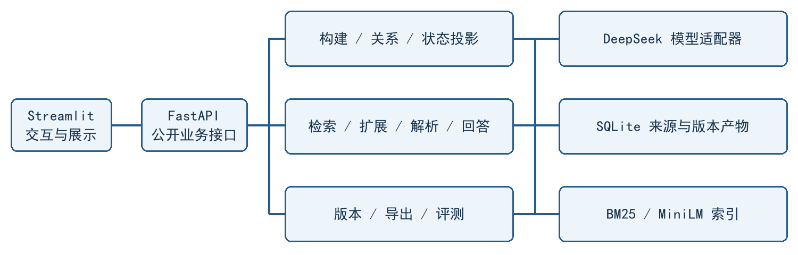
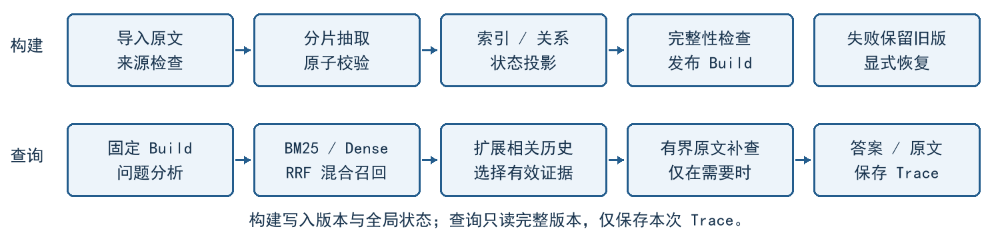
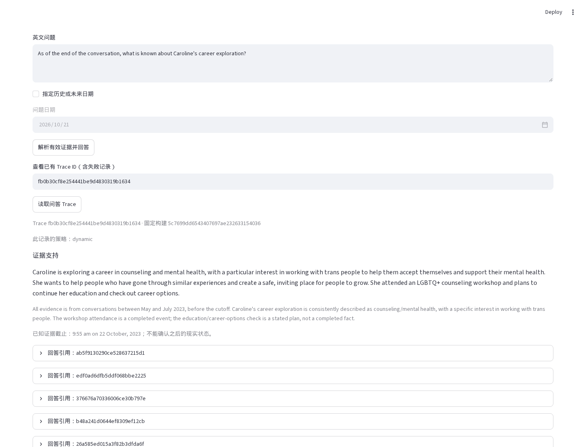

M4 过程材料离线阅读页
在阴雨天游泳 · Team 3 · 2026-10-23
报告 PDF 独立交付。阅读顺序和材料状态见下方 M4 过程材料说明；本页不运行代码或模型。
主要说明已内嵌；JSON/CSV 和截图随包。标注“在线补充”的链接不属于离线载荷，需要网络和仓库权限。
过程说明与复核
报告与需求设计
真实实验与来源核查
真实结果只读页面
受控页面与工程检查
文档构建与打包
校验与清单
CONTEXT.md
动态对话记忆术语，草稿
本表依据课程课件及团队已确认方案统一项目用词。成员若有不同理解，应先讨论定义，再修改文档。
Language
**原始对话**：按会话与轮次组织的历史交流文本，是提取记忆和核对来源的证据。它不包含供评测使用的标准答案。
**结构化记忆 Memory**：从原始对话提取、带有内容、时间和来源的记录。它不等同于原始文件，也不保证在所有问题下都有效。
**原子事实**：可以独立核查来源、判断关系及适用性的单项陈述。一条 Memory 表达一项原子事实，不将不同状态维度捆绑为一个判断单位。
**陈述性质**：原文将某项信息表达为事实、计划／意愿或不确定陈述的性质。事实陈述不等同于独立核实，否定信息也必须保留。
**来源证据**：支持某条记忆的原始会话与轮次。多个 Memory 可以指向同一轮，一条 Memory 也可能由多轮支持。
**原始轮次 Source Turn**：原始对话中可定位的一轮交流。其身份由对话及该对话内的轮次 ID 共同确定。
**抽取记忆 Extracted Memory**：系统从原始对话提取的 Memory，带有一个或多个来源证据。
**召回记忆 Retrieved Memory**：某次查询检索得到的 Memory；被召回不代表对该问题有效。
**事件 Event**：在某时发生的事实。后续状态变化不会抹除该事件发生过的历史意义。
**持续状态 State**：在某段时间或特定条件下适用的事实，其适用边界可以不确定。
**状态维度 state_key**：在同一对话与实体范围内，标识一组记忆共同描述的状态维度，不包含公司等具体状态值。共享维度不代表这些事实必然互斥。
**记忆关系 MemoryRelation**：有来源证据支持的 Memory 之间的保留、推进、替代或未消解冲突关系。
**相关历史扩展 Related History Expansion**：由初始候选出发，补充与其状态关系或实体及状态维度有关的历史记忆。
**历史记忆 History**：保留的结构化 Memory 及其来源。旧 Memory 因状态更新或替代而不再代表当前状态时，仍属于历史记忆。
**构建版本**：一次记忆构建所对应的来源、Memory、关系、状态投影及索引的共同版本。未完成版本与完整版本相互区分，一次查询不混用多个版本。
**当前状态 Current State**：依据历史记忆及状态关系整理的当前状态摘要，可能包含尚未消解的冲突。它不等同于全部历史记忆，也不等同于每个问题下的有效记忆。
**已知状态截止时间**：没有明确查询日期时，所选对话最后一次会话的时间。它界定系统对“现在”的已知证据范围，不代表之后状态未变化。
**相关记忆**：检索阶段找到、与当前问题有关的候选历史记忆。相关不代表当前有效。
**有效记忆**：在当前问题所指的时间与状态下，经状态关系判断后可用于回答的记忆。它不一定是时间最新的一条。
**有效证据解析 Effective Memory Resolution**：根据具体问题的人物、状态及时间条件选择有效 Memory，并解释证据适用性。一次查询的选择不等于全局状态发生变化。
**证据缺口**：现有证据不足以支持回答问题或其中某一子问的情形。已具备双方证据的未消解冲突不因此自动成为证据缺口。
**原文证据兜底**：查询中补充原始对话证据以弥补证据缺口的过程。补充的原始证据不等同于新抽取的 Memory。
**状态关系判断**：判断相关历史记忆之间的保留、更新或替代关系，并识别尚无法消解的冲突。
**RETAIN**：证据支持旧事实在对应语境下继续适用。没有新消息本身不足以证明保留关系。
**UPDATE**：同一过程的阶段推进，旧信息保留历史意义。首版采用该操作定义，课程评价时仍需对齐标注。
**SUPERSEDE**：新证据明确替代同一状态维度中的旧取值，历史证据仍保留且仍可适用于历史问题。首版采用该操作定义，课程评价时仍需对齐标注。
**CONFLICT**：相同适用条件下的陈述互相矛盾，且现有证据无法消解。系统不能仅因一条记录更新就断言另一条为假。
**关系未确定**：现有证据不足以建立 Memory 之间的关系，不等同于证据互相矛盾，也不强行归入 RETAIN、UPDATE、SUPERSEDE 或 CONFLICT。
**证据检索 Recall@K**：前 K 个检索结果对标注证据的覆盖程度。结果如何映射回原始轮次及具体计算口径需以评测脚本为准。
**课程开发集**：教师指定、允许用于开发和调整系统的对话集合。
**本地测试集**：团队自行选择、用于检查系统泛化表现的对话集合，不用于调参。它不等同于教师的隐藏评分集。
**隐藏评分集**：教师用于最终评分、事先不公开的评测集合。本地测试结果不能代表该集合上的最终分数。
**模型生成动态标签**：模型依据原始对话及标注规则生成的关系或有效证据参考标签。未经独立核查时，它不属于课程或人工真值。
**已核查动态标签**：经人工独立检查来源证据、适用时间及关系含义后接受或修正的动态参考标签。它用于本组标注集的评价，不代表教师隐藏评分集的标准答案。
**Full Text 基线**：在生成模型上下文允许时，以完整原始对话作为回答依据的对照方法。它与检索方法的输入量分别记录，不能将被截断的对话冒称为完整全文。
**基线运行得分**：在全部具有适用参考答案的计划样本上汇总、将运行失败记为零的补充得分。它与仅对成功样本计算的 QA 分数分别报告，不等同于教师评分。
data/raw/locomo/README.md
LoCoMo 本地原始数据
官方数据位于 locomo10.json（在线补充）。来源为 snap-research/locomo（在线补充），2026-10-19 下载，上游 commit 为 `3eb6f2c585f5e1699204e3c3bdf7adc5c28cb376`。
文件保留上游原文，没有清洗或改写。许可证原件为 LICENSE.txt，标明 CC-BY-NC-4.0。逐文件 SHA-256、上游路径、对话统计及证据异常位置见 provenance.json。
内容和边界
数据包含 10 段对话、5,882 个轮次和 1,986 条 QA。每段对话内的 `dia_id` 无重复；跨对话定位证据需要同时使用 `sample_id`。
- `conversation`：原始对话，作为本项目记忆构建输入。
- `observation`、`session_summary`：官方生成的观察与会话摘要。
- `event_summary`：事件摘要任务标注。
- `qa`：问题、类别、证据以及答案或对抗答案，供评测使用。
课程指定的 6 段对话及开发/测试划分尚未确定，本目录保留全部官方数据，不擅自指定测试集。课程动态状态关系、有效 Memory 标注未包含在下载文件中。
证据 ID 检查
共发现 9 个 evidence 列表元素不能直接匹配所在对话的单个 `dia_id`，位置见 provenance。部分元素包含以空格或分号分隔的多个 ID；另有 `D`、`D:11:26`、`D30:05` 及找不到对应轮次的 ID。后续评测需区分可解析的组合引用、格式问题和缺失引用。
当前只报告异常，不自动修复原始数据，也不把异常样本静默删除。证据解析与计分政策需要在评测实现前确定。
上游评测参考
官方 README（在线补充） 说明数据结构和运行方式；evaluation.py（在线补充） 与 evaluate_qa.py（在线补充） 保留官方 QA 评测实现供阅读。这些文件只是参考副本，不构成可独立运行的上游环境，未安装其依赖或执行模型调用。
官方实现包含答案规范化、词干化和类别相关的计分分支，不能未经对齐就用普通 token F1 替代。课程 Recall@K 与动态状态准确率仍需本项目实现并核对口径。
docs/adr/0001-memory-architecture.md
M3/M4 记忆架构与实现决策
2026-10-19。本文记录组长本次明确要求保存的架构与技术决策。Q1–Q20 及最小数据契约、实现顺序已确认，完整规格已发布为 Issue #4（在线补充），正文原样保存在 spec 副本。下列实现细节和课程外部依赖仍须落实；本文不代表实现或实验已经完成。
课程核心依据为 0 - Project (2026).pdf（在线补充） 第 9–13 页。宏观范围沿用 M2 提案（在线补充），实现边界以本文新增决定为准。本文不改写历史交付包。
2026-10-19 课程评测数据约束更新
用户在本次 `grill-with-docs` 访谈中转述教师的新说明：开发使用 `conv-26`、`conv-30`、`conv-41`、`conv-42`；本地测试集由团队自行选择；教师不公开最终评分集。此前关于必须等待课程提供六个 ID 和固定 4/2 划分的限制据此更新，不再作为启动真实开发集实验的前提。首轮访谈随后确认，本地测试预先固定为 `conv-43`、`conv-44`，开发期间不查看其模型成绩，系统冻结后再测。两段是本组选择，不能把教师未限定的测试数量描述为必须两段。
该说明没有提供新的计分脚本、动态真值或指标口径，不能据此宣称正式课程评分已完成。原 spec、ticket 和历史实验记录保留原文；本次事实、待决策项与后续结论见真实 DeepSeek 与课程评测访谈（在线补充）。
状态判断的双阶段职责
构建时维护历史关系。新信息进入后，与相关历史比较，识别有证据支持的演化、替代或冲突关系，持久化 `MemoryRelation`，据此维护 `CurrentState`。关系包含原始证据，不以时间较新为由直接替代旧记录。
查询时执行有效证据解析。根据问题指定的人物、状态维度及时间，选取 `EffectiveMemories`，返回解释与证据。必要时补充判断构建时未确定的关系。查询采用旧 Memory 不得永久改写全局 `CurrentState`。
`CurrentState` 是历史与已确认关系的可重算投影，不是另一份事实来源。首版查询补判只保存在本次 Trace，不自动写回全局关系或 CurrentState。全局关系和投影只通过构建或显式重建更新，避免结果依赖提问顺序。错误关系的修订与重建细节待定。
证据不足时允许关系尚未确定，不强迫四选一。只有证据实际矛盾且无法消解时才标记 CONFLICT；未找到变化证据不能证明旧状态一直持续。
首版标签采用下列操作定义，取得课程标注后再核对差异：
| 标签 | 判定条件 |
|---|
| RETAIN | 证据支持旧事实在对应语境下继续适用，不能仅因没有新消息而判定 |
| UPDATE | 同一过程发生阶段推进，例如研究、申请、通过面试 |
| SUPERSEDE | 新证据明确替代同一状态维度中的旧取值，例如明确从 A 搬到 B |
| CONFLICT | 相同适用条件下的陈述互相矛盾，且现有证据无法消解 |
| 未确定 | 证据不足以证明上述关系，保持未确定 |
关系必须附带来源、理由和适用条件。SUPERSEDE 不表示旧 Memory 对历史问题永久不可用。
检索后扩展相关历史
查询链路为：
Question → Query Analysis → Hybrid Retrieval → Initial Top-K Candidates
→ Related History Expansion → Effective Memory Resolution
→ Answer / Evidence / Trace
原始问题始终参与检索，问题分析失败时回退原始问题。沿已有状态关系、同一实体与状态维度补充必要历史，再解析有效证据。第一版使用 SQLite 关系表与 `state_key` 分组，不引入图数据库。
例如，研究领养机构、申请领养机构、通过面试是三个阶段。问题询问申请之前做什么时，只召回申请与面试不足以回答；历史扩展应尝试补入研究阶段。
扩展不能恢复构建时未抽取的事实。失败分析分别记录抽取遗漏、初始检索遗漏、扩展遗漏及有效证据解析错误。Trace 分别保存初始候选与扩展结果，记录每条补充 Memory 的入口和原因，不能无界读取整段历史。
初始配置为 BM25、Dense 各取前 20 条，经 RRF 得到初始前 20 条；从初始集合扩展一跳已有关系，并补充同一 state_key 下与问题时间有关的历史。初始与扩展结果去重后合计最多 60 条，达到上限时记录截断，不宣称证据集合完整。同键补充不会启动第二轮关系遍历。排序细节和最终 token 预算由实现固定并记录。
上述数字、RRF 参数及候选预算集中放在配置文件，不散落在业务代码中。后续通过开发集验证和调整；每次运行保存实际生效配置，基线比较记录各自候选与最终证据预算。初始数值不是效果保证，修改配置也不能无痕改变已完成构建的版本指纹。
首版查询不自动回原文补抽或修改记忆库。证据不足时明确说明，允许查看来源及显式重建。在线补抽作为后续独立扩展，不与首版状态解析混合。
事件、状态与状态维度
| 概念 | 示例 | 原则 |
|---|
| Event | 2023 年 1 月失业 | 作为历史发生事实保留；之后就业不抹除失业事件 |
| State | 在 DoorDash 工作 | 可有适用时间区间；无法确定的边界保留不确定性 |
| State Transition | 从申请到通过面试 | 可记录 UPDATE；前序阶段仍有历史意义 |
| Supersession | 从居住 A 改为居住 B | 同一单值状态条件下可能替代，不能仅按新旧时间判断 |
| Conflict | 同一时段同时声称住 A 与 B | 无法消解时并存并保留双方来源 |
一条 Memory 表达一个可独立判断的事实，避免住所与就业等不同维度随同一记录一起失效。同一轮可产出多条 Memory，多轮也可共同支持同一 Memory；整轮对话或整段摘要不直接作为一条状态记忆。
Memory 同时保留陈述性质，至少区分事实陈述、计划／意愿和不确定陈述，并保留否定信息。计划不直接成为已实现的 Current State，计划取消也不抹除曾有该计划的历史。这里的事实陈述指原文对事实的断言，不代表系统已独立核实现实真伪。
`state_key` 使用对话 ID、实体 ID 和状态维度定位记忆组。公司等状态值独立存储，不纳入 key，避免转职后拆成无法沿同键扩展的记忆组。例如：
conv-26:Caroline:adoption_status
conv-30:Gina:employment
conv-30:Gina:business
示例中的人物名仅用于阅读，最终实体 ID 格式待定。官方 `sample_id` 原样保留；不同对话的同名人物默认隔离，不自动合并。允许同一状态维度的多个事实并存，不能仅因同键而判为互斥、替代或冲突。
就业与网上商店经营仍属于不同状态维度，同键扩展不能自动连接两者；经营商店也不能单独证明不再受雇。课件中的“当前职业/业务状态”示例需结合查询语境解释，不能转成无条件的全局 SUPERSEDE 规则。跨维度关系与扩展策略待定。
时间语义
未指定日期的“现在”默认指截至所选对话最后一次会话的已知状态，回答显示该截止时间，不声称掌握对话结束后的现实变化。明确指定日期的问题按该时间解析；超出证据范围时保留不确定性。
分别保留会话时间、原始时间表达和推导的事件时间。事件时间可为日期、范围或未知，不把会话时刻直接当成事件时刻，不把模糊表达强制精确化。例如 conv-26 的申请记录表达为 this week，通过面试的记录表达为 last Friday；解析结果保留原始表达及会话锚点。
来源映射与评测隔离
区分三个对象：原始证据 `SourceTurn`、系统抽取的 `ExtractedMemory`、本次召回的 `RetrievedMemory`。RetrievedMemory 是查询结果中的 Memory，不另建一份事实记录。
一条 Memory 可由多个原始轮次支持，保留来源列表。每个来源至少能定位对话、会话与 `dia_id`；`dia_id` 只在对话范围内使用，不能作为跨对话全局主键。
官方数据中的 `conversation` 是构建输入；`observation`、`session_summary` 是生成的辅助材料，`event_summary` 是事件摘要标注，`qa` 包含问题、答案、类别及证据。默认从原始 conversation 抽取，不把这些附加字段当成本系统已构建的 Memory。QA 答案与证据标注不进入抽取、索引或线上状态解析输入，只供评测使用。
同时保存 Memory 级排序结果与 Source Turn 级证据覆盖。初始 Top-K、扩展后集合和最终有效集合分别记录，不能混称同一个 Recall@K；课程确认 K 的单位和计分方式后再实现最终指标。无证据标注、无答案、畸形证据 ID 的样本单独报告，不静默丢弃或伪造映射。
证据 ID 原文保留。一个列表元素包含多个合法 ID 时，拆分后逐个校验；拼写异常或缺失引用不猜测修正。确需修正时单独保存可审查的映射记录。无法可靠映射的样本仍可计算适用的 QA 指标，其证据 Recall 标为不可计算，不按零或正确计入。汇总同时报告计分样本数、未计分样本数和覆盖率，最终遵循课程口径。
官方有 QA 评测代码可参考，但不能代替课程的动态关系与有效 Memory 标注。测试集不用于调参。课程选定的六段对话、4/2 划分、动态标注与最终指标口径尚未取得。
取得课程划分前，用人工检查的合成案例验证当前、历史、冲突和证据不足行为，用真实数据检查导入与来源映射。暂不自行指定正式开发/测试集，不把系统生成的关系标签当成独立标准答案，不宣称课程指标达标。
构建与语言边界
首版英文作为唯一检索语言，Memory 的检索文本与输入问题使用英文，不自动把中文问题翻译后送入检索。界面标签和使用说明可用中文，原始证据保留英文。中文及跨语言检索不属于首版范围。
构建按片段保存成功结果、失败状态和构建版本，支持显式重试，避免全部重做导致重复调用。页面展示进度及未完成项，未完整构建的数据可以检查，但不能显示为完整结果。首版只允许一个构建任务运行，不引入外部任务队列。
查询固定使用一个完整构建版本，不混用新旧 Memory、关系、Current State 与索引。新版本全部构建完成且检查通过后才整体切换，失败时继续使用旧完整版本。首次构建未完成时只开放进度和部分结果检查，不作为完整记忆库回答。重复导入、缓存指纹及重启恢复细节待定。
技术选择
| 决策点 | 记录的选择 | 理由与边界 |
|---|
| 后端 | Python + FastAPI | 定义接口、测试与前端分工；接口清单待定 |
| Web | Streamlit | 通过 FastAPI 调用业务功能，只负责交互和展示，不直接读写 SQLite |
| 持久化 | SQLite | 课程规模下部署简单；原始证据、Memory 与关系可追溯 |
| 数据校验 | Pydantic | 校验 LLM 结构化输出；字段契约待定 |
| BM25 | rank_bm25 | 轻量，无须 Elasticsearch；分词规则待定 |
| Dense | 本地 sentence-transformers/all-MiniLM-L6-v2 + NumPy 相似度检索 | 首版固定一个英文 Embedding 模型，暂不引入独立 Vector DB；模型、维度与版本随索引记录 |
| Hybrid Fusion | RRF | 按排名融合不同通道，避免直接混合不同量纲的分数；参数集中配置并随运行记录 |
| LLM 调用 | DeepSeek 官方 API + 独立 Model Adapter | 首版选择当前最新公开版本对应的 deepseek-flash，官方直连，不设费用上限；不预设多供应商插件框架 |
| Memory Relations | SQLite 关系表 | 支持关系查询与历史扩展，无须图数据库 |
| State Projection | 可重算视图或缓存表 | Current State 可从历史与关系重建；具体形式待定 |
| Graph | 预留 GraphRetriever 的设计方向 | M5 有余力再评估；首版不创建无实现的接口或图依赖 |
这些是技术方向，不代表依赖已安装、版本已锁定或兼容性已验证。选择具体版本与模型后，实施前核对官方文档。
首版采用单体后端，调用路径为 Streamlit → FastAPI → 业务模块 → SQLite／检索索引，本地启动前后端两个进程。首版只接一个生成模型和一个 Embedding 模型。
Embedding 使用项目独立环境中的本地 `sentence-transformers/all-MiniLM-L6-v2`。根据 官方模型卡（在线补充），输出 384 维向量，适用于句子和短段落语义检索，默认截断超过 256 word pieces 的输入。实现必须检查输入长度，避免静默丢失内容；具体版本和超长处理策略待实现时固定。本轮未安装模型或依赖。
DeepSeek 官方接口核对
2026-10-19 核对 官方模型表（在线补充） 与 首次调用说明（在线补充）：`deepseek-flash` 当前对应 `DeepSeek-V4.1-Flash-1017`，`deepseek-v4-pro` 对应 `DeepSeek-V4-Pro-0813`。按组长“最新可用”要求选择 Flash，不能仅凭 Pro 名称把它当成更新版本。OpenAI 格式 Base URL 为 `https://api.deepseek.com`。
model ID 是服务别名，不保证固定底层权重。实验需记录请求 model ID、返回的模型标识、运行日期及当时官方标明的版本；官方升级后重新验证，不能把服务别名当成完全可复现的权重快照。本次仅核对文档，尚未验证账户权限、实际调用或输出质量。
首版统一使用 Chat Completions，显式发送 `thinking={"type":"disabled"}`，在 OpenAI Python SDK 中放入 `extra_body`，不依赖默认开关。使用 `response_format={"type":"json_object"}` 请求 JSON，再由 Pydantic 检查字段。普通 JSON 模式不等同于 JSON Schema 约束。提示词明确要求 JSON；空内容、截断及校验失败采用有限重试，仍失败则显示错误，不当作有效空结果。依据为 思考模式（在线补充）、Chat API（在线补充） 和 JSON 模式（在线补充）。
先固定上述配置完成基线，再依据开发集判断是否调整思考模式；不预先宣称关闭思考的准确率足够。不设费用上限不代表采用无限重试。
实现细节与外部依赖
- 课程标签与首版操作定义的对齐；首版标签边界、查询补判不自动写回、重建替换投影已确认。
- 实体与状态维度的规范化、跨维度关系、候选排序细节及 token 预算；扩展一跳、候选上限及集中配置已确认。
- 最小契约已确认 SourceTurn、Memory、MemoryRelation、BuildVersion 与 QueryTrace 的必要信息，见完整 spec；具体 ID 编码、schema 类型与 API 资源名在实现时采用最小可逆方案。
- 构建任务执行方式、重启恢复、重复导入与缓存失效策略；片段进度持久化、显式重试和完整版本整体切换已确认。
- Embedding revision、超长输入处理、具体生成参数与重试上限；模型名称、本地 Embedding、Chat JSON 加校验及关闭思考已确认。
- 课程数据划分、动态测试标注及最终指标口径；证据 ID 异常的保留、显式映射与未计分报告规则已确认。
上述事项不要求重复需求访谈。可逆实现细节采用简单默认值、集中管理并验证；课程资料作为显式外部依赖。已定行为发生变化时修订规格，不把外部依赖缺失伪装成正式评测完成。
docs/adr/0002-real-model-baseline-protocol.md
真实开发集基线与独立本地测试协议
2026-10-21状态修订：用户决定停止扩展原Issue #15，课程项目转向增量质量迭代。原定757题、四策略3,028项全量评测未执行，#21本轮实验取消；#20固定预检低优先级延期，不再自动安排全量。此前“质量关卡后继续完整基线”的阶段安排由本决定取代，历史协议、数据隔离与报告口径保留。详见范围结案记录。
2026-10-19。用户在 `grill-with-docs` 访谈中确认 Q1–Q6 的推荐方案。本条记录已确认的评测协议，实际实现与运行状态见访谈和执行清单（在线补充），不代表实验已经完成。
用户随后调用 `to-spec`，完整规格已发布为 Issue #15（在线补充），正文原样保存在本地副本。标签 `ready-for-agent` 表示可开始实现，不表示真实评测已完成。
数据与阶段边界
课程开发集固定为 `conv-26`、`conv-30`、`conv-41`、`conv-42`。本地测试预先选定 `conv-43`、`conv-44`，开发期间不查看其模型成绩，系统冻结后再测。教师的隐藏评分集另行保密，本地结果不能替代最终评分。本阶段先完成真实开发集基线和失败分析，后续优化与本地测试另行推进。
这一选择用固定的独立对话检查泛化，避免依据已看到的模型成绩重新挑选测试集。改变测试身份或在查看结果后调参，会改变结果可支持的结论，必须留下记录。
完整全文与预算
Full Text 在生成模型上下文允许时输入完整原始对话，RAG 继续采用检索和证据预算。模型、生成参数和回答契约保持一致；分别报告输入量、截断或超限、耗时与用量，不声称上下文开销相同。
该决定更新 ADR 0001 及历史规格中尽量统一最终证据预算的安排。共享短预算会让 Full Text 只看到按位置截取的前缀，因此本次选择完整对话作为主基线；超限显式报告，不能退回截断后继续标为完整全文。历史 spec 与 ticket 原文保留。
运行失败与指标
同时报告成功样本的 QA 分数、运行成功率，以及在具有适用参考答案的全部计划样本上、将运行失败记为零的补充运行得分。无标准答案等不可计分情形单列，不能算成零或正确；补充得分不冒称教师计分口径。
动态指标缺少独立标签时为“未评”。后续采用强模型辅助生成带证据的候选动态标签，由人独立核查小规模样本；模型生成参考、已核查标签及课程真值分别说明。仅生成标签不宣称完成训练蒸馏，本阶段不增加学生模型训练任务。
2026-10-20 质量增量的阶段顺序修订
用户在新一轮 `grill-with-docs` 访谈中确认，先推进 P0 抽取示例、关系候选及原文兜底，再推进 P1 有效证据解析，逐项记录实现身份、验证与对照；关系案例 172 的语义修复作为独立 P0 子增量。当前实现停在语义关卡，先完成这些质量增量，再以通过关卡的新身份继续完整基线，避免将已知未通过的行为作为冻结版本。
这修订上文“先完成基线再优化”的阶段顺序。旧实现、失败关卡和实验结果保留，原基线仍未完成；新身份不混入旧 Run，也不直接继承旧关卡的通过结论。开发集、本地测试隔离、指标、完整 Full Text 和独立语义核查要求继续适用。完整范围与验收已在质量改进访谈（在线补充）中确认，本次确认不代表实现或验收完成。
同轮最终确认保留原四策略，新增 `dynamic_raw_fallback` 作有限对照。完整 conv-26 Build 通过关卡并发布后，原五题四策略的 20 项 smoke 加上相同五题的新策略，合计 25 项逻辑 QA；所有实际请求和重试仍计入原 1,000 次账本。新策略不自动加入四段开发集全量计划，也不替换旧 dynamic 或改变默认；扩大范围及切换默认在有限对照结果可审核后另行决定。
docs/app/building.md
构建与检查原子 Memory
你可以从已导入的原始对话抽取 Memory，检查每条陈述及其来源，并显式重试失败片段。抽取结束的版本标记为 `extracted`，`query_ready=false`；它还没有完成索引、关系与完整版本发布。候选检查指南 说明显式索引阶段，成功后标记为 `indexed`，仍不能当作完整版本回答。历史状态指南 说明后续关系、投影和显式发布流程。
分阶段思考配置
当前默认按调用阶段设置思考强度。每项接受 `disabled`、`low`、`high`，
实际值进入构建指纹、评测配置及每次模型调用的安全 metadata。
| TOML 字段 | 默认值 | 阶段 |
|---|
| `extraction_thinking_effort` | `disabled` | 原子 Memory 抽取 |
| `relation_thinking_effort` | `high` | 历史关系判断 |
| `query_analysis_thinking_effort` | `disabled` | 查询分析 |
| `resolution_thinking_effort` | `low` | 有效证据解析，含原文兜底 |
| `answer_thinking_effort` | `disabled` | 答案生成，含原文兜底与 Full Text |
`thinking_enabled=false` 只保留为旧配置兼容字段；阶段字段决定实际请求。
开启时发送 `thinking.type=enabled` 与 `reasoning_effort`，不发送无效的 `temperature`；
关闭时发送 `thinking.type=disabled` 与既有温度。仅解析最终 JSON，不保存或展示
`reasoning_content`。参数依据 DeepSeek 思考模式文档（在线补充），
核查日期为 2026-10-20。
修改前备份本地 TOML。恢复备份即可回滚配置；旧版全关闭对照需要显式将五项均设为
`disabled`。修改阶段字段后新建 Build，不能继续旧指纹的未完成构建或恢复旧评测。
回放工具对未保存阶段字段的历史构建仍使用关闭思考的关系请求。
`relation_max_tokens` 可单独覆盖历史关系判断的输出上限，未设置时沿用
`model_max_tokens`。例如，本轮实验的 `high` 在 8192 上限下连续截断后，
新构建使用 `relation_max_tokens=16384`，抽取与查询仍为 8192。覆盖值进入构建指纹，
每次调用也记录实际 `max_tokens`；删除覆盖项即可恢复共用上限，需要另建 Build。
每条关系只能引用其两个端点 Memory 的来源，且须同时覆盖双方。
同批次其他历史 Memory 的来源即使存在，也不能作为这条关系的额外证据。
入口校验使用 `endpoint_evidence_required` 拒绝这种输出，与完整版本导出的既有校验保持一致。
`extract-v3-output-constraints` 明确时间锚点也必须出现在该条 Memory 的来源中，
并要求实体、维度名称遵守原有字符格式。抽取返回不合规或不完整 JSON 后的有限重试会附带安全错误代码、
字段位置及相同约束，不改变校验规则。既有 `extract-v2-examples` 构建保留原指纹。
前提
- 按 运行指南 启动 FastAPI 与 Streamlit，并导入一个数据集。
- 由你已有的受保护本地凭据方式向**后端进程**提供 `DEEPSEEK_API_KEY`。应用只在显式生成请求时读取该环境变量，不读取凭据文件，不加载 `.env`，不要求在聊天或配置文件中填写密钥。不要把真实值写进命令正文、仓库或实验记录。
- 查找已有凭据或为获授权的命令注入凭据时，先读本地凭据导航（在线补充）。
- 本地只运行一个后端进程。SQLite 旁的 `.runtime.lock` 使用 Linux 内核文件锁防止第二个进程错误地把正在工作的构建判为中断；适用环境是项目当前的 WSL Ubuntu。
缺少凭据时，构建记录显示 `missing_credentials`，不会发送模型请求。补齐受保护凭据后需要重启后端使其获得环境，并点击显式重试；系统不自动无限重试。
从页面构建
1. 选择数据集和对话 `sample_id`。
2. 点击 **构建所选对话的 Memory**。后端接受任务后，按片段处理原始来源。
3. 点击 **刷新构建进度**，查看成功、失败或待处理片段。已成功的 Memory 即使在其他片段失败时也可检查。
4. 展开 **版本、配置与模型调用记录**，核查数据指纹、实际配置、模型标识、Prompt/schema 版本、每次调用的时间及 token 用量。
5. 在 Memory 列表检查 `event/state`、`fact/plan/intention/uncertain`、正负性质、状态维度与独立的状态值。展开 Memory 查看时间字段及一个或多个原始英文来源。
6. 若状态为 `failed` 或 `interrupted`，检查片段错误码，然后点击 **仅重试失败或中断片段**。成功片段不会重新调用模型，也不会生成重复 Memory。
同一时刻最多一个活动构建。另一个构建请求返回 `409 build_already_running`。后端重启将未完成的活动构建标记为 `interrupted`，保留成功产物，不假称任务仍在后台继续。修改配置后必须创建新版本，不能用新配置重试旧版本。索引阶段的失败或中断使用独立索引按钮恢复，不使用抽取重试接口。
Memory 与时间契约
每条 Memory 表达一项独立陈述。`source_ids` 至少包含一个当前片段提供的来源；模型不能自行生成来源，不能引用另一对话或未提供给该片段的轮次。多条 Memory 可以共享来源，一条 Memory 可以引用跨会话的多轮来源（前提是它们在该片段中）。业务层再次校验注入适配器的产物。
`state_key` 使用 `<sample_id>:<entity_id>:<state_dimension>`，实际状态值独立存于 `state_value`。Memory 还归属唯一 `build_id` 与 `dataset_id`，不同对话不会因同名实体合并。同键事实允许并存，本阶段不推断互斥、替代或冲突关系。
`session_times` 来自原始来源；`time` 分开保留原始表达、锚点、推导日期或区间及依据。未知日期保留 `null`。推导日期必须有原始表达、来源锚点和依据；锚点必须在该 Memory 的来源内，原始表达必须实际出现在锚点文本中。计划仍标为计划，不因拥有未来日期而变成已发生事实。
原子性、事实性质和时间解释仍由模型输出决定。结构与来源校验、受控输出测试不能代替真实模型质量验证。
模型协议与有限重试
模型适配器通过现有 `httpx` 依赖直接请求官方 `/chat/completions`，不增加 SDK 或供应商插件框架。请求明确携带 `deepseek-flash`（可配置模型名）、按阶段确定的 `thinking` 与 `reasoning_effort`、`response_format={"type":"json_object"}`、JSON 提示和输出 schema。普通 JSON 模式不等于 schema 约束，响应仍须经过 Pydantic 和来源校验。
`model_retries` 表示首次请求之外的重试次数，默认 2，即每片段最多 3 次；`model_timeout_seconds` 默认 60 秒。没有额外 SDK 重试层。超时、HTTP 错误、空内容、截断、无效 JSON、无效 schema 或来源会有限重试，耗尽后失败。有效 `{"memories":[]}` 必须带非空 `no_facts_reason`，区别于提供方返回空内容。
每次尝试只保存请求模型、返回模型、时间、允许的 usage 计数与结果分类，不保存提供方原始异常、响应正文、认证头或隐含推理。已知服务版本记为 2026-10-19 官方说明中的 DeepSeek-V4.1-Flash-1017；服务别名可能变化，不能当作权重快照。
实现依据：DeepSeek Chat API（在线补充）、思考模式（在线补充）、JSON 输出（在线补充）；本地核查摘要保存在实验记录。对话、QA 及辅助标注的隔离规则沿用来源导入契约，模型输入仅由 `source_turns` 构成。
API 参考
列表继续使用 `{items,total,limit,offset}`，错误继续使用 `{error:{code,message}}`。
| 方法与资源 | 用途 |
|---|
| `POST /builds` | JSON `{dataset_id,sample_id}`；接受后返回 202 与新版本 |
| `GET /builds` | 分页列出构建；可按 `dataset_id`、`sample_id` 筛选 |
| `GET /builds/{build_id}` | 版本身份、状态、进度、配置及模型记录 |
| `GET /builds/{build_id}/fragments` | 分页读取片段来源、尝试次数、成功/失败状态及错误码 |
| `POST /builds/{build_id}/retry` | 仅重试失败/中断片段；成功或运行中版本不能重试 |
| `GET /builds/{build_id}/memories` | 分页检查该版本已持久化的 Memory |
| `GET /builds/{build_id}/memories/{memory_id}` | 精确读取该版本的一条 Memory |
任务由本地 FastAPI BackgroundTasks 执行，SQLite 持久化进度并用唯一索引限制活动构建；没有外部任务队列。片段的 Memory、来源映射与成功状态在同一事务提交。
验证
默认不触发真实付费请求：
uv run pytest -q
公开 API 测试使用真实 SQLite 与真正的模型适配器，只把外部 HTTP 模型响应替换为受控输出。测试覆盖多事实、多来源、事件/状态、计划、否定、不确定陈述、模糊日期、有限失败重试、错误对话来源、单活动构建以及失败片段恢复。
若你明确要执行付费集成检查，并已通过受保护方式向进程提供凭据，可单独运行：
LOCOMO_LIVE_MODEL=1 uv run pytest -m live_model -q
该检查只有一个小型合成构建，模型重试为 0，超时 30 秒。默认测试报告将它标记为跳过。它只检查真实提供方到来源映射的集成，不证明正式课程指标或整体抽取质量。实际执行状态见 `experiments/issue-6-extraction-validation.md`。
跨阶段恢复、完整版本固定及 JSON 下载见 恢复构建与导出完整版本。
抽取示例版本
`extract-v2-examples` 在原有严格 JSON Schema 和来源校验上增加合成示例，覆盖计划、
已发生事实、引语中的人物、否定及事件阶段。示例不属于构建来源；跨片段未提供的
人物上下文仍可能无法消歧。Prompt 改变构建指纹，需要创建新 Build，不能恢复旧契约。
docs/app/evaluation.md
运行独立评测与基线比较
评测 API 单独保存 QA 与证据标注，不将其传给抽取、索引、问题分析、有效证据解析或回答。可先在页面 **独立评测与基线比较** 生成开发集计划预览；执行评测前，按构建指南发布所选对话的完整版本。也可上传独立评测 JSON、保存 Input ID，并选择对照策略。一次运行在任何模型调用前固定所有对话版本；读取已有 Run ID 不重新调用模型。
运行真实模型会产生与所选样本和策略对应的模型调用。默认验证只使用合成数据和受控模型。`official_structure_only` 输入只允许映射检查，运行生成时返回 422。开发集固定为 `conv-26`、`conv-30`、`conv-41`、`conv-42`；本地测试固定为 `conv-43`、`conv-44`，开发阶段不查看其模型成绩。教师隐藏评分集另行保密，本地测试不能代表最终评分。独立动态标注仍缺失，动态指标未评。
真实实验的隔离准备、预检、全量启动与显式恢复见真实基线运行指南（在线补充）。
预览固定开发集计划
预览不需要完整 BuildVersion，也不调用生成模型或加载 Embedding 模型。先调用 `POST /imports/official` 校验并导入仓库官方原件，保存返回的 `dataset_id` 和 `artifact_sha256`。导入完整原件只保存数据，不运行本地测试。
在页面 **开发集评测计划预览** 选择对应原件 SHA256 和范围，点击 **生成开发集计划预览**。页面显示固定划分、问题位置、四种策略、题目和组合数量，并提供 JSON 下载。读取已保存 Plan ID 也只读取记录。
公开 API 使用相同入口：
curl -X POST http://127.0.0.1:8000/evaluation-plans \
-H 'Content-Type: application/json' \
-d '{"dataset_id":"<导入返回的 dataset_id>","artifact_sha256":"<导入返回的 artifact_sha256>","scope":"development"}'
`scope` 为 `development` 时，只选择四个开发对话，按固定开发对话顺序和各自原始 QA 顺序保存 757 道题、四种策略、3,028 个组合。`scope: "smoke"` 只读取 `conv-26`，按原始 QA 顺序为类别 1–5 各取首题，再保留原始顺序，共五题、20 个组合。官方原件中的原始位置为 `0`、`2`、`3`、`82`、`152`；任何必要类别缺失时返回 422、`smoke_categories_missing`。不依据模型成绩选题。
返回 201 和 `status: "preview"`、`plan_id`、`input_id`、`course_split`、`partition: "dev"`、`strategies`、`questions`、`question_count` 和 `combination_count`。每个问题保存 `sample_id`、从零开始的 `qa_index` 及 `question_id`，例如 `conv-26:qa:0`。重复问题文本保留为不同位置，不去重。`GET /evaluation-plans/{plan_id}` 读取完整计划，可将响应保存为 JSON。
计划保留数据版本、许可证、`source_sha256`、原件 `artifact_sha256`、校验依据和 provenance。必须显式指定原件；同一来源对应多个 QA 原件时不自动猜选。固定输入与范围生成稳定 Plan ID，重复请求读取已有计划。对应的独立评测 Input 只包含所选开发问题，并保存原始问题身份和来源身份，答案、证据和辅助摘要不进入 Source Turn、构建或查询。
预览数量不代表模型已经运行或评测已经完成。计划不固定 BuildVersion；执行前由评测运行固定完整版本。此入口不提供本地测试计划，也不获取隐藏评分题目。
输入和公开 API
`POST /evaluation-inputs` 接收：
{
"dataset_id": "<已导入数据集 ID>",
"kind": "synthetic",
"samples": [{
"sample_id": "conv-a",
"question": "Where does Alex live?",
"answer": "Rome",
"category": 4,
"evidence": ["D1:1 D2:1"]
}]
}
返回 201、`input_id`、原始字段和逐样本映射诊断。`GET /evaluation-inputs/{input_id}` 读取记录。证据仅在该 `sample_id` 的对话内验证，重复来源去重；列表元素只有在整串均由合法 `D<number>:<number>` 组成时，才按空白、逗号或分号拆分。任何必要引用畸形或不存在，都将整条样本来源覆盖标为不可计分。原文保留，不猜测修正 ID；未提供人工修正映射功能。
`POST /evaluation-runs` 接收：
{
"input_id": "<评测输入 ID>",
"strategies": ["full_text", "vector", "hybrid_no_resolution", "dynamic"],
"build_ids": {"conv-a": "<完整构建 ID>"}
}
`build_ids` 可省略，后端在首次模型调用前固定所有所选对话的完整版本。固定开发计划可直接提交 `{"plan_id":"<Plan ID>"}`，后端采用计划的 Input、四种策略和 `dev` 划分；附带字段与计划不一致时返回 422。手工 Input 接口继续保留。
默认创建立即返回 201 和持久 `run_id`，无需等待全量生成。每项完成后独立事务保存结果或安全错误、Trace、耗时、已报告用量及尝试历史。后续失败保留此前已提交结果。HTTP 201 表示记录已创建，每项是否成功以状态为准。测试或短合成调用可显式提交 `"wait": true` 等待执行结束；长评测使用默认异步模式。
查看进度和显式恢复
页面启动后立即显示 Run ID。点击 **刷新评测进度** 或输入 Run ID 后点击 **读取评测记录**，查看已提交结果、计划项状态、尝试次数和部分汇总。运行未结束时 `completed_at` 为 null，界面显示尚未完成。
`GET /evaluation-runs/{run_id}` 返回完整记录，包括 `items`、已提交 `results` 和部分 `summary`。`items` 是固定的逻辑计划，每项只计一次；其 `attempts` 按顺序保留各次错误、结果、Trace、耗时及用量。`GET /evaluation-runs/{run_id}/progress` 只返回 `run_id`、`status`、`completed_at`、`elapsed_seconds` 和状态计数 `progress`，适合轮询，不返回输入或富 Trace。读取上述资源不会调用模型。
Run 状态为 `running`、`completed`、`completed_with_errors` 或 `interrupted`。计划项状态为 `pending`、`running`、`succeeded`、`failed`、`interrupted` 或 `unknown`。后端重启将未提交的执行中项标为 `unknown`，活动 Run 标为 `interrupted`；未执行项保留为可恢复的中断项。启动不会自动续跑。
显式恢复使用：
curl -X POST http://127.0.0.1:8000/evaluation-runs/<Run-ID>/resume \
-H 'Content-Type: application/json' \
-d '{"retry_failed":false,"retry_unknown":false}'
默认只继续待执行或尚未开始的中断项，跳过所有已提交成功项。`retry_failed: true` 明确重试已记录失败项；`retry_unknown: true` 明确重试外部结果未确认项。页面提供对应复选框和 **显式恢复此运行** 按钮。重试成功保留首次失败及全部历史尝试。恢复已完成且没有可重试项的 Run 只返回记录。
恢复前重新核对原始 Input、Plan、题目及顺序、数据及原件身份、划分、策略、固定完整构建、配置、Prompt/schema、计分版本、运行依赖和实现 SHA256。不一致时返回 409、`evaluation_identity_changed`，旧结果仍可读取，应创建新运行。新活动版本发布不会替换本 Run 固定的旧完整版本。
模型返回后、事务提交前退出时，供应商可能已经计费，但结果无法确认。`unknown` 不代表没有调用，显式重试可能再次计费，系统不保证供应商恰好一次计费。已报告的用量与未知账单分别解释，不把缺失用量当作零。
本地后端仍由 SQLite 所有权锁限制为单进程，同一时刻只执行一个评测 Run。重复启动或并发恢复返回 409、`evaluation_already_running`。正常关闭在当前有限超时、有限重试的调用结束后停止，不再启动下一项，并在释放后端所有权前等待工作线程退出。没有外部队列或自动恢复循环。历史整批运行记录保持可读，缺少逐项身份的旧记录不能恢复。
策略与比较口径
| 策略 | 实际上下文 | 状态解析与额外调用 |
|---|
| `full_text` | 按原始位置排列的全部真实有文本 SourceTurn，不受 RAG 最终证据预算限制 | 不抽造 Memory，不检索或扩展；直接调用共享回答操作，引用 `memory_id: null` 与实际来源；孤立会话时间不制造来源 |
| `vector` | 原始问题的 Dense 排名，经 `initial_k` 和候选预算限制，再分配共享最终预算 | 不扩展、不解析；共用检索器仍执行 BM25 和一次问题分析，分析不影响 Dense 选择，额外调用保留在 Trace |
| `hybrid_no_resolution` | 真实 BM25/Dense/RRF 初始候选，加一跳及同键历史扩展 | 不调用有效证据解析，所有扩展候选进入共享最终预算 |
| `dynamic` | 初始检索、历史扩展、有效证据解析后的送达 Memory | 使用完整查询链路与持久 QueryTrace |
四种策略共享生成模型、温度、输出上限、回答 Prompt 和 schema。Full Text 的 `evidence_budget.budget` 为 null，`scope` 为 `complete_raw_sources`；RAG 保留配置中的候选预算和最终证据预算，后者默认 6,000。Full Text 上下文单位是 SourceTurn，其余排序单位是 Memory。不同策略的上下文长度不相同。
`evidence_budget.token_count` 使用 `regex-word-punctuation-v1` 近似计算实际回答证据的大小。每个模型操作还在 `model_metadata.request_context_estimate` 记录包含 system Prompt、JSON schema 和用户 payload 的完整 messages 近似计数，以及预留输出上限。这些计数都不是 provider tokenizer 结果或账单 token，也不用于猜测服务是否接受上下文。provider 已报告的 `prompt_tokens`、`completion_tokens` 和 `total_tokens` 单独保存在调用记录的 `usage` 中。
Full Text 的 `source_delivery` 保留有序的 `expected_source_ids`、`attempted_source_ids` 和 `delivered_source_ids`。成功响应标记为 `accepted`。请求收到 provider 响应时，送达列表表示该请求包含的来源；上下文被拒绝时 `provider_accepted` 为 false，不能据此称模型已使用这些来源。请求未收到响应时只记录尝试来源，送达列表保持空，状态为 `request_attempted`；未发起调用时为 `not_sent`。`raw_context` 与 `initial_source_ids` 保留完整应有输入，即使回答失败也可以核查末尾来源。
provider 明确拒绝上下文时，样本保存 `context_length_exceeded` 错误和 `evidence_budget.context_limit_exceeded: true`，不把运行失败当作证据不足。相同超长请求不再重试，也不会回退为前缀、摘要或分块后的“完整全文”；其他模型错误继续采用既有有限重试。regex 近似计数不能证明输入适合服务上下文，实际服务结果为准。
Vector 的 `retrieval.executed_components` 披露实际执行的问题分析、BM25、Dense 和 RRF。`selection.unused_components` 明确哪些步骤不影响 Dense 选择，`operations.query_analysis_unused_by_vector_selection.calls` 仍计入调用与 provider 用量。检索阶段耗时包含这些步骤，不将 Vector 冒称为只执行一次 Dense 的成本。
`memory_rankings` 保存真实 Memory 排名，`source_sets` 按阶段保存去重 SourceTurn；`source_coverage` 的分母是该样本所有可靠映射的独立 gold 来源。初始、扩展、动态有效集合和实际回答上下文分开统计。无状态解析的策略没有经验证的有效集合，其 `effective` 为 null。Full Text 和 Vector 未执行扩展，其扩展覆盖为 null。初始 K 指实际候选数，扩展集合与实际送达集合各自有独立数量，不将这三者统称 Recall@K。
QA 计分与不可计分项
计分依据仓库保留的官方 `data/raw/locomo/upstream/task_eval/evaluation.py`（upstream commit `3eb6f2c585f5e1699204e3c3bdf7adc5c28cb376`），仅采用规范化、NLTK PorterStemmer 和类别分支，不导入重型 BERTScore。
规范化依次去逗号、小写、删除 ASCII 标点、删除整词 `a/an/the/and`、合并空白，再做词干化。类别 1 先按逗号拆分预测和 gold，为每个 gold 子答案取最高预测 F1 后平均；额外预测不一定扣分，该规则不对称。类别 2、4 使用普通词干 F1；类别 3 先截取 gold 第一个分号之前部分。类别 5 使用官方拒答子串规则：预测小写后包含 `no information available` 或 `not mentioned` 得 1，否则 0；即使缺 gold 也按该分支评分，同时标记 `missing_gold`。这不是普通 token F1 或 exact-match accuracy。
数值 gold 保留原类型，计分时按官方方式转为字符串。缺少其他类别 gold、空答案、未知类别均返回 null 和原因。来源无法可靠映射不妨碍适用 QA 计分。每个指标分别报告 `scored`、`unscored`、`coverage` 和仅针对可计分样本的 `mean`，不把不可计分项算作零或正确。逐样本存未四舍五入值；缺 gold、未知类别、坏证据另有计数。
失败分母和部分结果
每个 `summary[strategy]` 并列提供下列指标。分母都按计划中的逻辑项计算，显式重试不会增加题目数。
| 字段 | 计算口径 |
|---|
| `qa` | 只汇总执行成功且可计分项的官方 QA 分数；`coverage` 为计分数除以全部计划项数，失败和未执行项均不产生 QA 分数 |
| `execution` | `planned` 为全部计划项数；分别报告成功、失败、待执行、执行中、中断待恢复和结果未知数量；`success_rate` 为成功数除以计划数 |
| `baseline_run_score` | 在具有适用参考规则的全部计划项上，将成功项 QA 分数相加，终态执行失败贡献零，再除以适用规则项数 |
补充的基线运行得分不等于教师评分，也不替代成功样本 QA。`numerator`、`denominator`、`excluded` 和 `failure_zero_count` 保留原始分子、适用规则分母、参考规则不可用项数及实际按零计入的失败数。类别 5 即使缺普通 gold 仍适用拒答规则；其他类别缺 gold 或类别未知时排除。坏来源标注只使证据覆盖不可计分，不阻断适用 QA，也不从基线运行得分分母中排除。
只要该组还有 `pending`、`running`、`interrupted` 或 `unknown` 项，`baseline_run_score.status` 就为 `incomplete`，最终 `value` 为 null。即使未执行项本来不可计分，也要等计划范围结束后才能报告最终结果。成功样本的当前 QA 均值仍可查看。所有项终态后状态为 `complete`；若没有适用参考规则，分母为零，得分仍为 null。
例如，五个具有适用参考规则的计划项中，四个成功且各得 1 分，一个执行失败，则 QA 均值为 1、运行成功率为 4/5、基线运行得分为 4/5。不能只用四个成功项作基线运行得分分母。
`overall_summary` 对所有计划中的样本与策略组合逐项汇总。`grouped_summary.conversation[sample_id][strategy]` 与 `grouped_summary.category[category][strategy]` 分别保留对话及 QA 类别的指标和分母。`grouped_summary.conversation_means` 单独平均各对话均值，不与总体逐题汇总混用。例如，两段对话分别得 3/4 和 1/1 时，总体为 4/5，对话得分均值为 0.875。
这些分组同时保留各阶段来源覆盖、独立动态指标及查询尝试用量。Full Text 的原始全体输入覆盖不是检索能力；Memory 排名与去重 Source Turn 覆盖继续分别记录。独立标签缺失、无成功项或空分组时，指标显示未评或 null。
读取、导出和成本核查
读取完整 Run ID 后，页面显示总体、各策略、对话及类别的指标，点击 **导出评测完整 JSON** 保存机器可读记录。`results` 是当前采用的逐项原始结果，`items[].attempts` 保留旧错误、重试、用量和耗时。读取已有记录不会生成答案；未完成记录导出的仍是部分结果。
`usage_summary` 汇总所有已保存查询尝试，包含后来恢复成功前的失败。`logical_attempts`、`logical_retries`、`first_attempt_failures` 和 `failed_attempts` 与题目分母分别记录。`reported_attempt_seconds` 与 `reported_stage_seconds` 合计已记录的尝试及阶段耗时，不将未知耗时填成零。`provider_retries` 单列一次逻辑尝试内模型适配器的重试。
`reported_tokens` 只合计 provider 实际报告的字段。字段完全未报告时为 null；有部分报告时保留已知合计，`usage_fields` 分别给出报告及缺失调用数和 `complete`。`calls_with_partial_usage` 统计只报告部分 token 字段的调用，`unknown_attempts` 统计没有已保存结果、包括仍执行中的尝试，`running_attempts` 单列当前执行中数量。`provider_usage_complete` 只说明可追溯范围内的字段完整性，不能据此恢复未记录的账单。已知 Embedding 调用和调用数未知的尝试分别计数。
`build_usage_summary` 按唯一固定 BuildVersion 汇总已保存的抽取和关系调用，与逐问题开销分开，同一构建不会因策略或问题复用而重复统计。历史构建没有保存的 Embedding 调用数和实际运行耗时为 null，并注明缺口。构建模型 metadata 只支持核对已保留调用，不能重建未保存的外部调用或完整费用。页面和 JSON 都不根据这些部分用量编造金额。
接入正式课程划分与独立真值
固定开发计划已自动生成 `kind: "course"` 和上述划分。手工独立评测输入仍使用 `kind: "course"`，在输入提供 `course_split: {"dev": [四个 ID], "test": [两个 ID]}`，六个 ID 必须互异且属于所选数据集。执行时显式提供 `partition: "dev"` 或 `"test"`，仅运行对应样本。服务不挑选划分、不自动调参。
每个样本可提供 `dynamic_truth`，必须有非空 `provenance`，并提供 `effective_memory_ids` 或 `relation_labels`：
{
"provenance": "<独立人工或课程标注来源>",
"effective_memory_ids": ["<固定构建 Memory ID>"],
"relation_labels": [{
"old_memory_id": "<旧 Memory ID>",
"new_memory_id": "<新 Memory ID>",
"label": "SUPERSEDE"
}]
}
有效集合使用集合完全一致匹配；持久关系标签按标注的有向端点比较，缺关系算错误。端点必须属于固定构建，否则该指标不可计分。关系标签允许 RETAIN、UPDATE、SUPERSEDE、CONFLICT、undetermined。该接入点不产生真值；系统关系、LLM 自标和 gold 来源 ID 均不能替代独立语义标注。缺少课程划分或独立标签时显示未评；样本对应指标仍单独报告覆盖率。
页面并列显示策略汇总、逐样本 QA、各阶段覆盖、错误、调用及完整配置。上下文表显示全文应有来源数、已确认请求来源数、送达状态、证据及完整请求近似计数、截断或超限与已报告用量；展开逐项记录可核查有序来源 ID。失败分析只有在独立证据足够时才能归因；当前自动说明统一标为可能原因，不能从 gold 来源是否命中直接断言抽取或解析错误。
读取 Run 后，使用 **同题策略切换与引用原文** 选择已保存题目及策略。
支持包含 `dynamic_raw_fallback` 的四策略对照；切换只显示已有结果，失败项也可检查。
点击 **读取引用原文** 才读取该答案引用的原始轮次，不会新建模型请求。
运行记录保存配置、完整构建元数据、Prompt/schema、Python/包版本、实现 SHA256、耗时、实际调用与 provider 已报告 token 用量。未报告用量单独计数，不将部分合计宣称为完整费用。
验证
uv run --locked pytest tests/test_evaluation_reports.py tests/test_evaluation_recovery.py tests/test_full_text.py tests/test_evaluation_plans.py tests/test_evaluation.py tests/test_queries.py -q
测试通过 FastAPI、真实 SQLite、真实 BM25/cosine/RRF、关系与扩展，只控制 LLM 与 Embedding。计划预览实验记录见 Issue #16 验证（在线补充），既有评测记录见 `experiments/issue-11-evaluation-validation.md`。未进行正式测试集调参或付费模型质量评测。
创建响应丢失后的身份发现
`POST /evaluation-runs` 可选接收 32–64 字符的 `creation_token`，原样保存到 Run。同一 Build 或 Run 类型内重复使用非空 token 返回 HTTP 409，SQLite 唯一约束阻止创建第二资源。它用于关联客户端请求与已创建资源，不是认证凭据，也不承诺提供方恰好一次调用。`GET /evaluation-runs` 返回轻量分页列表，支持 `creation_token` 精确筛选、`limit`（1–100）与 `offset`（非负）。列表仅含 Run ID、状态、计划 ID 与关联 token；完整身份继续从 `GET /evaluation-runs/{run_id}` 读取。实验入口的 `recover --resource-id` 在核对完整身份后保存 receipt；发现候选不会自动认领或重建。
原文兜底有限对照
`dynamic_raw_fallback` 是独立策略，不替换 `dynamic`，也不自动加入全开发集计划。
创建 `scope: "smoke"` 的 `/evaluation-plans` 时，显式设置 `include_raw_fallback: true`，
可在原五题四策略20项之外增加同五题新策略，共25项逻辑 QA。development 范围拒绝该开关。
所有实际分析、解析、回答和重试分别记账，25项不代表25次 HTTP 请求。
新策略的 initial/expanded 排名单位仍为 Memory，effective/answer_context 标明 Memory + SourceTurn。
最终来源覆盖使用实际交付的联合来源，原文阶段独立记录。
Memory 级动态参考不能用作混合证据真值，缺少独立标注时指标保持未评。
Run 身份包含独立 Prompt、schema、配置及源码摘要，不恢复旧实现身份的 Run。
对包含新策略的有限 Run，可设置 `evidence_profile: "focused"` 与默认 `expanded` 对照。
该字段仅影响新策略，写入 Run 身份和 QueryTrace；同一 Run 的旧四策略继续使用各自既有路径。
恢复执行时核对保存的模式及源码身份，不将两种输入的结果混成同一策略运行。
docs/app/querying.md
使用有效证据回答问题
完整版本支持英文当前与历史问答。后端先固定一个完整 BuildVersion，再执行问题分析、真实 BM25/Dense/RRF 检索、相关历史扩展、有效证据解析与答案生成。查询只追加候选、扩展和 Trace 记录，不修改 Memory、全局关系或 Current State，也不在线补抽原文。
准备和操作
先按运行指南启动服务，按构建指南、检索指南和历史状态指南完成抽取、索引、关系及完整版本发布。问答需要本地 Embedding 和受保护环境提供的 DeepSeek 凭据；不要把凭据写入配置、请求正文或仓库。
1. 在页面选择完整构建版本。
2. 在 **有效证据问答** 选择 **Dynamic** 或 **Dynamic + 原文兜底**，再输入英文问题。切换不会调用模型；默认以对话最后一次会话为已知截止时间，需要历史或未来日期时，勾选 **指定历史或未来日期** 并选择日期。
3. 点击 **解析有效证据并回答**，检查证据支持、证据冲突或证据不足状态。
4. 展开回答引用，查看实际来源英文原文。展开候选与有效集合，检查初始召回、历史扩展、选择和排除理由。
5. 展开完整 Trace，检查固定版本、时间条件、关系条件、补充判断、截断、配置、模型调用和已报告 token 用量。
失败响应显示错误及 Trace ID；页面同时读取失败 Trace。也可以在 **查看已有 Trace ID（含失败记录）** 输入 ID，重新读取持久记录。模型或检索执行失败与证据不足分别记录，不将失败当作有效的空证据。
在评测页面读取已保存 Run 后，使用 **同题策略切换与引用原文** 选择题目和策略。
已保存的 Dynamic、原文兜底、Hybrid 和 Full Text 答案可直接切换；不会新建或重试查询。
点击 **读取引用原文** 只读取该答案引用的来源，失败项显示错误记录。完整 Trace 仍可展开检查。
历史扩展使用与有效证据解析相同的查询日期：优先使用页面/API 的 `requested_date`，其次解析问题中唯一明确的 ISO 或英文日期。候选达到上限时，同一 `state_key` 下覆盖该日期的已知有效区间优先进入补充集合；未知时间的历史仍可候选，不因日期被过滤。
API 参考
`POST /queries` 接收以下 JSON，成功返回 201 和完整 Trace：
{
"dataset_id": "<已导入的数据集 ID>",
"sample_id": "conv-a",
"build_id": "<完整构建 ID，可省略>",
"question": "Where did Alex live on 2023-05-01?",
"requested_date": "2023-05-01"
}
省略 `build_id` 时，服务在任何模型调用之前固定所选数据集与对话的活动完整版本。显式版本必须属于该对话并且已完整发布。首次构建未完成时返回 409 `no_complete_version`。新版本发布不会改变进行中的查询所用版本。
省略 `requested_date` 时，原问题中单个明确的 ISO 日期或英文年月日可作为显式日期；无法解析的表达或日期范围保留在原问题中交给解析模型，不擅自取范围端点；默认时间锚点仍使用原始会话的截止时间，不使用机器当前日期。Trace 区分 `explicit_request`、`explicit_question` 和 `conversation_cutoff`。问题分析推断的时间保留在分析结果中，不覆盖显式条件或默认截止时间，也不硬过滤历史。超出截止日期的回答强制保留 `insufficient` 状态，不能把未来计划视作未来已知现实。
`GET /queries/{trace_id}` 读取既有记录，不重新调用模型。执行失败返回安全错误码和 `trace_id`；通过此端点可检查失败阶段及有限调用记录。输入校验失败或无法固定完整版本发生在查询创建之前，不产生问答 Trace。
证据和预算
解析和回答是两个独立生成操作。解析必须对每条候选提供选择或排除理由；所有 Memory ID 必须来自所供固定版本候选。查询补充关系使用已有关系证据校验，仅保存在本次 Trace。历史查询可以使用已被替代的旧状态，不能总是从 Current State 选答案。计划、否定、事件、兼容状态与未知关系的语义由明确的操作提示词约束；受控测试不能证明真实模型的语义质量。
解析选择后，按扩展候选的稳定顺序分配 `evidence_token_budget`。预算统计实际传给回答的 Memory 字段及对应来源文本，使用 `regex-word-punctuation-v1` 近似计数，不等于模型实际计费 token。放不下的 Memory 不传给回答；Trace 分别保留解析选择、实际送达集合、遗漏 ID 和截断原因。截断只表示交付集合不完整，不自动表示问题无法回答。回答模型根据实际交付证据判断充分性，允许将 `sufficient` 降为 `insufficient`；控制器已知的证据缺口、冲突和未来日期约束不得升级。无证据时仍强制不足，冲突仍须引用双方；混合查询中支持某子问的证据组未交付时，该子问明确记录不足。
回答只能引用实际送达的有效 Memory 及该 Memory 的来源。跨版本、跨对话、候选外或被排除的引用触发有限重试，仍无效则失败。`sufficient` 需要来源，`conflict` 需要双方引用；`insufficient` 不允许提升为确定状态。部分不足时保留已支持的事实及其引用。
Trace 保存实际配置、查询提示词/schema 指纹、索引与投影身份、关系证据摘要指纹、阶段耗时、模型调用和 provider 已报告用量。缺少 provider 用量的调用单独计数，不能把已报告 token 合计当作完整费用。Trace 不保存凭据、原始 provider 响应或隐藏推理。
验证
uv run --locked pytest tests/test_queries.py -q
测试通过公开 API 使用真实 SQLite、BM25、cosine/RRF 和历史扩展，仅控制外部模型与 Embedding。覆盖当前/历史交叉提问、真实初始遗漏后的扩展、全局不改写、冲突、计划、未知关系、证据不足、未来、预算、非法引用和并发版本切换。执行记录见 `experiments/issue-9-query-validation.md`。真实模型与浏览器检查单独记录。
有界原文兜底
2026-10-21 的查询可靠性修复以回退后的 `5c1e23e` 为基线，保留原有实验数据。
当前采用核心 Memory 与来源优先交付，不恢复完整证据组排序或枚举题强制补查。
验证范围见查询可靠性记录（在线补充）。
`POST /queries` 可显式设置 `strategy: "dynamic_raw_fallback"`。默认 `dynamic` 继续只使用 Memory。
新策略先解析 Memory 并列出每个子问的覆盖。整体或任一子问不足时，仅检索一次原文，
有命中时再联合解析一次；无缺口不增加操作。整体不足仍可有引用地回答已知部分。
联合解析保留前次 coverage 的问题标识和已支持引用，包括部分不足项中的已知事实。
更改已支持项时，必须填写 `revision_reason` 并在该项引用新增原文；未说明的撤回或整项遗漏
触发既有有限重试。耗尽后若首次解析已有支持，控制器恢复该次有效证据，
将覆盖标记不足，说明新原文未完成核查，并记录 `raw_fallback.recovery` 和失败操作用量。
没有首次支持时仍返回执行失败。恢复不接受非法引用，也不声称旧判断已通过新证据核查。
真实矛盾、人物错配及适用时间变化可以修正初判；新原文缺少细节本身不能推翻已有支持。
联合打包先预留首次 coverage 的全部支持，包括 `insufficient` 项中的部分证据，
再放入可选原文和其他候选。预留无法放入时停止联合请求，恢复首次支持并标明不确定性。
Trace 仍记录 `omitted_previous_evidence`。这些结构约束不能自动证明修订理由的语义正确性。
原文只来自已 pin 的完整 Build 的全部输入轮次，包括未抽出 Memory 的轮次。
查询在读取事务内核对来源清单及规范化正文摘要，不读取 QA、Observation 或 Session Summary。
BM25 最多取3个中心，同 session 前后各1轮，去重后最多9轮；超长中心跳过，继续尝试后续匹配。
完整原文及元信息受 `raw_token_budget=2000` 限制，并占共同 `evidence_token_budget=6000`。
解析和回答的完整 messages 受 `resolution_input_budget=12000` 限制，包含 Prompt、schema 和载荷。
这些是 `regex-word-punctuation-v1` 近似单位，输出 `model_max_tokens=8192` 另计。
Trace 分开记录首次解析、兜底触发理由、排名、窗口、省略、联合解析、有效来源、最终送达及引用。
基础交付单元为核心 Memory 与全部原始来源；原问题词干匹配优先，同名人物优先，
同分时沿用现有 Hybrid／扩展顺序，不增加模型排序。共享 `state_key` 不再强制合组。
CONFLICT、SUPERSEDE 双方一同交付；before／after 等演化问题同时保留 UPDATE 端点。
必要关系组仍放不下时记录省略，不拆开后假定无冲突。缺失端点保存在 `incomplete_relations`，
缺失冲突、替代或问题需要的 UPDATE 端点时，解析不得给相关事实确定的适用性结论。
普通事实查询可独立采用 UPDATE 之前的事实，但不能据缺失端点声称演化链完整。
回答阶段优先交付仍有效的首次支持；确因最终证据预算省略的覆盖项降为不足。
原文独立引用使用 `memory_id: null`，Memory 引用继续绑定其来源。
混合证据可以保留 Memory 与原文、两条原文之间的冲突。查询不写回 Memory、关系或状态投影。
原 Full Text 继续使用完整全文契约，不复用本策略的片段预算开关。
精简证据输入对照
仅在 `strategy: "dynamic_raw_fallback"` 下，可设置 `evidence_profile: "focused"`。
默认 `expanded` 保留 D 的候选输入，便于单独比较 P1。
精简使用原问题的词面匹配及英文词干，不把模型推断的人物、日期或主题作为排除条件。
仅在单一明确命名人物、单问且该人物有原问题词面命中时裁选。
保留此人物的全部候选，以及其他直接匹配证据的关系连通组，
包括 undetermined、未知时间、未满足条件、并存状态和冲突双方。
复合问题、间接人物引用、多人物或匹配只落在其他人物时保留全部候选。
原文窗口不再二次裁剪，避免丢掉否定或指代上下文。
`evidence_selection` 记录逐项保留和省略原因；实际预算交付沿用上述核心证据规则。
精简阶段保留的关系组在交付时仍按查询必要性处理。词面精简不等同于语义充分性保证，
当前采用显式对照，不改变旧 dynamic 或新策略的默认模式。
主答案 `answer.answer` 仅用于直接回答问题；依据、未覆盖部分和适用范围放在可选的
`answer.explanation`，引用保存在 `citations`。两个回答 Prompt 共享可回答性规则，
逐个子问核对人物、时间与所问事实。整个问题没有可回答信息时，提示模型将主答案完整写为
`No information available.`，原因及相关背景放在 explanation。仅主题相关的背景不算部分答案，
其他季节的意愿不能回答指定季节的计划。确有子问获得支持时，保留直接事实及引用并另述缺口，
不能按 `insufficient` 状态统一替换主答案。此规则由 Prompt 约束，没有新增语义判别器或改写评分规则；
受控回归不证明真实模型始终遵循。
查询页面和评测结果页面分别展示主答案、说明和截止时间，JSON 导出保留完整 Trace；评分只读取主答案。
新策略的当前问题及超出截止日期的问题，控制器在 `answer_boundary` 单独记录会话截止和“后续现实未知”。
`answer_boundary` 标明控制器补充及版本，不追加到主答案，也不把边界冒称模型输出。
这只限定已知证据时间，不证明模型的任职、替代或冲突判断正确。
相对时间以引用来源的会话时间为锚点。`this week` 指包含该来源日期的一周，
不是此前一周；不明确具体日时保留时间范围或带锚点的原始表达。抽取、解析及回答共享此提示约束，
原文、`original_expression` 和 `session_time` 高于派生 `time.basis`。
查询副本对来源可核对的 `this week`、`last week`、`yesterday`、`last <weekday>` 使用确定性规则。
周按周一至周日；`last Friday` 指来源日期之前最近的周五，当天为周五时指前一周的周五。
周表达保留区间；事件区间不作为状态有效期。其他表达保持已有精度，不猜日期。
`time_diagnostics` 保存派生时间和查询时间的差异，`time_authority_version` 进入查询身份。
该过程不改写持久化 Memory、来源、索引或构建契约。
Resolution 负责适用性、来源选择和各部分覆盖；Answer 按已解析的覆盖生成答案，
不重新做关系推断。两个阶段均要求多项目问题列出所有已交付证据支持的不同项目，
包括同一来源中的多个项目；保留人物归属、计划与事实、否定和部分答案约束。
这些 Prompt 要求及合成示例不能代替真实模型语义验证。
docs/app/relations.md
检查历史关系、状态与相关历史扩展
本阶段保存有来源的历史判断，重算 Current State，并扩展真实初始检索候选。完成配置要求的抽取、索引、关系和投影后，可以显式发布一个完整构建版本供后续查询固定使用。最终有效证据解析与答案生成仍由后续票实现。
操作步骤
1. 按 构建指南 和 检索指南 得到 `indexed` 版本。
2. 点击 **构建或重试历史关系**，再刷新进度。后端为每条新 Memory 比较同对话、同实体的有界历史，保存每个比较的判断；证据不足也必须明确返回 `undetermined`。
3. 检查关系任务的成功、失败和截断计数。失败或中断使用同一按钮显式重试；成功关系任务与抽取片段不重复调用模型。
4. 状态为 `related` 时，检查 Current State 的截止时间、当前候选、历史、事件、非事实陈述、条件及冲突。需要时点击 **从历史与关系重算投影**；它重算缓存，不编辑事实。
5. 选择一条关系，检查两端 Memory、适用条件、理由和双方原文。
6. 如需供后续完整库查询使用，点击 **校验并发布为完整构建版本**。发布原子地切换所选对话的活动版本；未通过或失败的新版本保留旧完整版本。
7. 运行初始候选检查，再点击 **扩展当前候选的相关历史**，对比初始、补充与合并集合，核查每条补充的入口及截断原因。
状态路径为 `extracted → indexed → related → complete`。只有 `complete` 的 `query_ready=true`。完整版本的索引、抽取重试、关系构建和投影重算接口都拒绝修改；更正事实或关系需创建新构建。
判断与来源约束
| 判断 | 含义与保留规则 |
|---|
| `RETAIN` | 新证据支持旧事实继续适用；没有新消息不能证明保留 |
| `UPDATE` | 同一过程推进，旧阶段仍可用于历史问题 |
| `SUPERSEDE` | 同一实体和状态维度的事实状态被明确替代；不抹除旧原文 |
| `CONFLICT` | 同一适用条件下的矛盾尚未消解；保留双方来源 |
| `undetermined` | 证据不足，不强迫归入其他标签，也不作为跨键扩展边 |
每条判断必须引用提供的历史端点及当前新 Memory，限定同一构建、数据集、对话和实体。来源必须真实存在并支持双方。确定判断还需要实际出现在来源中的 `support_quote`。替代只允许事实状态，事件、计划或不确定陈述不能替代已发生的事实状态；`RETAIN`、`SUPERSEDE` 和 `CONFLICT` 必须同一 `state_key`。跨维度 `UPDATE` 需要明确来源支持，不因同人而自动连通就业与商店经营。
有日期的关系适用区间必须保留原始时间表达、来源锚点和依据；倒置区间、伪造锚点或不存在的表达会拒绝。条件若未知就保持未知，声称条件满足必须引用证明来源。上述校验不等于验证模型的语义判断正确性。
`relation_history_limit` 默认 20，限制每个新 Memory 的同实体先前比较量。未比较的较早历史计入 `history_comparisons_truncated`，不声称已经穷尽所有可能关系。没有先前 Memory 时不调用关系模型，也不伪造 RETAIN。Prompt、schema、投影版本和相关配置在构建开始前进入指纹。
保守的 Current State
截止时间从所选对话的原始会话时间解析取最大值，不使用主机当前时间或字符串排序。支持 LoCoMo 原始英文时间格式和无时区 ISO 时间；无法解释的时间阻止投影/发布，不猜测日期或时区。
事实状态默认是带“未知有效期”提示的最后已知陈述。只有有依据的替代/推进日期在截止时间内且条件成立，才将旧状态标为 `superseded` 或 `advanced`。未知日期、未来变化或未满足的条件不会无条件抹去旧状态。冲突保留双方，兼容的同键工作可以共存。事件保留在历史，计划、意愿与不确定陈述单列；否定事实保留负向性质。
投影只引用原 Memory ID 与来源，是历史和关系的可重算缓存；没有手工状态编辑器。候选查询及历史扩展不会重算或改写全局关系与状态。
有界历史扩展
扩展固定初始候选记录所属的 `build_id`。`expansion_depth=1` 只沿**原始初始集合**的直接、已确定关系补充历史；`0` 关闭关系边扩展。同一初始 `state_key` 的历史补充独立保留，两种补充都不会将新增 Memory 变成下一轮种子。未知时间不会被推断查询日期硬过滤。
默认合并上限 `expansion_max_candidates=60`，总扫描上限 `expansion_scan_limit=200`；共用 `candidate_token_budget` 和检索指南中的明确 regex 计数单位。原始初始记录不改写；合并集合按初始顺序、种子顺序/稳定关系 ID、同键历史来源顺序稳定去重。初始项遇预算不足停止保留其后初始项；补充项超预算跳过并记录原因，后续较小项仍可进入。重复路径保留多个 origins，不重复占用候选预算。
只有发现潜在额外候选或额外扫描记录时才标记截断；恰好达到上限不自动代表存在遗漏。补充记录携带种子、关系 ID/标签或 `state_key`、理由和适用条件。扩展无法恢复从未抽取的 Memory。
API 与后续查询契约
| 方法与资源 | 用途 |
|---|
| `POST /builds/{id}/relations` | 首次构建或显式重试关系阶段，返回 202 |
| `GET /builds/{id}/relation-progress` | 阶段进度、错误、Prompt/schema、历史比较截断 |
| `GET /builds/{id}/relation-tasks` | 分页任务、尝试次数及安全调用元数据 |
| `GET /builds/{id}/relations` | 分页历史判断，含未确定结果 |
| `GET /builds/{id}/current-state` | 读取固定投影及截止时间 |
| `POST /builds/{id}/current-state/rebuild` | 仅未发布的 `related` 版本可重算 |
| `POST /builds/{id}/publish` | 检查全部阶段并原子切换活动完整版本 |
| `GET /versions/pin?dataset_id=...&sample_id=...` | 固定该对话的活动完整构建 ID；可传 `build_id` 检查指定完整版本 |
| `POST /candidate-expansions` | JSON `{query_id}`，扩展既有初始候选记录 |
| `GET /candidate-expansions/{id}` | 读取已保存的扩展结果 |
后续业务模块可调用 `app.state.versions.pin(dataset_id,sample_id,build_id=None)` 得到固定 ID；之后全部 Memory、索引、关系和状态读取都必须使用该 ID。无匹配完整版本返回 `no_complete_version`。`app.state.relations.current_state(build_id)` 和 `app.state.expansion.expand(query_id)` 提供相应业务入口。此基础发布契约由后续恢复/导出票继续加固。
验证边界
执行 `uv run --locked pytest -q`。公开 API 使用实际 SQLite、BM25/cosine/RRF 和真实扩展，只控制模型/Embedding 输出。覆盖研究阶段实际未进入初始候选后的恢复、根本未抽取的反例、单跳/同键不再扩展、深度与数量/扫描/文本预算、条件替代、冲突/并存、任务重试和完整版本 pin。实际结果见 `experiments/issue-8-relations-validation.md`。
本票没有真实付费模型调用，也未单独运行浏览器；受控判断不能当作独立动态标注或模型质量证明。
安全失败诊断与调用历史
`GET /builds/{id}/relation-tasks` 的每个任务新增 `diagnostic_history`，按
`logical_attempt` 升序返回所有已记录的逻辑执行及其 `calls`。原有
`attempts`、`error_code` 和 `model_metadata` 保持兼容，其中 `model_metadata`
仍表示最近一次逻辑执行。读取完整历史时使用 `diagnostic_history`。
任务分页沿用 `limit` 和 `offset`，每个任务内的历史完整返回。
每个逻辑执行包含 `task_id`、`logical_attempt`、`status`、`started_at`、
`completed_at`、`error_code` 和 `calls`。状态为 `running`、`succeeded`、
`failed` 或 `interrupted`。每个 provider 调用包含以下诊断字段：
| 字段 | 约定 |
|---|
| `diagnostic_version` | 当前为 `1` |
| `build_id`、`task_id` | 构建和任务的实际标识；任务 ID 包含 Build 前缀 |
| `logical_attempt` | 显式逻辑执行序号，从 1 开始 |
| `provider_attempt`、`attempt` | 同一逻辑执行内的调用序号，从 1 开始；`attempt` 保留原接口 |
| `call_id` | 调用关联标识；检查点更新和 Build 用量按此标识去重 |
| `timestamp`、`completed_at` | UTC 开始时间与已观察到的结束时间；未观察到结束时没有 `completed_at` |
| `status` | `started`、`response_observed`、`succeeded`、粗错误类别或 `interrupted` |
| `outcome` | 结束时保留原粗类别，如 `invalid_output`、`model_timeout`；中断为 `interrupted` |
| `failure_stage`、`error_code` | 稳定失败阶段与安全错误代码；成功或结果未知时为 `null` |
| `field_path` | 仅含 Schema 已知字段和数组索引的路径；根级错误为 `null`，额外字段只保留已知父路径 |
| `validation_errors` | JSON/Pydantic 校验失败时的安全错误列表；每项仅含 `failure_stage`、`error_code` 和 `field_path`，顶层诊断取第一项 |
| `finish_reason` | 实际响应中的白名单值，未知值为 `null`；不从 token 数推断 |
| `finish_reason_status` | `reported`、`missing`、`unrecognized` 或 `not_observed` |
| `response_received`、`usage` | 是否收到 HTTP 响应及已报告的 token 字段；缺失用量保持 `{}`，不补零 |
| `http_status` | 实际 HTTP 状态码；没有收到响应时为 `null`，旧记录不回填 |
| `http_error_category` | HTTP 失败的静态分类，成功响应或无响应时为 `null` |
| `http_retryable` | HTTP 分类是否允许有限重试；未发生 HTTP 状态错误时为 `null` |
失败阶段及常用代码如下：
| `failure_stage` | 例子 |
|---|
| `transport` | `model_timeout`、`model_http_error` |
| `provider_http` | `model_http_error`、`context_length_exceeded` |
| `provider_response` | `invalid_provider_document`、`invalid_provider_message` |
| `completion` | `non_stop_finish_reason`；包括 `length`、缺失或未知结束原因 |
| `content` | `empty_content` |
| `json_parsing` | `invalid_json` |
| `schema_validation` | `missing_field`、`extra_field`、`invalid_enum`、`schema_constraint_failed` |
| `domain_validation` | `same_state_dimension_required`、`every_candidate_required`、`verbatim_support_required` 等；完整静态规则代码见 `src/locomo_memory/diagnostics.py` |
例如，受控测试中的跨维度违规会记录
`failure_stage="domain_validation"`、`error_code="same_state_dimension_required"`、
`field_path="judgments[0]"`。数组下标指输出位置，不能据此猜测某个输入候选。
该示例不表示原始历史失败已获得具体归因。
`finish_reason` 只接受 `stop`、`length`、`content_filter`、`tool_calls`、
`function_call` 和 `insufficient_system_resource`。只有 `stop` 继续解析，
其余情况保持原有失败和有限重试行为。`stop` 也不保证 JSON、Schema 或领域校验通过。
诊断不保存响应原文、Memory/source 文本、异常字符串或 Pydantic 的 `input`、
`ctx`、`msg`。恶意额外字段名和未知结束原因不会原样透传。
HTTP 失败始终记为 `provider_http`，不作为 JSON、Schema 或领域校验失败。
`408/500/502/503/504` 分类为 `temporary_service`，`429` 为 `rate_limit`，沿用配置的
有限重试次数。`400/422` 为 `invalid_request`，`401` 为 `authentication`，`402` 为
`insufficient_balance`，`403` 为 `permission`，其他状态为 `other_http`，均不重复请求。
上下文拒绝优先分类为 `context_limit`，保留 `context_length_exceeded` 错误码并停止。
网络超时与连接错误仍使用 `transport` 阶段，不能伪造 HTTP 状态。
临时错误的重试也必须逐次占用调用预算。新的有限实验运行器只允许已分类的临时 HTTP
错误在当前重试上限内继续；额度不足、未知结果、永久错误或临时错误用尽重试时停止。
不保存错误响应正文、响应头或 provider 任意错误文本；HTTP 错误缺失的 usage 保持未知。
实际关卡结果见 v6 关卡记录（在线补充）。
持久化、中断和旧记录
新增 SQLite 表 `relation_attempts` 和 `relation_provider_calls`。逻辑执行开始、
调用发出前、响应用量读取后、结束原因读取后、最终成功或失败时分别提交检查点。
每个调用仅更新自己的检查点，下一次逻辑重试追加新记录。Build 调用聚合与调用
检查点在同一事务更新，不重复计数；失败检查点在异常向调用方传播之前保存。
无法保存检查点时停止执行，不把存储异常当作模型输出错误重新调用 provider。
进程退出可能发生在调用意图保存之后、请求实际发出之前，也可能发生在 provider
已经计费之后。重启将未结束调用和未提交的逻辑执行标为 `interrupted`，保留已知
用量与结束原因，未知值保持未知，不补写结束时间，不自动重放。调用记录数量表示
已记录的调用尝试，不能证明 provider 实际收到请求或未计费。即使 provider 调用
已成功，任务提交之前的中断也仍需显式重试，可能产生额外费用。
`diagnostic_history_status` 区分记录覆盖范围：
| 值 | 含义 |
|---|
| `not_started` | 任务尚未执行 |
| `recorded` | 从第 1 次逻辑执行起记录历史 |
| `legacy_not_recorded` | 旧任务已执行，但当时没有记录诊断历史 |
| `partial_legacy` | 旧任务后来显式重试，只有新版执行部分有历史 |
旧表和旧 `model_metadata` 不回填。原始 87 次 `invalid_output` 的具体错误、路径和
结束原因无法恢复。旧离线脚本 `scripts/diagnose_relation_failures.py` 继续只接受其
原始格式，不应用它强行解释新记录。新诊断通过上述 API 读取；
`Experiment.snapshot_build` 导出的 `builds/{id}/relation-tasks.json` 同样保留完整历史。
供检索使用的不可变 `MemoryExport` 仍沿用原有内容白名单，不包含运行时诊断。
诊断持久化这一改动只增加诊断和存储，不改变 Prompt、JSON Schema、关系标签约束、候选数、
输出上限、模型参数或重试规则。回退代码时旧程序会忽略新增诊断表；保留数据库，
不要为回退删除历史表，也不要对受保护的旧实验数据库启动新版后端。
模型可见的标签前提
后续真实回放仍出现 `factual_resolution_required`，因此 `relations-v5` 在关系请求中
新增 `allowed_labels_by_old_memory`。该映射以历史 Memory ID 为键，列出该候选满足
类型前提的标签。请求提示与领域校验共用 `relation_label_error()`，覆盖同状态维度、
SUPERSEDE 的事实状态限制，以及旧 fact 与新非 fact 的判断限制。
映射保留全部候选，不直接建立关系，不替模型改写标签。某个标签在允许集合中，只说明
通过这些类型前提；模型仍须提供支持该判断的来源，并通过其他证据、时间、条件及候选
覆盖校验。跨状态维度的 `UPDATE` 和 `undetermined` 仍可用，未无条件过滤跨维度候选。
关系 JSON Schema 和领域规则保持不变；Prompt 版本变化会改变 Build 指纹，因此应创建
新构建，不能用新版原地恢复旧 Prompt 的 Build。真实复验与边界见
继续实验记录（在线补充）。
紧凑输出与定向纠错
`relations-v6` 要求简短理由，省略无证据的可选字段及全为默认值的 `applicability`。
已知日期、条件、双方来源与每个候选的判断仍须保留。确定标签的 `support_quote`
必须逐字复制自某一条引用来源中的连续片段，不能拼接多条来源、加入省略号或改写。
引用来自一条来源时，`source_ids` 仍须覆盖双方端点。
关系调用收到 `finish_reason=length` 或 `verbatim_support_required` 后，下一次内部重试
的输入增加 `retry_feedback`，仅含安全错误代码、输出字段路径和静态指导。它要求重新生成
完整批次，不提交部分结果，不代替模型修正标签。反馈只对应上一次错误，不累积响应或
异常内容；其他错误沿用原有重试请求。显式逻辑重试从原请求开始，不继承前次反馈。
该改动保持配置的候选上限、输出 token 上限、重试上限及完整领域校验。
有内部关系重试时，`request_context_estimate` 的 regex 估算覆盖该次逻辑执行中最大的
请求，包含纠错输入，`scope` 为 `largest_serialized_messages_including_prompt_schema_and_payload`；
它仍不是 provider token 数。
v5 的中断 Build 及其预算库保留原样。v6 改变 Build 指纹，后续真实验证应使用独立回放或
新构建。此次修复的受控验证与实际效果边界见
小范围修复记录（在线补充）。
当前工作区使用 `relations-v6.2`、`relation-v1`。Prompt 明确要求跨维度也检查同一具体
过程的现实阶段，不能因不同 `state_key` 排除 UPDATE；对已完成事件补充外观、动机或名称
也不代表新阶段。新证据明确支持旧事实继续适用时，可在同键前提下判断 RETAIN。
这些说明尚未解决全部语义误判。固定输入 `relation:172` 在完整20候选及单候选下都曾
返回 UPDATE，同时理由承认没有新阶段。Schema 的逐字来源与结构校验不能检查这种
语义一致性。不得据此宣称模型质量通过，或跳过语义关卡冻结完整构建身份。
`relations-v6.3` / `relation-v1.1` 的字段说明实验同样未通过，已回退；未改变当前Schema。
定向改善、失败证据及停止条件见 v6关卡记录（在线补充）。
同键优先的候选版本
`same-key-factual-and-cross-key-v1` 从同实体的全部先前 Memory 选择，不先截最近20。
默认20席中同键16、跨键4，同键先保护最多8条事实状态。两池不足时借用空席；
来源新近与稳定ID用于词面分数并列排序。兼容工作、否定事实不合并为最新值。
`relation_same_key_fraction=0.8`、`relation_fact_fraction=0.5` 与总上限集中于 Settings。
任务的 `selection` 保存配额、借用、分数、池和遗漏数，重试复用原名单。跨键词面候选
不等于已确认同过程，也不保证所有历史覆盖。新增列是可保留的选择诊断，回退代码可忽略；
旧实验数据库不启动新版后端。算法与参数进入新构建指纹。
UPDATE 阶段依据契约
`relations-v7-stage-evidence` / `relation-v2-stage-evidence` 对新 UPDATE 要求 `update_evidence`，
含严格布尔值 `same_process`、`real_stage_changed`，以及旧、新阶段的摘要、端点来源ID和
连续逐字引句。缺字段、假引句、错误端点或显式否认阶段变化会拒绝，并沿用有限重试。
查询补判采用同一契约。结构校验不能验证两个阶段在语义上确实不同。
新导出使用 `memory-export-v2` 并携带 `relation_contract_version`；历史v1导出仍能读取，
缺阶段依据的旧记录不补造、不宣称通过新校验。新旧构建不能混用或原地恢复。
首次固定20候选真实回放中，73仍为UPDATE、148为RETAIN，但172仍为UPDATE，模型同时把
阶段变化标为true。该语义关卡未通过，不能据此启动完整conv-26构建或QA smoke。
docs/app/retrieval.md
检查初始混合检索候选
你可以为已抽取的 Memory 建立本地索引，输入英文问题，并检查 BM25、Dense 和 RRF 融合后的初始候选及来源。关系与历史扩展 已作为独立阶段接入。候选检查不解析有效证据，也不生成最终答案；`indexed` 版本的 `query_ready` 仍为 `false`。
安装与启动
先按 构建指南 导入并抽取对话。普通来源管理和受控测试无需安装模型依赖。实际 Dense 编码需要可选的 CPU 环境：
uv sync --locked --extra embedding
uv run --locked --extra embedding uvicorn locomo_memory.api:create_app --factory --host 127.0.0.1 --port 8000
Streamlit 的启动命令保持不变。后端及真实模型检查命令保留 `--extra embedding`，使首次创建环境和后续运行都包含所需模型依赖。
基础依赖新增 NumPy 和 `rank-bm25==0.2.2`。可选 extra 固定 `sentence-transformers==6.1.0` 和 `torch==2.14.1+cpu`；torch 使用显式的官方 CPU wheel 索引，不安装 CUDA 依赖。安装范围为项目 `.venv`，不修改全局 Python。
模型固定为 `sentence-transformers/all-MiniLM-L6-v2`，revision 为 `c9745ed1d9f207416be6d2e6f8de32d1f16199bf`。默认 `embedding_local_files_only=true`，只读取本地公开模型缓存。若未缓存，API 返回 `embedding_model_unavailable`，不会用伪向量替代。
需要首次下载时，可在项目环境中显式运行下面的公开模型预加载命令。它下载指定 revision 的权重与 tokenizer，不使用认证，也不执行远程模型代码：
uv run --locked --extra embedding python -c 'from sentence_transformers import SentenceTransformer; SentenceTransformer("sentence-transformers/all-MiniLM-L6-v2", revision="c9745ed1d9f207416be6d2e6f8de32d1f16199bf", device="cpu", local_files_only=False, trust_remote_code=False, token=False)'
模型是惰性加载的，启动后端或导入来源不会加载权重。只有显式建立索引或检索时才需要编码器。
从页面检查
1. 选择已抽取的构建版本。
2. 点击 **建立或重试混合检索索引**。索引过程占用单活动构建名额；成功后状态为 `indexed`，失败为 `index_failed`，已抽取的 Memory 保留。
3. 展开 **索引版本、模型与长度政策**，核查 revision、384 维输出、CPU、归一化和拒绝超长策略。
4. 在 **英文问题（候选检查）** 输入问题，点击 **检查 BM25 / Dense / RRF 候选**。
5. 查看原问题、分析结果或失败回退、每个通道的原始分数与排名，以及 RRF 融合结果。展开候选来源核查英文原文。
页面拒绝中文等不支持的文字脚本，不自动翻译。当前脚本检查不能识别所有使用拉丁字母的非英语表达；使用者仍需提供英文问题。
检索与版本契约
建立索引要求当前完整配置与抽取版本保存的配置相同；不一致返回 `build_configuration_changed`，需要创建新构建。索引指纹包含构建指纹、模型 identity、实际索引文本与文本 schema 版本。向量及文本保存在 SQLite，查询在同一读取快照中固定索引身份和索引条目。
索引文本为实体、状态维度、独立状态值与 Memory 英文内容的组合。MiniLM 对**实际组合文本**及原问题检查 tokenizer 长度，包含 special tokens，最大不超过模型的 256 word pieces。超长返回 `embedding_input_too_long`，不会静默截断；超长问题在可选模型分析请求之前被拒绝。输出必须是有限、非零的 384 维向量，并一致归一化后用 NumPy 点积计算余弦相似度。
BM25 使用真实 `rank_bm25.BM25Okapi`，对原问题与文档采用相同的英文小写正则分词，不做词干化。问题分析通过同一个 DeepSeek 适配器提取 entity/topic/time/keywords；关键词可扩展 BM25 查询，但原问题始终保留并作为 Dense 输入。分析失败时记录安全错误与有限调用记录，仍检索原问题。推断的实体、主题和时间不作为硬过滤条件。
默认 BM25 和 Dense 各取前 20 条，RRF 融合后取初始前 20 条。融合使用 `sum(1/(rrf_constant+rank))`，不把 BM25 分数与 cosine 分数相加。按 RRF 分数降序、Memory ID 升序稳定排序并去重；原始通道分数只用于各自通道排序。空库和单 Memory 库不伪造候选。
`bm25_k`、`dense_k`、`initial_k`、`rrf_constant`、`candidate_token_budget` 全部读取 Settings。查询时改变检索预算允许复用同一索引，实际配置保存进该次结果；改变模型 identity 则拒绝旧索引。候选预算采用明确记录的 `regex-word-punctuation-v1` 计数单位，它是可复核的文本预算近似，**不是** MiniLM word-piece 数或 DeepSeek 实际账单 token。按融合顺序遇到超预算项即停止；初始数量或文本预算截断均显式记录，不宣称证据完整。
API 参考
| 方法与资源 | 用途 |
|---|
| `POST /builds/{build_id}/index` | 建立或显式重试索引；成功返回 201 |
| `GET /builds/{build_id}/index` | 检查指纹、模型 identity、条目数与失败码 |
| `POST /candidate-queries` | JSON `{build_id,question}`；返回原问题、分析、各通道排名、初始候选及预算 |
| `GET /candidate-queries/{query_id}` | 读取固定的候选检查记录，不重新运行模型或检索 |
初始候选包含统一 Memory、通道排名、RRF 分数及来源 ID。结果保存构建 ID、索引指纹、时间、实际配置、Prompt 版本和分析模型调用元数据。它属于候选检查记录，不是最终答案 Trace。
验证
普通行为检查不加载模型或付费调用：
uv run --locked pytest -q
实际本地模型检查单独运行：
LOCOMO_LOCAL_EMBEDDING=1 HF_HUB_OFFLINE=1 uv run --locked --extra embedding pytest -m local_embedding -q
该检查加载真实固定 revision，检查 384 维归一化向量、组合文本越界拒绝，并通过实际 MiniLM、SQLite、BM25/cosine/RRF API 路径检索；只替换外部生成模型。独立 DeepSeek 付费检查仍默认跳过。实验结果见 `experiments/issue-7-retrieval-validation.md`。
实现依据：MiniLM 模型卡（在线补充）、SentenceTransformer API（在线补充）、rank_bm25 上游（在线补充）。模型缓存与 revision 的核查不代表正式课程检索效果已达标。
原文片段兜底只在显式 `dynamic_raw_fallback` 查询中运行，详见有界原文兜底。
它使用同一 pin 的完整抽取输入清单，不以 Memory 已引用的轮次代替完整原文范围。
当检索窗口或解析证据组因预算被省略时，Trace 保留原因，最终状态保守降为不足。
docs/app/running.md
运行本地动态记忆应用
本地应用通过 FastAPI 导入 LoCoMo 数据、持久化至 SQLite，并在 Streamlit 页面浏览原始英文对话。来源管理与原子 Memory 抽取已实现，抽取与重试步骤见 构建指南。初始混合检索见 候选检查指南。关系与完整构建发布见 历史状态指南。完整版本的有效证据问答见问答指南。独立评测与四种策略比较见评测指南；开发集与本地测试划分已固定，可先预览开发计划；独立动态真值缺失时动态指标未评，本地测试结果不代表教师隐藏评分。
准备环境
需要 WSL Ubuntu、Git 和 uv（在线补充）。仓库的 `.python-version` 选择 Python 3.12；`uv.lock` 固定依赖。首次同步会下载依赖并在仓库 `.venv` 中安装，不修改全局 Python。SQLite 数据默认写入被 Git 忽略的 `var/`。
在仓库根目录运行：
uv sync --locked
默认配置可直接启动来源浏览。真实构建还需要受保护的 DeepSeek 进程凭据；索引需要固定 revision 的本地 MiniLM 缓存和 `uv sync --locked --extra embedding`。模型准备与长度政策见候选检查指南。需要覆盖设置时，将 `config.example.toml` 复制到自己的本地文件，并在两个终端设置相同的配置路径：
cp config.example.toml /tmp/locomo-local.toml
export LOCOMO_CONFIG=/tmp/locomo-local.toml
配置字段由 `src/locomo_memory/config.py` 校验；未知字段被拒绝。生成模型固定使用官方 Base URL `https://api.deepseek.com` 并关闭思考，不能通过普通配置改向其他服务或开启思考。`db_path` 相对启动目录解析。示例也列出后续模型与检索预算，来源导入不调用模型；显式发起构建、候选问题分析和完整版本问答会调用生成模型。`api_url` 不接受 URL 用户信息（用户名或密码）及查询参数，避免凭据进入配置快照；校验错误也隐藏被拒绝的 URL。配置文件不接受 API key；不要将凭据写入示例、配置、JSON 导入内容或仓库。
启动应用
1. 在第一个终端启动后端：
uv run uvicorn locomo_memory.api:create_app --factory --host 127.0.0.1 --port 8000
2. 在第二个终端启动页面：
uv run streamlit run src/locomo_memory/ui.py --server.address 127.0.0.1
3. 打开终端显示的本地 Streamlit 地址。点击 **导入仓库官方数据（校验版本与许可证）**，或选择本地 LoCoMo JSON 并填写数据版本与许可证。
4. 选择数据集、`sample_id` 和会话，按页浏览轮次。输入 `dia_id` 精确定位原文。
5. 检查后端健康与交互式 API 文档：
curl http://127.0.0.1:8000/health
预期返回 `{"status":"ok"}`。接口文档位于后端 `/docs`。
页面通过 HTTP 访问后端，不直接读取数据库。页面支持数据集、对话、会话和轮次分页。重启后端保留已导入数据；停止两个进程不会清空 SQLite。
导入与来源契约
`sample_id` 保持上游值，`session_id` 使用 `session_1` 等原始键，`dia_id` 使用 `D1:1` 等原始值。Source Turn 保留说话人、原始会话时间字符串、英文原文及稳定顺序。来源身份为 `<dataset_id>/<sample_id>/<dia_id>`，不同对话中同名人物或相同 `dia_id` 不合并。
导入先校验全部数据再事务写入。缺失字段、重复 `sample_id`、对话内重复 `dia_id`、不匹配的会话 ID 和非参与者说话人会拒绝整次导入。允许原始轮次携带上游图片元数据，但不下载或解析图片。
来源指纹只包含对话参与者、会话和文本轮次；数据集身份还包含版本与许可证。同一来源及相同版本/许可证重复导入复用数据集。更改 QA 或辅助标注生成不同导入 artifact，不改变来源指纹或来源列表。`qa`、`event_summary`、`observation`、`session_summary` 只存于独立的 artifact 注释字段，不进入 Source Turn 视图。后续构建必须使用 `source_turns`，不得将 artifact 注释传入模型。
上传文件与官方文件的 `artifact_sha256` 是原始字节 SHA-256；JSON 请求的 SHA-256 使用校验后 JSON 的规范表示，`checksum_basis` 明确记录该区别。官方导入同时核对 `data/raw/locomo/provenance.json` 中的数据和许可证校验值，并保存上游 commit、许可证名和许可证校验值。此校验验证仓库内清单一致性，不提供独立的上游签名认证。下载原件不改写。
官方 `conv-26` 包含 `session_20_date_time` 至 `session_35_date_time`，但没有对应文本会话。导入保留这些时间为 provenance 中的 `unpaired_session_times`，不制造空会话或来源轮次。
API 参考
除单项资源和导入结果外，列表返回 `{items, total, limit, offset}`。`limit` 范围为 1–100，默认 20；`offset` 为非负数，默认 0。无匹配资源返回 404，已有列表超出末页返回空 `items`。
| 方法与资源 | 用途 |
|---|
| `POST /imports` | JSON `{data: [LoCoMo sample], version, license}` 导入 |
| `POST /imports/file` | multipart `file`、`version`、`license`，保留原始字节校验值 |
| `POST /imports/official` | 导入仓库固定的官方数据，不能指定任意本地路径 |
| `GET /datasets` | 分页列出数据集 |
| `GET /datasets/{dataset_id}` | 读取版本、许可证与来源数量 |
| `GET /datasets/{dataset_id}/provenance` | 分页读取 artifact 校验依据与溯源信息 |
| `GET /datasets/{dataset_id}/conversations` | 分页列出对话与参与者 |
| `GET /datasets/{dataset_id}/conversations/{sample_id}/sessions` | 分页列出会话、原始时间与轮次数量 |
| `GET /datasets/{dataset_id}/conversations/{sample_id}/turns` | 分页读取来源；可用 `session_id` 筛选 |
| `GET /datasets/{dataset_id}/conversations/{sample_id}/turns/{dia_id}` | 精确定位单个来源 |
错误统一返回 `{"error":{"code":"...","message":"..."}}`。输入错误为 `invalid_input`，未知资源为 `not_found`，官方原件/清单校验失败为 `invalid_official_data`。错误不会回显输入值或校验异常。接口目前面向本地进程，默认只监听回环地址。
验证
uv run pytest -q
测试从公开 FastAPI 接口验证真实 SQLite 的导入、重启持久化、分页、错误、隔离与官方来源映射；不调用付费模型。不以 SQLite 私有查询作为断言，也不把官方数据结构检查当作检索效果评测。
TDD 使用 FastAPI 测试客户端与 Pydantic 模型校验，参考 FastAPI 测试指南（在线补充） 和 Pydantic 模型文档（在线补充）。运行记录见 `experiments/issue-5-import-validation.md`。浏览器与真实模型检查单独记录，API 测试通过不证明两者通过。
完整 Chromium 集成复现、受控适配器范围、下载校验与真实模型未执行项见Issue #12 验证记录。
当前 CI 命令、浏览器独立环境准备与失败诊断步骤见检查指南（在线补充）。浏览器脚本使用每次运行专属的应用环境，不再同步根目录 `.venv`。
docs/app/versions.md
恢复构建与导出完整版本
通过 FastAPI 显式恢复失败或中断阶段，再发布完整版本。Streamlit 的“恢复与完整版本导出”区使用相同接口。导出始终使用页面选择的 `build_id`，不会改成当前活动版本。
恢复失败或中断阶段
1. 请求 `GET /builds/{build_id}`，确认 `status` 和 `phase`。
2. 用 `GET /builds/{build_id}/fragments` 检查抽取结果。关系任务使用 `GET /builds/{build_id}/relation-tasks`。
3. 请求 `POST /builds/{build_id}/retry-phase`。抽取仅重试失败或中断片段；索引从已有 Memory 重建；关系仅重试未成功比较，并重算投影。成功片段及比较的尝试次数不变。
4. 刷新构建状态。抽取结束后显式建立索引，索引结束后显式构建关系，最后调用 `POST /builds/{build_id}/publish`。
已有 `/retry`、`/index` 和 `/relations` 控制继续可用。没有自动续跑或外部任务队列。全局最多一个等待或运行的构建任务，包含抽取、索引和关系阶段。索引重试同步执行；抽取和关系由当前 FastAPI 进程中的后台任务执行。
后端重启将等待或运行的构建标记为 `interrupted`，不重复处理已成功片段。启动锁阻止两个后端同时使用同一数据库。改动配置后，旧的不完整构建拒绝重试并返回 `build_configuration_changed`。抽取或关系 Prompt、schema 内容或版本、状态投影版本发生变化时，恢复返回 `build_contract_changed`；创建新版本继续。检查在发起模型调用或改写阶段状态之前完成，相同契约的重试仍保留成功产物。已完成版本仍可读取、固定及查询。
固定完整版本
`GET /versions/pin?dataset_id=...&sample_id=...` 返回当前活动完整版本。传入 `build_id` 可固定指定完整版本。没有匹配完整版本时返回 HTTP 409 `no_complete_version`。候选检查接口仍允许检查已有索引的部分版本，不能将它称为完整记忆库回答。
发布事务校验抽取、关系任务、投影、Memory 与索引集合、索引文本和指纹、向量形状及归一化、来源及版本引用后，同时设置 `complete` 和活动指针。失败保留原活动版本。完整版本的构建产物不可重写；修正产物需创建新版本。
查询使用所选索引持久化的 Embedding identity。生产 MiniLM 从本地缓存加载该 revision 和长度设置，不先加载当前配置中的新模型。旧 revision 缓存不存在时明确报错，不用新模型编码旧向量。查询预算使用并记录当前查询配置，构建配置快照保留不变。
下载 JSON
调用 `GET /builds/{build_id}/export`，或在页面选中完整版本后点击“准备所选版本 JSON”，再点击“下载完整 Memory JSON”。响应为 `application/json` 附件，文件名包含构建 ID。
`memory-export-v1` 包含数据版本与许可证、完整构建身份与配置、全部 Memory、多来源原始轮次、关系、Current State 投影及索引身份。导出不受页面分页限制。Pydantic 检查集合身份和来源引用，读取使用同一 SQLite snapshot。活动版本在读取期间切换不会改变已选择集合。
导出仅选择声明字段，不包含 QA 参考答案、导入附加标注、凭据、向量、提供方原始响应或调用日志。Memory 的 `source_ids` 可定位 `sources` 中的 `source_id`、`session_id` 和 `dia_id`。一个来源支持多条 Memory、一个 Memory 引用多个会话来源时均保留原映射。无完整版本或选择部分版本返回 409；不存在的构建返回 404。
OpenAPI 的 `MemoryExport` 描述完整 JSON schema。版本集合或引用校验失败返回 `invalid_export`，不会下载伪完整内容。
docs/design/m4-midterm-report.md
动态对话记忆管理：M4 中期报告
Milestone 4 · 需求规格、系统设计、实现与初步测试
队名：在阴雨天游泳 Team ID：3 日期：2026-10-23
成员：莫远序、黎志丽、卓新烨、田亦洁
版本：v0.6，待成员复核；实现基准：main@ffb2657。
1 需求规格
本项目开发基于 LoCoMo 长期对话的动态记忆 Web 应用。系统从原始对话提取结构化 Memory，检索与问题相关的历史，再结合时间及状态关系选择有效证据并回答。本阶段主要呈现需求规格、系统设计、已实现功能与初步测试。〔1〕 〔2〕
| 用户任务 | 核心需求与可观察结果 | 验收方法 | 当前实现与验证状态 |
|---|
| 开发者导入、构建或恢复记忆 | 原子记忆保留人物、时间、性质和来源；失败可重试，完整后发布 | 输入合法／非法数据；模拟中断，检查来源、重复产物与版本切换 | 已实现；工程和浏览器已有验证，真实 conv-26 Build 已发布；抽取语义未逐条独立核验 |
| 复核者检查历史与状态 | 旧记忆保留，关系有端点、理由与证据，当前状态可重算 | 对照原文检查阶段推进、替代、冲突和未知；交叉查询当前与历史 | 已实现；合成边界已检，10 个真实案例已有作者审阅，未独立复核 |
| 评测者查询当前或过去 | 混合召回、扩展历史、选择有效证据，返回答案及解释 | 检查初始／扩展／有效集合、截止时间、回答和引用 | 已实现；20 题五策略和 40 题检索已运行；留出集与独立动态准确率未评 |
| 用户补查证据不足的问题 | 有界原文补查；冲突与不足分别说明，不改写记忆库 | 检查补查来源、预算、支持保留、失败回退及 Trace | 已实现；QA148 观察到补查收益，预算回退有记录；总体质量收益未证实 |
| 用户查看证据并导出 JSON | Web 展示答案、历史、Trace 与原文；导出同一完整版本 | 展开引用、切换已有结果并下载，检查版本一致及无新生成 | 已实现；工程、浏览器及真实结果回放已有验证；展示环境本轮尚未复测 |
| 评测者复现并比较策略 | 固定样本、版本与配置，记录分数、失败和用量 | 重算逐题 F1／Recall，核对请求及实际执行策略、重试与 token | 已实现；conv-26 展示完成；跨对话评测与留出集测试尚未完成 |
仅原始 conversation 进入构建，QA 与辅助标注隔离。开发对话为 conv-26/30/41/42，本地留出为 conv-43/44；当前展示仅使用 conv-26。〔2〕 〔3〕
2 系统设计
应用采用 Streamlit → FastAPI → 业务模块 → SQLite／检索索引的调用路径。页面只负责交互和展示，持久化、校验及状态变更由后端统一处理。SQLite 适合课程数据规模，生成模型和 Embedding 通过适配层接入，无须独立图数据库或向量数据库。〔2〕

图 1 模块架构。DeepSeek 完成抽取、关系判断、查询分析、证据解析与回答；MiniLM 生成本地向量，BM25 与 RRF 实现混合召回。

图 2 两条路径共享完整 Build。构建检查通过才发布并整体切换；失败保留旧完整版本。查询固定同一版本，原始问题始终参与召回，分析失败退回原问题。原文补查只读且有界，不能产生新 Memory。〔4〕
一条 Memory 表达一项可独立核查的陈述，分别保存内容、人物、状态维度、时间、性质及来源。同轮可产生多条记忆，多轮也可共同支持一条；事实、计划、否定与不确定陈述分开。state_key 标识对话、实体和维度，状态值另存，同键不自动互斥。
使用 MemoryRelation 保存端点、标签、理由和原文证据，区分 RETAIN、UPDATE、SUPERSEDE、CONFLICT 与未确定。保留旧记忆，才能回答过去时点的问题、追溯演化并复核判断；新证据替代当前取值，也不抹除旧事实的历史意义。时间较新不能单独证明替代。
有效证据：召回只说明相关；解析还要按问题的人物、维度和时间选择适用记忆。旧、新记录可能同时有效，也可能因计划尚未发生或时间不符被排除。“现在”指对话最后会话的已知截止时间，未知日期不强行精确化。
查询不修改全局状态：历史提问和本次补判是问题范围内的选择，不代表现实发生更新。结论只保存于 QueryTrace；全局关系与可重算 Current State 由构建／显式重建维护，避免答案依赖提问顺序。〔2〕 〔4〕
3 已实现功能：一次真实职业探索问答
案例 state-01，conv-26，Dynamic；问题：“As of the end of the conversation, what is known about Caroline's career exploration?”（截至对话结束，Caroline 的职业探索有何进展？）
| 历史阶段 | 抽取记忆及性质 | 可定位原文 |
|---|
| D1:9，2023-05-08 | 计划了解职业选项；plan；Memory ab5f9130… | “Gonna continue my edu and check out career options” |
| D7:7，2023-07-12 | 已开始探索咨询与心理健康职业；fact；Memory 376676a7… | “I started looking into counseling and mental health career options” |
关系判断：同一职业探索过程从计划推进到实际行动，记录 UPDATE（关系 581985a7…），而非把旧计划判为错误或删除。有效证据：旧、新端点均进入本次有效集合；工作坊是已发生事件，继续教育仍是计划，不推断已取得职业资格。
答案节选：“Caroline is exploring a career in counseling and mental health …”；回答还说明其兴趣、工作坊及继续教育计划，引用包含 D1:9、D7:7 等原文。历史、关系、有效集合和完整答案均可通过本案例机器记录复核，完整原文与解析见证据包。

图 3 职业探索问答页面局部：保存 Trace 的只读回放，显示证据支持状态和答案；完整截图。
Trace：fb0b30cf8e254441be9d4830319b1634。演示视频：未录制，文件名与案例时间段待补。运行入口为 FastAPI＋Streamlit（WSL、Python 3.12、uv），启动命令见〔4〕。
4 初步测试与真实展示结果
展示验证：2026-10-21，conv-26 开发对话，完整 Build 5c7699dd…（272 条 Memory、4,902 条关系），配置和指纹见 plan.json。生成模型为 deepseek-flash，MiniLM revision 与各阶段设置固定，复用同一 Build。〔3〕 〔5〕
工程验证：已有非 live 回归 405 passed、4 skipped，覆盖导入、恢复、版本、检索、查询和导出；展示前相关测试 24 passed，真实 MiniLM 检查 3 passed。受控浏览器覆盖当前／历史／冲突／不足及评测页面，退出 0；真实 Trace 回放 5 项通过，页面和控制台错误为 0。〔5〕 〔6〕
问答样本按五个类别各预选 4 题，同题运行五策略，共 100 项，各策略均成功 20/20。F1 按既有官方类别分支计算，仅汇总类别 1–4 的 16 题；类别 5 的 4 题在表后单列。
| 策略 | 类别 1–4 F1 | 输入 tokens／20 题 | 输出 tokens／20 题 |
|---|
| Full Text（完整原始对话） | 0.3490 | 1,270,393 | 2,558 |
| Vector RAG | 0.4911 | 159,789 | 3,567 |
| Hybrid（无有效证据解析） | 0.5124 | 168,978 | 3,473 |
| Dynamic | 0.5100 | 1,477,136 | 112,169 |
| Dynamic + 原文兜底 | 0.3997 | 341,097 | 75,900 |
类别 5 单列：4 题，各策略按既有拒答规则匹配均为 4/4，不并入 F1。token 为各策略 20 题全部查询尝试的提供方用量，含失败、重试和各阶段，不含复用 Build 的构建。Full Text 输入完整对话，RAG 采用各自证据预算。
Dynamic 有 2 题实际触发结构化失败后的原文备用路径，结果按请求策略汇总，并保留实际执行策略；该组不是关闭备用路径的纯动态消融。
另完成 40 题证据检索检查：K 计初始 Memory 排名数，覆盖计映射后去重的 gold Source Turn，逐题算覆盖再平均。
| K | 初始 RRF | Dense 通道诊断 | BM25 通道诊断 |
|---|
| 5 | 64.17% | 62.92% | 57.08% |
| 10 | 72.92% | 74.17% | 63.33% |
| 20 | 77.92% | 79.17% | 66.67% |
结果分析：Hybrid F1 为 0.5124，Dynamic 为 0.5100；同组查询总 token 分别为 172,451 和 1,589,305，Dynamic 约为 Hybrid 的 9.2 倍。本轮未观察到 Dynamic 的整体优势，需要进一步核查状态变化问题上的收益和额外开销。原文兜底也未总体胜出。
当前真实 Build 尚无 SUPERSEDE／CONFLICT，两类真实关系质量未评；合成冲突仅验证处理流程。10 个动态案例作者审阅为 9 条正确、1 条部分支持，存储关系另有 2 处语义异议，未独立复核。单对话单轮展示不能代表跨对话或留出集表现。〔5〕 〔7〕
5 问题、后续安排与证据索引
5.1 两个需要处理的真实案例
QA51：枚举画作时遗漏 sunrise，部分分组超出明确文本。已确认答案覆盖不全；遗漏发生在抽取、召回、有效证据选择还是生成，尚待定位。下一步对照 gold 原文、初始／扩展／有效集合及答案，确定缺失阶段后修正，并用固定题复核。〔5〕
state-02：回答把“现有对话未报告完成收养”表达为“确定尚未完成”。已确认结论强于证据，具体引入阶段待查。下一步对照 Trace 定位越界处，校正证据不足与否定事实的表达边界，并加入有／无明确完成证据的成对检查。〔7〕
5.2 尚未完成的评价与下一步
| 未完成项 | 下一步与证据 |
|---|
| 留出集测试 | 尚未完成；冻结实现、题单和预算后，在 conv-43/44 测试并单列结果，不用留出成绩调参 |
| 跨对话评测 | 尚未完成；先在 conv-30/41/42 固定少量同类状态问题，按对话比较回答、证据覆盖与 token |
| 独立动态质量评价 | 未独立复核；需取得独立核查的关系与有效证据判断，再评价状态变化子集；优先保留并核查现有异议 |
下一阶段先完成现有失败案例定位，再按固定范围逐步推进上述评价。中期报告呈现当前成果与初步结果。
5.3 依据与结果索引
〔1〕 M3 需求规格说明书 v0.3（2026-10-22，待团队复核）；Issue #4 实现规格历史副本供参考。
〔2〕 ADR 0001 架构、ADR 0002 最新评测范围。
〔3〕 原始数据、展示固定计划。
〔4〕 运行指南、构建与版本、有效证据问答。
〔5〕 展示分析与真实页面截图、逐题指标、最终审计。
〔6〕 合并前验证、早期 MiniLM 检查。
〔7〕 动态案例及已有异议、关系与有效证据记录。
docs/requirements/software-requirements-specification.md
动态对话记忆管理软件需求规格说明书
**M3 · Team ID 3 · 在阴雨天游泳**
成员：莫远序、黎志丽、卓新烨、田亦洁
版本：v0.3 日期：2026-10-22 状态：待团队复核
1 目的、用户与范围
系统帮助开发与评测人员从长期对话构建记忆、回答当前与历史问题，并让教师、助教及复核人员追溯答案依据。本文规定任务、可观察行为、约束与验收条件；需求存在不表示已经通过验收。正文按五页内容组织，实际导出页数须排版检查。
1.1 典型用户任务
| 任务与使用者 | 输入与操作 | 预期输出 |
|---|
| 构建记忆／开发人员 | 上传LoCoMo对话，选择对话并启动构建；检查进度，必要时显式重试 | 可追溯Memory、关系和状态；失败片段与原因可见；满足完整性条件后发布完整版本 |
| 查询当前状态／评测人员 | 选择完整版本，输入英文当前状态问题并提交 | 截至对话最后会话的答案、截止时间和来源；无法确定时说明冲突或不足 |
| 查询历史状态／评测人员 | 输入历史问题，可指定查询日期 | 使用相应历史证据回答，旧记忆仍可查；全局当前状态不因提问改变 |
| 查看证据／教师或复核人员 | 展开答案引用、候选和Trace，读取原始轮次 | 原文、说话人、会话时间、关系、选择或排除理由及实际送达证据 |
| 导出JSON／开发或复核人员 | 选择完整版本，执行导出 | 可校验JSON，Memory、来源、关系及状态与所选版本一致，无凭据和QA答案 |
1.2 范围与优先级
**课程必做（P0）**：结构化记忆及来源、状态关系与有效记忆选择、问答及Web证据展示、JSON导出、课程指标与Full Text／Vector RAG对照，主要对应FR01、FR02、FR04、FR08–FR11。
**已确认团队增强（P1）**：可恢复构建、完整版本切换、混合检索、历史扩展、有界原文兜底及细化运行追踪，主要对应FR03、FR05–FR07、FR12及相关非功能要求。P1表示交付顺序，不代表可自行取消；增强不能替代P0，范围变化须团队确认。
首版本地Web应用支持中文界面、英文提问与检索、原文证据；不承诺跨语言检索、图片理解、图数据库、无限多跳、多租户或分布式部署。已确认需求保留，尚未验收项继续按第8节跟踪。
2 导入与记忆构建
| 编号 | 系统行为与验收条件 |
|---|
| FR01 数据导入 | 给定合法LoCoMo对话，执行导入后可按对话、会话、轮次查看说话人、时间和原文；给定非法输入，显示可识别错误。改变QA答案、evidence或辅助摘要，不得改变同一原始对话的抽取及索引输入。 |
| FR02 记忆构建 | 给定同轮中的住所与职业事实，构建后分别表示可独立判断的Memory；多轮支持同一事实时保留多来源。计划、否定和不确定陈述不变成已发生的肯定事实；不存在或越界的来源引用被拒绝。 |
| FR03 构建恢复 | 给定部分片段成功、部分外部调用失败的构建，查看时显示实际进度和失败原因；显式重试只补齐需要恢复的工作，不重复写入成功产物。重启中断可识别；恢复前检查配置及产物契约。 |
2.1 必要字段与约束
SourceTurn保存对话、会话、轮次身份、说话人、会话时间及原文。Memory保存ID、构建版本、实体、状态维度、原子内容、事件／状态类型、事实／计划／意愿／不确定性质、否定信息、时间及来源。关系保存端点、标签、适用条件、理由、来源和版本。
实体按对话隔离，轮次ID不能脱离对话身份使用。一条Memory可由多轮支持，同轮可产生多条Memory。状态键标识实体的状态维度，不把具体公司或住所值放入键；同键事实不必互斥。
会话时间、原始时间表达、推导事件时间与有效区间分别保存；推导须有锚点及依据，未知保留未知。QA、官方摘要和事件标注仅供评价或辅助检查，不混入可检索记忆。
2.2 实际来源的精简Memory样例
`conv-26`、`session_19`、`D19:1`：Caroline原文包含“I passed the adoption agency interviews last Friday!”；会话时间为2023-10-22 09:55。以下为依据实际原文整理的字段子集，展示应记录的内容，不冒充生产导出或已运行模型产物；实际ID和版本由构建分配。
{
"sample_id": "conv-26",
"entity_id": "Caroline",
"content": "Caroline passed the adoption agency interviews.",
"memory_type": "event",
"statement_type": "fact",
"polarity": "positive",
"state_dimension": "adoption_status",
"source_turn": "D19:1",
"session_time": "2023-10-22 09:55",
"original_expression": "last Friday"
}
精简样例的`source_turn`须在实际存储中映射到合法SourceTurn，不能替代正式schema的`source_ids`。推导日期须另存依据；“通过面试”不能被抽取为“已经完成收养”。
3 动态检索与问答
| 编号 | 系统行为与验收条件 |
|---|
| FR04 历史与状态维护 | 给定有来源的状态变化，构建后保留旧Memory并维护关系与可重算Current State；不能仅按记录新旧删除或替代事实。证据不足以建立关系时保持未确定。 |
| FR06 混合检索 | 给定英文问题，原问题参与关键词与语义召回，按排名融合去重；问题分析失败后仍可检索。推断条件不得硬排除关键历史；可核查通道与候选来源。 |
| FR07 历史扩展 | 给定初始候选遗漏前序阶段、库内已有相关历史，扩展后可补入并显示入口、原因与截断；构建未抽取该事实时不能声称扩展已恢复它。 |
| FR08 有效证据问答 | 给定完整版本与问题，按人物、状态和时间选择证据，返回答案、引用及采用／排除理由；引用必须来自实际送达的合法证据。执行失败与证据不足分别展示。 |
| FR12 有界原文兜底 | 选择原文兜底且出现证据缺口时，可在所固定版本输入轮次内作有界只读检索与联合解析；保留已有支持，修订须有理由和来源。达到限制时停止并留痕，不在线抽取或改写记忆库。 |
3.1 核心语义与案例
| 概念 | 可检查的判定与案例 |
|---|
| 事件与状态 | “1月离职”是历史事件，“目前任职B”是持续状态；后来入职不能抹除离职事件。 |
| 事实与计划 | “打算3月搬家”不能证明“3月已经搬家”；否定和不确定性必须保留。 |
| 当前与历史 | 1月住A、3月明确搬B、对话截至4月：问当前选B，问2月选A；两条来源保留，历史提问不永久改变全局Current State。 |
| RETAIN／UPDATE | 有证据继续适用才判RETAIN；研究→申请→面试可支持同一过程UPDATE，前序事实仍可查。 |
| 替代与冲突 | 明确搬A至B可支持SUPERSEDE；同一适用条件下互相矛盾且无法消解才判CONFLICT，保留双方，不能仅因更晚就判正确。 |
| 冲突与不足 | 两条互斥出生年可构成冲突；从未提护照号码是证据不足。无法建立关系不等于冲突，未报告完成不证明实际未完成。 |
默认“现在”使用对话截止时间；明确历史日期控制适用性，未来计划不能证明截止时间之后的现实。查询补判仅存本次Trace，不写回全局关系或状态。
默认Dynamic以Memory为主，当前设计允许结构化解析失败后使用既有原文备用。须记录请求策略、实际执行策略与原因，不能将备用结果标为纯Dynamic消融。必要冲突、替代或演化端点未送达时，记录缺口，不给相关事实确定结论。部分不足保留可支持子问。
4 Web、异常与非功能要求
| 编号 | 系统行为与验收条件 |
|---|
| FR05 完整版本发布 | 给定重建任务，旧完整版本仍可查询；发布新版本前，来源、Memory、关系、状态投影及索引须完整且身份一致，不规定内部建立顺序。首次构建未完成时只允许检查进度与部分产物，不提供完整库问答。 |
| FR09 Web与证据查看 | 用户能选择版本、查看构建、浏览记忆及关系、提问、展开来源和Trace。读取既有答案、失败记录或切换已保存策略显示时不触发模型调用；可观察最终送达证据与解析选择的差异。 |
| FR10 JSON导出 | 给定所选完整版本，执行导出后JSON可解析且通过schema；Memory、来源、关系及状态与页面一致。不存在、跨对话或跨版本引用被拒绝，不导出QA答案或凭据。 |
| FR11 评测接入 | 给定固定题单与策略，运行后逐项保存状态、分数、版本及调用记录；区分成功、失败、未确认和不可计分。恢复不重跑已成功项，重试历史保留；查看既有结果不调用模型。 |
4.1 异常处理
无完整版本时明确拒绝完整库问答；非法输入或来源引用返回可识别错误。外部超时、空输出、截断或非法结构经有限重试仍失败时，保留失败阶段和原因，不当作成功的空记忆或正常拒答。问题分析失败回退原问题；候选或证据达到预算时记录省略与截断。
联合原文解析无法完成时，已有支持可按已确认恢复规则保留，并说明新证据未完成核查；没有可保留支持时返回执行失败。缺少必要关系端点不得伪称演化链完整或无冲突。
4.2 非功能要求
| 编号 | 要求与检查方法 |
|---|
| NFR01 可追溯与一致性 | 一次查询固定同一完整版本；来源、Memory、关系、投影和索引对应。核对回答、Trace、界面和导出身份及证据映射。 |
| NFR02 可恢复 | 中断状态可见，恢复核对配置及产物契约；失败重试不重复成功产物，重建失败不破坏旧版。不承诺外部调用恰好一次计费。 |
| NFR03 安全 | 凭据不进入仓库、普通配置、Trace、导出或错误响应；对话与模型输出不得改变系统规则或权限。检查相关输出与异常路径。 |
| NFR04 可复现 | 数据、模型、Prompt/schema、配置及实现身份可查；区分请求／执行策略、受控测试与真实调用，保留失败和未知用量。 |
| NFR05 资源有界 | 并发、深度、候选、输入输出预算、超时及重试有限且可配置；到达上限停止或降级并记录。未确认的准确率、时延不设虚构门槛。 |
阶段思考、输出上限、具体检索与兜底预算以`config.example.toml`及`docs/app/`配置说明为准，不作为本文固定验收数值。当前技术基线和接口细节见现有设计与应用文档。
5 需求追踪与验收
以下每项均采用“给定输入→执行操作→观察结果”；路径为仓库相对路径。测试文件与记录是复核入口，不能仅凭其存在标记通过。本次未重新运行测试，实际结果须绑定受检版本并由成员复核。
| 场景 | 关联需求 | 输入、操作与应观察结果 | 测试或证据位置 |
|---|
| A01 导入隔离 | FR01 | 改QA保留原文→导入构建→来源身份可查，抽取输入不受标注影响 | `tests/test_imports.py` |
| A02 原子与来源 | FR02 | 同轮含住所、计划和否定→构建→事实拆分、性质保留，非法引用拒绝 | `tests/test_builds.py`；`tests/test_extraction_examples.py` |
| A03 故障恢复 | FR03、NFR02 | 片段成功后故障／重启→显式恢复→无重复产物，契约不符则拒绝 | `tests/test_builds.py`；`tests/test_contract_recovery.py` |
| A04 状态与历史 | FR04、FR08 | A搬B及矛盾来源→当前／历史交叉提问→新旧适用正确，历史与全局状态保留 | `tests/test_relations.py`；`tests/test_queries.py` |
| A05 完整版本 | FR05、NFR01 | 有旧版时重建失败／新版发布→查询导出→旧版可用，单次不混版本 | `tests/test_versions.py`；`tests/test_queries.py` |
| A06 召回扩展 | FR06、FR07 | 分析失败或初始漏前序→检索扩展→原问题仍用，补充与截断可追踪 | `tests/test_retrieval.py`；`tests/test_relations.py` |
| A07 展示与导出 | FR09、FR10 | 完整版本及保存Trace→展开、切换、下载→来源一致，无新增生成 | `tests/browser/smoke.py`；`tests/test_strategy_ui.py`；`tests/test_versions.py` |
| A08 评测分母 | FR11、NFR04 | 成功／失败／坏证据混合题单→评测恢复→分开计数，不重复计分，策略留痕 | `tests/test_evaluation.py`；`tests/test_evaluation_reports.py`；`tests/test_full_text.py` |
| A09 兜底保护 | FR12、FR08 | 部分支持及预算不足→兜底→保留支持和引用，记录失败、端点缺口与实际策略，不写回 | `tests/test_raw_queries.py`；`tests/test_query_evidence_delivery.py` |
| A10 安全与限额 | NFR03、NFR05 | 无凭据／错误响应／小预算→构建查询→安全报错、有限停止，Trace不含密钥 | `tests/test_config.py`；`tests/test_model_diagnostics.py`；`tests/test_raw_queries.py` |
5.1 评测规则、状态与外部依赖
课程必做评价包括回答F1、证据Recall@K、动态判断及Full Text／Vector RAG对照。K按Memory排名，来源覆盖按去重原始轮次，初始、扩展、有效证据分开；坏引用单列不可计分。成功可计分均值、运行成功率、失败记零补充指标分别报告。Full Text超限应失败，不能静默截断冒充全文；各策略预算与实际执行路径留档。Hybrid无解析和原文兜底对照为团队增强。
核心实现及阶段验证已有仓库记录，FR01–FR12、NFR01–NFR05在本说明书中均为**待团队逐项验收**；不认定所有真实语义已验证。证据入口：`experiments/current-showcase/results/`及各分票验证记录，成绩和执行历史留在M4／实验材料。
按仓库教师说明转述，开发集为conv-26、conv-30、conv-41、conv-42；团队预留conv-43、conv-44作冻结后本地测试，区别于教师隐藏评分集。正式动态标注、课程计分口径及最终验收仍需确认，缺独立真值不以系统自标替代；尚未覆盖的真实关系质量保持未评。
docs/requirements/team-workflow.md
M1 Team Workflow
队名：在阴雨天游泳 Team ID：3 项目：动态对话记忆管理
组长：莫远序 成员：黎志丽、卓新烨、田亦洁 日期：2026-10-06
本文件明确团队目标与职责、约定沟通、任务管理与版本控制方案，明细 M1–M5 行动计划。
1 团队目标与职责
团队目标为开发基于 LoCoMo 的 Web 应用，此应用支持长期对话记忆构建与可视化，并完善动态记忆更新与有效记忆检索。此 Web 应用以回答 F1、Recall@K、状态准确率和对照实验作为测评指标。
表 1 团队成员职责与应交付产物
| 成员 | 主责 | 主要交付物 |
|---|
| 莫远序 | 管理、整体设计、接口、动态状态判断与集成 | 任务安排、模块契约、状态判断模块、集成记录 |
| 黎志丽 | 对话导入、记忆构建、JSON 导出 | 数据处理与记忆模块、来源映射、导出样例 |
| 卓新烨 | 检索、证据追踪、对照实验 | 检索模块、轮次映射、对照运行与分析 |
| 田亦洁 | Web 交互、证据展示、端到端验收 | 可用界面、完整操作流程、端到端验证记录 |
每位团队成员负责自己任务模块的实现、测试、文档攥写和相关素材汇总。若有问题与缺陷则按来源交回对应模块，不集中由组长补修；分配调整由组长结合实际决定。
2 沟通与例会
使用微信群聊进行日常沟通与协调，团队约定消息应在 24 小时内回应，且开发遇到阻塞和问题时当天及时报告，便于合作解决，防止进度拖延。遇到的阻塞与问题优先由相关的小组成员协助解决，若超过两天没有任何解决途径，则由组长决定拆分、改派或调整计划。
例会由组长莫远序于每周二 20:00 召集，每次约 20-30 分钟，在例会上进行进展查验，集中敲定开发方案，讨论并解决遇到的问题，并在例会最后进行任务的布置与确认。每次例会由小组成员轮流记录会议纪要，会议纪要需记录会议中做出的决定与行动项，并详细记录各项任务负责人、预计完成时间、实际完成时间等。约定会议纪要及经检查的截图存入 process/meetings/，使用 meeting-template.md 作为会议纪要模板。
3 任务管理与验收
使用设定Milestone的方式约束阶段目标和期限，tickets 可随开发中实际需求、缺陷和优化持续增加。团队中任何成员均可提出任务，由组长决定是否接受、所属Milestone、优先级及迭代归属。新增工作若影响当前任务的交付，则需明确替换、推迟或取消的工作。
团队约定统一工作链路为 grill-with-docs → to-spec → to-tickets → implement → code-review。若有新需求先采访、形成 spec，再确认拆分及阻塞依赖。已有 spec 下的缺陷或遗漏直接关联原 spec；范围、接口、数据格式、依赖或验收变化时先更新相关定义。
使用 GitHub 保存技术定义、讨论与版本关联，Notion 只作为实时进度看板，不重复保存正文。使用 GitHub Issues 保存 spec、ticket 正文及讨论。成功发布的 spec 和 ticket 正文分别原样复制到 docs/specs/、process/tickets/。每个 ticket 单独保存，并可追溯至原 Issue 和所属 spec。每项任务须明确可独立检查的交付结果、主责、非负责复核者、完成期限、依赖及验收标准。
表 3 任务状态说明
| 状态 | 进入依据 | 下一步 |
|---|
| 待评估 | 成员提出需求、缺陷或优化 | 组长判断范围、优先级和归属 |
| 待开始 | 明确定义、负责人及验收要求 | 等依赖满足后领取 |
| 进行中 | 任务已领取且依赖满足 | 任务实现、相关文档攥写和成果自测，若有阻塞及时报告 |
| 待复核 | 待审版本已提交，附自测证据 | AI 审查及非负责者复核；若有问题退回修改 |
| 完成 | 验收通过，合并到main支线及完成必要验证 | 关闭交付任务，保留证据与链接 |
| 取消 | 组长决定不实施并记录原因 | 保留记录，不计为交付完成 |
团队约定如遇到阻塞需单独记录原因、所需协助和解除条件，并保留原流转状态，等到依赖全部满足后才开工。任务中若涉及多人合作完成，则需明确并行处理边界、防止争改同一核心接口情况出现。ready-for-agent 是指适合交给 Agent 的准备标签，不代表正在开发或已完成。
对于验收的标准约定采用可检查的勾选项。任务负责者提供产物和验证证据，非负责者逐条核对后勾选；对于代码任务主要检查功能、是否存在异常及是否通过必要测试，对于文档任务主要检查内容完整性、来源和内容一致性。未通过的项需先修复。
使用 Notion 作为任务实时状态的唯一准本，能够维护任务编号、Milestone、迭代、主责、复核人、期限、状态、阻塞及 Issue/PR 链接等。组长主要负责维护结构和优先级，团队成员在领取、送审、交付或阻塞时更新，并在例会前补齐进展。
使用 AI 在获授权的任务操作中同步更新已关联的 Notion 记录。当缺少关联、缺少权限或更新失败时，报告未同步项，由负责人补录。注意此方式按需执行，并不持续在后台运行。阶段快照注明导出时间和交付版本，保存到 process/snapshots/，用于过程留档。
4 版本控制与协作开发准则
团队在GitHub中建立私有仓库： kenqia/locomo-dynamic-memory，限定仅授权成员可修改，并在邀请全部成员后检查读取、创建分支和参与 PR 的权限无问题。每位成员使用自己的账号提交，从首份文档草稿开始保存版本历史。main 保存经复核的产物，每项 ticket 使用一个短期分支，分支名应能识别任务。
任务负责者在任务分支实现与自测，提交待审版本后发起 PR，并写明关联 ticket、具体改动、验证命令或检查方法、实际结果及剩余问题。code-review 使用明确的基准版本比较已提交的 HEAD，检查项目规范与原 spec；未提交改动应先纳入待审版本，避免漏审。修复后提交新版本并重新检查。
团队约定普通改动经至少一位非负责者复核后，由任务负责者合并。项目范围、技术栈、公共接口、数据格式、验收标准及阶段交付版本由组长进行最终批准。存在分歧时记录理由，由组长裁决；测试失败或验收不满足的交付先修复。AI 审查不能替代非作者成员复核。
团队约定提交格式为“类型: 具体改动”，类型使用 docs、feat、fix、test、chore，例如“docs: 补充有效记忆验收场景”。PR 关联任务编号，提交描述实际变化。阶段定稿用 milestone-1-v1 等 tag 标识，修订递增版本；交付文件与实际 tag、commit 保持对应。
团队先执行上述操作约定，若有新增另行确认。发生接口变更时先更新相关 spec、通知受影响成员，再继续开发；保留旧版本和变更原因，必要时通过修复或 revert 恢复已确认行为。
5 AI 使用与资料管理
团队中所有成员统一使用仓库内置 skills，实际路径为 .agents/skills/。grill-with-docs 用于澄清需求并记录已确定术语和决定；to-spec 形成规格；to-tickets 将规格拆成可独立验收的任务并声明依赖；implement 按已确认任务实现、自测和提交，过程中调用 code-review。各环节完成后复用已有结论，不为小修订重复整套采访；小修订直接关联现有定义，避免流程成本挤占开发。
任务负责者必须理解 AI 产物，能够解释模块输入输出、来源映射、状态关系和验证结果。团队约定新术语记入 CONTEXT.md，团队流程保存在 docs/decisions/，架构与领域取舍按既有规则写入 docs/adr/，具体设计存入 docs/design/，同时任务定义、设计和过程记录都需要通过链接关联。
团队约定不能提交真实 API key、token、cookie、真实 .env、私密聊天或含凭据的日志；配置示例仅使用无真实值的 .env.example。若有截图需要检查共享范围，去除无关通知和私人信息。
团队约定发布 Issues、推送、修改权限或正式提交须在明确授权范围内执行。
6 M1 至 M5 迭代与行动计划
对于每个 Milestone 安排三轮行动：第一轮初步形成可检查产物，第二轮进行优化提升，第三轮进行验收收尾，之后另留缓冲。在优化阶段优先处理已有问题与产物质量，若有新增功能必须重新评估；缓冲阶段则用于修复、环境和提交检查。
图 1 各阶段时间流程
各阶段时间流程（在线补充）
组长在例会中核对总量并调整优先级。对于某个功能的需求与验收先确定，再开展对应实现。
表 4 各阶段行动项与交付检查
| 阶段及组织方式 | 三轮主要行动 | 阶段交付检查 |
|---|
| M1 莫远序主责，黎志丽复核 | 首轮补齐分工、工具和流程；中轮检查可执行性、任务依赖与材料；末轮复核正文、PDF 和过程文件 | Team Workflow 覆盖课程要求，PDF ≤5 页；真实会议、访问与版本记录可追溯 |
| M2 卓新烨负责正文，田亦洁负责汇报，莫远序复核 | 首轮明确问题、范围、路线和评测计划；中轮核对可行性及边界；末轮完善汇报、试讲和答疑 | Vision & Scope、Feature Roadmap 与汇报一致；文档 ≤5 页，汇报 PDF ≤10 页 |
| M3 莫远序组织，各模块负责人编写 | 首轮细化功能、数据、异常与验收；中轮交叉审查遗漏和依赖；末轮核对规格与接口并整理提交 | 需求规格覆盖核心链路，有可检查的验收场景，变更与依赖明确 |
| M4 莫远序集成，各模块负责人交付，田亦洁组织端到端检查 | 首轮跑通导入、记忆、检索、状态判断和界面；中轮修复集成与测试问题；末轮复测、整理设计和中期演示 | 可运行核心链路，设计与实现对应，有初步测试和真实未完成项说明 |
| M5 莫远序统筹，卓新烨组织对照实验，全部成员收尾 | 首轮完善系统、JSON 与实验；中轮分析指标和失败案例；末轮复现验收、整理报告及最终演示 | 完整代码、Memory JSON、需求与设计文档、测试及对照分析、项目总结齐全 |
跨阶段复核安排由组长在分配 tickets 时确定，每项任务必须有非负责复核人。阶段结束时主责提交产物和证据，复核人检查；未通过的必做项进入缓冲，不能用扩展功能替代。具体任务可随阶段进展增补，实时状态以 Notion 为准。
7 过程留档说明
每周行动项、会议纪要、任务快照和版本证据持续记录于 process/，实时状态以 Notion 为准。会议纪要记录实际时间、参会人员、主持和记录人、决定、行动项、责任人及期限。会议截图与纪要对应；任务快照注明导出时间，交付版本记录具体 commit 或 tag。模板、未来计划和真实过程材料分开保存，不补造会议、贡献或完成状态。
docs/specs/issue-15-real-deepseek-baseline.md
Problem Statement
肯恰大人需要从受控模型下的工程验证，推进到真实 DeepSeek、真实 LoCoMo 原始对话的课程开发集基线评测，并获得可以复查、恢复和比较的实验结果。
教师最新说明经用户转述确认：开发使用 `conv-26`、`conv-30`、`conv-41`、`conv-42`，本地测试集自行选择，最终评分集不公开。本组已预先固定 `conv-43`、`conv-44` 为本地测试集，开发期间不查看其模型成绩。四个开发对话共 2,080 个原始轮次、757 道 QA。
现有应用已具备官方数据导入、Memory 抽取、混合检索、历史关系、完整版本问答及四种策略评测，但真实生成模型质量尚未验证。当前 Full Text 受共享短证据预算限制，可能只看到原始对话前缀；评测结果在全部循环结束后才保存，中断可能丢失进度；成功样本均值也无法单独说明运行失败的影响。教师目前没有提供新增评分脚本或独立动态标签，官方 QA 来源证据不能替代动态关系或有效记忆真值。
使用者需要先取得可信的真实开发集基线与失败分析，再决定是否优化、制作模型辅助标注集，以及运行冻结后的本地测试。不能将受控测试、未核查模型标签或本地结果冒充教师最终评分。
Solution
在现有本地应用和公开 FastAPI 边界上补齐真实基线运行所需的最小能力，保留现有 SQLite、模型适配器、检索和版本约定。固定开发/本地测试划分，提供完整对话 Full Text 基线，逐项保存与显式恢复评测，分别报告成功样本 QA、运行成功率和基线运行得分。
按离线准备、真实小规模预检、开发集全量运行、实验报告的顺序推进。四种策略为 `full_text`、`vector`、`hybrid_no_resolution`、`dynamic`，全量计划为 757 道 QA、3,028 个样本与策略组合。每一项具有可读取的执行状态、版本身份、结果或安全错误，重启后能够恢复，已持久化成功项无需重新调用模型。
Full Text 在模型上下文允许时送入完整原始对话，RAG 保留检索及证据预算；生成模型与生成参数保持一致，分别报告实际上下文、耗时和用量。动态准确率在独立标签到位前为“未评”。后续采用强模型辅助生成带原文证据的候选动态标签，由人独立核查小规模样本；本阶段不训练学生模型。
User Stories
1. As a project owner, I want the four teacher-designated development conversations recorded explicitly, so that implementation uses the agreed course data.
2. As an evaluator, I want the local test conversations fixed before observing model scores, so that test selection does not depend on favorable results.
3. As a developer, I want development runs to exclude local test questions, so that routine execution cannot silently evaluate the held-out conversations.
4. As a reviewer, I want local test results distinguished from the hidden grading set, so that reported conclusions match the evidence available to the team.
5. As an operator, I want missing prerequisites detected before paid calls, so that avoidable setup failures do not start an expensive run.
6. As an operator, I want credential checks to reveal only availability, so that preparing the experiment does not expose secrets.
7. As a developer, I want the existing official DeepSeek adapter reused, so that the experiment does not introduce an unnecessary provider framework.
8. As an evaluator, I want requested and returned model identities recorded, so that a mutable service alias is not mistaken for a fixed weight snapshot.
9. As an evaluator, I want thinking mode and generation settings explicit, so that strategy comparisons use the agreed model configuration.
10. As a developer, I want the pinned local MiniLM model verified separately, so that controlled embeddings cannot be mistaken for a real dense retrieval check.
11. As an operator, I want a small live extraction check before a full build, so that provider and structured-output failures are identified early.
12. As an evaluator, I want a deterministic five-question development smoke set, so that pipeline checks can be reproduced without selecting questions by model performance.
13. As an evaluator, I want all four strategies exercised during the smoke run, so that the full comparison path is checked before the long experiment.
14. As an operator, I want a failed smoke run to preserve its progress and errors, so that diagnosis can precede the full run.
15. As an evaluator, I want memory construction to use only raw conversations, so that QA answers and evidence annotations cannot leak into the system.
16. As a reviewer, I want source and artifact checksums retained, so that the exact official input can be identified.
17. As an evaluator, I want each conversation pinned to a complete BuildVersion before generation starts, so that concurrent publication cannot mix artifacts within a run.
18. As an evaluator, I want Full Text to receive the complete ordered raw conversation when it fits, so that the baseline represents full-context answering.
19. As an evaluator, I want Full Text context-limit failures reported explicitly, so that a truncated prefix is not presented as complete text.
20. As an evaluator, I want RAG evidence budgets retained and disclosed, so that context costs remain understandable across methods.
21. As a reviewer, I want Full Text citations to point to actual Source Turns, so that the baseline does not invent extracted Memory records.
22. As an evaluator, I want Vector selection to remain based on the original question's dense ranking, so that its quality comparison remains a vector-only retrieval baseline.
23. As an evaluator, I want unused analysis and other baseline overhead recorded, so that reported cost differences reflect actual implementation behavior.
24. As an evaluator, I want the hybrid ablation to retain retrieval and history expansion while disabling effective evidence resolution, so that the contribution of resolution can be examined.
25. As an evaluator, I want the dynamic strategy to preserve the established query-time semantics, so that the experiment evaluates the implemented memory system.
26. As an operator, I want the full execution plan persisted before model calls, so that an interrupted run still has an identifiable scope.
27. As an operator, I want each sample and strategy result committed when it finishes, so that a later failure does not discard earlier work.
28. As an operator, I want persisted run progress readable while execution is incomplete, so that an HTTP wait is not the only evidence of progress.
29. As an operator, I want an explicit way to resume an interrupted run, so that completed work can be reused safely.
30. As an evaluator, I want resume to reject changed inputs, versions or execution identity, so that different experiments cannot be merged silently.
31. As an operator, I want completed successful items skipped on resume, so that persisted successes do not cause duplicate paid calls.
32. As a reviewer, I want in-flight calls with unknown outcomes distinguished from persisted success, so that the system does not claim exactly-once provider billing.
33. As an operator, I want failed or indeterminate items retried only through explicit recovery behavior, so that reading a run cannot silently trigger additional calls.
34. As a reviewer, I want attempt history and earlier errors retained, so that a successful retry does not erase the original reliability record.
35. As an operator, I want incompatible simultaneous executions rejected, so that two workers cannot race to execute the same unfinished item.
36. As an evaluator, I want all 3,028 planned combinations accounted for, so that omitted or pending items cannot improve the reported score.
37. As an evaluator, I want the existing official category-specific QA rules preserved, so that baseline scoring stays comparable to the retained LoCoMo implementation.
38. As an evaluator, I want successful scorable QA results reported separately, so that answer quality can be inspected without conflating execution failure.
39. As an evaluator, I want run success rates and counts reported against the planned scope, so that operational reliability is visible.
40. As an evaluator, I want a supplementary score that assigns zero to execution failures on otherwise scorable planned items, so that successful-only means cannot hide failed calls.
41. As a reviewer, I want missing gold answers, unknown categories and invalid evidence reported separately, so that unsupported labels are not fabricated or silently scored as zero.
42. As an evaluator, I want initial, expanded, effective and delivered source coverage kept distinct, so that retrieval and resolution effects remain inspectable.
43. As an evaluator, I want results grouped by strategy, conversation and QA category, so that aggregate means do not conceal specific weaknesses.
44. As a reviewer, I want build overhead separated from query-time overhead, so that construction reuse and per-question costs can be understood.
45. As an operator, I want reported token usage and missing usage distinguished, so that incomplete provider accounting is not presented as a complete bill.
46. As a reviewer, I want unassessed dynamic metrics labeled explicitly, so that model-generated tags do not become an unsupported accuracy claim.
47. As a reviewer, I want failure attribution tied to original sources and saved traces, so that a retrieval miss alone is not misreported as a semantic reasoning error.
48. As a developer, I want regression tests to use the existing public API seam, so that tests verify behavior without depending on private SQL or ranking internals.
49. As a project owner, I want machine-readable results, a concise experiment report and reproducible commands retained, so that another reviewer can inspect the actual experiment.
50. As an operator, I want isolated experiment storage and preserved existing data, so that stopping or revising the experiment does not destroy previous complete builds.
51. As a project owner, I want prerequisite blockers distinguished from completed verification, so that an unavailable credential cannot be reported as a passed live run.
52. As a project owner, I want implementation and live experiment status distinguished from review and course acceptance, so that creating this spec does not mark the work complete.
Implementation Decisions
Scope and dataset contract
1. 本规格承接已有动态记忆应用，首阶段交付为真实开发集基线与失败分析，不重新实现抽取、检索、关系、Current State 或问答架构。
2. 开发集固定为 `conv-26`、`conv-30`、`conv-41`、`conv-42`；本地测试固定为 `conv-43`、`conv-44`，两集合互斥。保存可复核的划分与原始数据身份。本阶段运行入口只选择开发集，不触发本地测试生成或读取其模型成绩；导入官方原件及核对元信息不等同于运行测试评测。
3. 官方原始 `conversation` 是构建来源。QA 答案、证据与辅助摘要只在评测侧使用，不传入抽取、索引、问题分析、关系判断、有效证据解析或答案生成。原始问题本身可以作为查询输入。
4. 固定四种策略及原始 QA 顺序，以原始样本身份和题目位置稳定标识计划项，避免相同问题文本导致去重误删。全量范围为每个开发问题运行四种策略，共 3,028 项；每项明确区分待执行、执行中、成功、失败或中断后结果未确认。
Model and context behavior
5. 沿用官方直连 DeepSeek、`deepseek-flash`、非思考 Chat Completions、JSON 输出、Pydantic 校验和有限重试；不新增多供应商框架。现有默认温度为 0，最大输出为 4,096 tokens，超时为 60 秒，首次之外重试 2 次。实施前核对当时官方模型契约，保存请求/返回模型及核对日期。服务别名变化不视为固定权重复现。
6. 沿用固定 revision 的本地 `sentence-transformers/all-MiniLM-L6-v2`、384 维及实际输入长度校验，不用伪向量替代真实模型。安装仅进入项目独立环境，使用既有锁定的 Embedding extra，不引入全局依赖。
7. Full Text 使用同一对话的全部有文本 Source Turns，按原始位置组织；不存在文本的孤立会话时间不制造轮次。它不受 RAG 的最终证据截断预算限制，直接使用原始来源引用，`memory_id` 保持空值。回答模型、温度、输出上限、回答 Prompt 与 schema 和其他策略一致。
8. Full Text 必须保存全部应送达来源与实际送达来源的可核查信息；完整请求超出模型上下文时显式失败，不静默截断、摘要、分块合成后仍称完整全文。上下文能力以核对后的模型契约和实际服务结果为准；现有 regex 近似计数仅作为可复核文本预算，不冒充 provider tokenizer 或账单 tokens。
9. RAG 保留现有候选与证据预算，默认 BM25、Dense 与初始 K 均为 20，RRF 常数为 60，扩展最多 60 个候选、扫描最多 200 条、关系扩展一跳，候选近似预算 12,000、最终证据近似预算 6,000。对不同策略记录实际上下文及超预算行为，不声称与 Full Text 输入量相同。可逆参数不在本阶段按模型成绩反复优化。
10. Vector 使用原始问题的 Dense 排名，不使用分析关键词决定 Dense 选择，不做历史扩展或有效证据解析。现实现仍执行不影响 Dense 选择的问题分析和 BM25，这些调用与开销需要如实保留和披露；本规格不要求为成本美化而重构检索器。混合消融保留检索与相关历史扩展，不调用有效证据解析；动态策略使用现有完整链路。
11. 保留事件/状态、事实/计划/不确定性、来源时间及问题时间的既有语义。当前问题锚定对话已知状态截止时间，查询不写回全局关系或投影，不在线补抽原文。四种策略都不能把标准答案或证据标注作为回答依据。
Persistent execution and public API
12. 复用本地 FastAPI、SQLite、既有完整版本发布和固定机制。运行首次模型调用前校验并保存所有对话的完整构建身份、原始输入和划分、完整计划、模型/检索/预算配置、Prompt/schema、计分版本及实现身份，状态可立即查询。版本在整个运行中固定，不随活动版本变化。
13. 保留已有评测输入和运行的创建/读取接口，并在相同公开 API 边界提供显式恢复能力。创建必须在执行前形成可持久读取的 Run ID，长运行不能要求客户端一直等待到全量完成才取得身份；读取 Run ID 不启动任何生成。具体资源命名和兼容性由实施时采用最小方案，并同步调用方和说明。
14. 每个样本与策略组合完成后立即事务保存结果、Trace 或安全错误、尝试记录、耗时及 provider 已报告用量，同时更新运行进度。运行尚未完成时也能读到计划总数和各状态数量。未执行或结果未确认项不伪装为成功或证据不足。
15. 重启后活动执行可以标记为中断，不宣称后台工作仍持续。显式恢复必须核对数据、题目顺序、划分、策略、固定构建、配置、Prompt/schema、计分版本与实现身份。实质不匹配时拒绝沿用 Run，保留旧结果并创建新运行，不原地混合实验身份。
16. 恢复跳过已持久化成功项；对已记录失败项和结果未确认项的重试需要显式选择，并保留此前尝试历史。模型已返回但事务未提交的崩溃窗口可能产生已计费而结果未知的调用，系统必须明确标注这种情况，不承诺跨外部 provider 的恰好一次调用或完整账单恢复。
17. 复用本地单进程与既有所有权/任务约束，避免同一 Run 的两次执行同时处理同一项。冲突请求明确拒绝；重复读取不重复调用，恢复完成项不重复调用。不引入外部队列、分布式锁或长期后台监控。进程内执行不等同于持续运行的独立自动化任务。
18. 尝试历史不可因恢复成功而抹去。结果汇总明确当前采用的结果，另保留首次执行失败和重试次数；同一逻辑计划项不因重试重复占分母，已报告用量覆盖全部可追溯尝试，未知用量单列。旧评测记录仍可读取，持久化调整不得清空既有构建与实验数据。
Metrics and report semantics
19. 沿用保留的官方 LoCoMo 类别计分规则，包括类别 1 的子答案匹配、类别 2/4 的词干 F1、类别 3 的分号处理和类别 5 的拒答子串规则。类别 5 可以在没有普通 gold answer 时按既有规则计分，不把 `adversarial_answer` 当普通答案。该分类得分不统一改名为普通 accuracy。
20. 分别报告成功且可计分项的 QA 均值、可计分/不可计分数量和覆盖率；报告执行成功数相对全部计划项的运行成功率，并列出失败、待执行和结果未确认数。不完整运行必须标为部分结果，不能把已完成项数量冒充计划总数。
21. 基线运行得分以具有适用参考计分规则的全部计划项为分母，分子为成功且可计分项的实际 QA 分数总和，运行失败项贡献零分。缺 gold 或未知类别等本来不可计分项仍排除并单列。运行中尚未执行或结果未确认项不提前判零，最终得分保持未完成状态，直至范围有明确终态。该指标不覆盖或替代原 QA 结果，不称教师评分。
22. 证据映射和计分沿用对话内身份、合法复合 ID 拆分、来源去重及坏引用显式不可计分规则。不猜测修正引用，不把缺证据记零。每个阶段的来源覆盖独立报告，初始 K 的排序单位为 Memory；扩展集合、有效集合及实际回答上下文不混称同一个 Recall@K。Full Text 原始全体来源与实际回答上下文分别说明，不拿全体输入覆盖率冒充检索能力。
23. 汇总至少按策略、对话、QA 类别展示适用结果和计分分母，同时保留逐项原始分数。总体以逐题结果汇总，分对话均值单独展示，避免把不同聚合方式混写成同一数值。缺少独立动态标签时动态准确率为“未评”，关系或有效 Memory 自标不能充当 gold。
24. 构建开销与逐查询开销分开记录。保存 wall-clock 耗时、实际调用次数、重试、Embedding 已知调用信息和 provider 报告的 prompt/completion/total tokens。部分或未知用量不可写为零，不将不完整 token 合计宣称为完整费用；如提供金额，必须有当时可核查的价格口径，不能编造。
25. 失败分析检查原始证据、抽取结果、初始召回、历史扩展、有效证据解析及回答引用。只有证据足够才归因；仅命中/未命中 gold 来源不能直接证明语义事实已抽取或状态判断正确。来源级标注到固定构建 Memory 的映射仍需独立核查，本阶段不实现新的动态标注流水线。
Execution sequence and operational boundaries
26. 先完成受控回归与真实本地 MiniLM 检查，再执行已有 opt-in 的真实 DeepSeek 小型抽取检查。检查进程是否提供凭据但不读取、打印或复制凭据值；应用仅在显式生成操作中通过现有受保护环境读取凭据。缺凭据时完成不依赖凭据的准备和验证，再报告缺项，不索取聊天中的 API key。
27. 完整构建 `conv-26` 后，按官方 QA 原始顺序为类别 1–5 各选首个问题，共五题，运行四种策略作为真实预检。它检查结构化输出、来源、完整版本、全文行为、结果保存及恢复，不设质量分数门槛。预检链路失败先定位并记录，再推进全量；不能把五题分数冒充 757 题结果。
28. 预检后对四个开发对话构建并固定完整版本，运行全部 3,028 个计划项。预检成功项只有在输入、构建、模型、Prompt、实现等身份一致且可核查复用时才复用，不通过手工抄分拼出全量结果。进度中断、凭据不可用或模型失败时保留实际已完成范围。
29. 提供能复现导入、构建/恢复、固定版本、预检、全量执行/恢复和读取报告的本地入口，优先调用现有公开 API 与已有项目工具。输出机器可读结果、非敏感运行清单和可阅读实验报告；不新增另一个业务实现或要求人为操作数据库。
30. 使用隔离的实验数据库与产物目录，保留现有数据库和完整构建。准备中的本地配置只含非敏感字段；凭据不进入配置快照、导出、请求错误、仓库或 Issue。停止运行保留结果，代码回滚和实验数据保留分别处理。
31. 同步更新受影响的运行、评测及检查说明，记录实际执行日期、模型服务身份、依赖版本、命令、结果、失败及未执行项。代码与离线准备可先完成；真实服务不可用时保留明确阻塞，不能把规格发布或测试跳过视为真实验收。
Testing Decisions
1. 用户已明确确认沿用现有 FastAPI 公开 API 作为主要测试边界。通过应用工厂与公开 HTTP 接口完成官方导入、构建、发布、评测创建、读取和恢复；使用真实 SQLite、BM25/Dense 排序与融合、关系、扩展及版本逻辑，仅控制外部生成模型和默认测试中的 Embedding。避免依赖私有 SQL、内部循环或插入顺序断言。
2. 高质量测试验证可观察行为、输入隔离和持久化结果；不为简单文档或配置字段写镜像测试，不以受控模型的语义答案证明真实模型质量。已有评测基线测试、版本固定与契约恢复测试、查询错误 Trace 测试为先例，不引入第二套测试框架。
3. Full Text 回归使用超过现有短证据预算的有序合成对话，将必要事实放在末尾。通过公开请求触发评测，在受控 provider 边界验证实际收到末尾及全部应有 Source Turns，结果中的引用可定位真实来源。另验证超限得到明确失败，不退回前缀或切换策略。RAG 的预算仍按其原有规则执行。
4. 四策略行为测试验证 Vector 仅按 Dense 选择、混合消融不执行有效证据解析、动态策略执行解析、Full Text 不伪造 Memory，并检查标准答案及证据标注未进入生成输入。额外分析调用需要留在成本审计中。
5. 恢复测试通过公开 API 创建运行，在首个或若干项完成后模拟后续执行中断，重启应用，读取已保存进度并显式恢复。受控 provider 的调用记录证明已提交成功项没有重跑，尚未完成项有可解释状态；不能只检查最终均值相同。
6. 在 provider 返回后、结果提交前的未确认窗口测试可观察状态与恢复选择，不声称测试保证真实 provider 不重复计费。测试读取不调用模型、重复恢复完成 Run 不重跑、运行冲突被拒绝、失败尝试历史保留。
7. 身份测试分别改变问题/顺序、策略、划分、构建、配置或影响产物的契约，验证恢复不会混合不同实验。运行中切换活动完整版本后，既有 Run 仍固定原版本。保留旧格式记录的读取回归。
8. 计分测试构造成功、执行失败、缺 gold、未知类别、坏 evidence 和类别 5 缺普通答案的混合样本，核对 QA、运行成功率、补充得分、未完成状态、分母和分类汇总。独立验证重试不重复计分、失败记录不被成功覆盖、无动态真值保持未评。
9. 划分测试覆盖固定四个开发 ID、两个互斥测试 ID、开发运行不触发测试问题的生成，以及全部 757 题和四策略计划的确定性。真实 QA 结构计数检查无需付费，也不属于模型质量结论。
10. 真实 Embedding 与 DeepSeek 分别沿用 `local_embedding` 和 `live_model` opt-in 标记，默认回归与 CI 不调用付费服务。MiniLM 必须验证真实固定 revision 的加载、编码与超长拒绝；DeepSeek 小型检查不能替代真实 `conv-26` 全链路预检。
11. 现有针对性命令为 `uv run --locked pytest tests/test_evaluation.py tests/test_queries.py -q`；恢复与版本测试按实际改动加入已有入口。真实 MiniLM 使用 `LOCOMO_LOCAL_EMBEDDING=1 HF_HUB_OFFLINE=1 uv run --locked --extra embedding pytest -m local_embedding -q`；真实生成检查使用 `LOCOMO_LIVE_MODEL=1 uv run --locked --extra embedding pytest -m live_model -q`，仅在受保护凭据就绪时执行。
12. 最终真实验收核对运行身份、计划项总数、每项状态、逐项保存和恢复、四种策略结果、来源映射、失败统计及报告可复查性。不预设分数提升、通过阈值或固定调用时长。不要求新建浏览器验收范围；若实施影响现有页面调用，则运行其既有针对性检查。
Out of Scope
- 在本阶段运行 `conv-43`、`conv-44` 的模型评测、查看其成绩、依据成绩调整系统，或改挑更有利的测试对话。
- 访问、模拟或宣称知道教师隐藏评分集，宣称完成教师正式评分、课程验收或达到未公布的分数阈值。
- 本阶段的开发集效果调优、超参数搜索、新检索架构、多跳图方案、在线补抽、跨语言支持或新的生产依赖框架。
- 强模型辅助标注流水线的实施、标注模型采购和选择、全量人工标注、LLM judge 自动充当课程真值，以及学生模型训练或蒸馏。后续方向已确认，但不作为当前基线交付的前提。
- 分布式执行、外部任务队列、供应商插件体系、持续自动化监控，以及保证跨 provider 的恰好一次付费调用。
- 修改认证源、全局 shell、hooks、MCP 或 Codex 配置，收集或保存 API key、token、cookie、session 及私密日志。
- 本次规格发布之外的代码 push、PR、合并、部署、GitHub 设置调整、课程提交或代替非作者验收。本次不自动生成或发布实现 tickets。
Further Notes
本规格依据 2026-10-19 已确认的 Q1–Q6，与 Issue #4（在线补充） 及已完成的评测基础能力衔接；当前代码基线为 `3d9d37c`。数据划分与 Full Text 的新约定更新历史规格中的等待固定划分和共享短证据预算前提，其他领域语义沿用。原 spec、ticket 和历史实验记录保持原文。
领域术语依据 `CONTEXT.md`，完整协议与访谈记录分别位于 `docs/adr/0002-real-model-baseline-protocol.md` 和 `docs/decisions/real-deepseek-evaluation-interview.md`。这些本地记录与本规格一致使用“课程开发集”“本地测试集”“隐藏评分集”“模型生成动态标签”“已核查动态标签”和“基线运行得分”。
本轮只读准备检查发现当前进程未提供 `DEEPSEEK_API_KEY`，项目环境缺少 `sentence-transformers` 和 `torch`；固定 MiniLM 缓存目录存在但未验证加载。这些是运行前准备状态，不是本规格缺失的需求，也不代表其他终端或服务的环境。当前没有新鲜的真实服务结果，创建规格不能写成实验已完成。
用户调用 `to-spec` 授权将本规格发布为 GitHub Issue 并标记 `ready-for-agent`，成功后将正文原样保存在 `docs/specs/`。该标签表示可开始实现，不表示已经领取、实现、复核或验收。本次没有发现与新规格明确关联的 Notion 任务记录，当前也没有可用的 Notion 更新工具；Notion 状态和 Issue 链接未同步，需要负责人补录，不能把任务标为完成或复制整份规格正文到 Notion。
docs/specs/issue-4-m3-m4-dynamic-memory.md
Problem Statement
长期、多会话对话中的人物状态、计划和偏好会变化。单纯找到语义相关的历史，无法保证它适用于问题所指的时间和状态；初始检索也可能漏掉推理所需的前序阶段。使用者需要能回答当前与历史问题的动态记忆 Web 应用，并能核查每条记忆、关系及答案的原始证据。
当前仓库已经确定宏观路线和实现决策，下载并校验了 LoCoMo 官方数据，但源代码、应用依赖、启动入口及测试入口尚未建立。本 spec 将已确认的领域规则、模块边界、数据契约、配置及验收场景转为可实现的基线，不把文档存在当作功能完成。
Solution
构建一个以英文为唯一检索语言、可使用中文界面的本地 Web 应用。使用者导入 LoCoMo 原始对话，构建可持久化、可恢复、可追溯的原子 Memory 与历史关系，查看 Current State，并通过英文问题检索和解析有效证据。查询展示初始候选、相关历史扩展、关系判断、采用或未采用证据的理由，以及有来源引用的答案。
构建时维护持久化历史关系与可重算状态投影；查询时根据具体问题进行有效证据解析，补判只进入本次 Trace。查询不改写全局状态，也不在线补抽原文。完整构建版本切换前保留旧版本可用性。统一 JSON 导出、针对性验证及评测接入构成代码交付的一部分；缺失课程标注不得用系统自己的判断替代。
User Stories
1. As a developer, I want to import the official LoCoMo conversations, so that I can build memories from the intended source data.
2. As a developer, I want to retain upstream sample, session and dialogue identifiers, so that I can locate every original turn.
3. As a reviewer, I want source text, speaker and session time to remain available, so that I can verify extracted claims.
4. As an evaluator, I want QA answers and evidence annotations isolated from memory construction and retrieval, so that evaluation does not leak its targets.
5. As an evaluator, I want generated observations, summaries and event annotations distinguished from raw conversation, so that I do not mistake supplied annotations for system output.
6. As a developer, I want the dataset version, checksums and license retained, so that I can identify the exact input and its provenance.
7. As a developer, I want one Memory to express one independently assessable claim, so that changes to employment do not invalidate an unrelated residence claim.
8. As a reviewer, I want one Memory to cite multiple source turns, so that claims supported across several turns remain traceable.
9. As a reviewer, I want several memories to cite the same turn when appropriate, so that a multi-fact statement is not forced into one record.
10. As a user, I want events distinguished from continuing states, so that later changes do not erase events that happened.
11. As a user, I want facts, plans, intentions and uncertain claims distinguished, so that a planned move is not reported as a completed move.
12. As a user, I want negation preserved, so that not working for an employer is not stored as working for that employer.
13. As a developer, I want entities scoped to their conversation, so that identical names in separate conversations are not silently merged.
14. As a developer, I want state keys to identify dimensions rather than specific values, so that changes of employer remain discoverable in one employment history.
15. As a user, I want compatible facts within a state dimension to coexist, so that multiple jobs are not automatically treated as contradictions.
16. As a reviewer, I want session time, original time expressions and interpreted event time kept separately, so that relative dates can be checked.
17. As a user, I want uncertain dates represented as ranges or unknown values, so that the system does not manufacture precise timestamps.
18. As a user, I want an undated current-state question anchored to the selected conversation's last session, so that the answer does not imply knowledge of later real-world events.
19. As a user, I want explicit historical dates to control evidence selection, so that an old-state question is not answered from Current State alone.
20. As a developer, I want construction to maintain evidence-backed MemoryRelation records, so that later queries can reuse known history.
21. As a reviewer, I want relation labels accompanied by reasons, sources and applicability conditions, so that I can challenge an incorrect update.
22. As a user, I want prior stages retained after an UPDATE, so that I can ask what happened before the current stage.
23. As a user, I want superseded states retained as historical evidence, so that I can still ask where someone lived before moving.
24. As a user, I want unresolved contradictions shown with both sources, so that the system does not choose a claim merely because it is newer.
25. As a reviewer, I want insufficient relation evidence represented as undetermined, so that uncertainty is not mislabeled as conflict or retention.
26. As a developer, I want Current State to be a rebuildable projection of history and relations, so that a second independently edited truth store cannot drift.
27. As a user, I want query-specific relation judgments to remain local to the query, so that asking historical questions does not change subsequent current-state answers.
28. As a developer, I want successful construction fragments and failed fragments persisted, so that I can retry failures without rebuilding everything.
29. As a user, I want visible progress, failures and incomplete work, so that a partial memory collection is not presented as complete.
30. As a developer, I want at most one active construction task, so that the first implementation does not require a distributed task system.
31. As a user, I want the previous complete version to remain usable during a rebuild, so that a failed replacement does not remove a working memory collection.
32. As a user, I want queries pinned to one complete construction version, so that memories, relations, state and indexes cannot come from different versions.
33. As a user, I want first-time incomplete construction to allow inspection but not complete-library answers, so that the application communicates its readiness honestly.
34. As a user, I want the original English question to participate in retrieval even when query analysis fails, so that an optional analysis step cannot disable search.
35. As a developer, I want BM25 and dense candidates fused by rank, so that incompatible raw scores are not added directly.
36. As a user, I want related history added after initial retrieval, so that a before-application question can recover the earlier research stage.
37. As a reviewer, I want each added memory linked to its expansion origin and reason, so that history expansion is explainable.
38. As a developer, I want expansion depth and candidate budgets bounded and configurable, so that retrieval cannot expand indefinitely.
39. As a reviewer, I want truncation visible, so that a capped candidate set is not described as complete evidence.
40. As a user, I want effective memories selected for the question's entity, state dimension and time, so that relevant but inapplicable memories do not determine the answer.
41. As a user, I want explicit insufficient-evidence outcomes, so that the system does not invent an answer or silently repair its memory during a query.
42. As a reviewer, I want the answer, historical candidates, effective evidence and relation explanations shown together, so that I can follow the selection process.
43. As a user, I want Chinese interface labels with original English evidence, so that navigation is accessible without altering retrieval language.
44. As a developer, I want Streamlit to access business functionality through FastAPI, so that validation and state changes have one backend entry.
45. As a developer, I want DeepSeek official API access isolated behind one model adapter, so that model-specific parameters are not duplicated throughout the application.
46. As a developer, I want explicit non-thinking Chat JSON requests and schema validation, so that the baseline has a recorded and consistent generation configuration.
47. As a user, I want empty, truncated or invalid model responses surfaced after finite retries, so that failures are not treated as valid empty memories or answers.
48. As a developer, I want one local English embedding model with length checks, so that dense retrieval does not silently discard part of a memory.
49. As a developer, I want retrieval budgets and model settings centralized in configuration, so that I can change them without editing scattered constants.
50. As an evaluator, I want effective configuration, model identity, prompts and construction versions recorded, so that I can interpret differences between runs.
51. As a reviewer, I want secrets excluded from configuration snapshots, exports, traces and errors, so that reproducibility does not expose credentials.
52. As a user, I want a unified JSON export with memory sources and version identity, so that exported records correspond to the displayed collection.
53. As an evaluator, I want Memory-level rankings and Source Turn-level evidence coverage recorded separately, so that retrieval metrics have an explicit unit.
54. As an evaluator, I want initial, expanded and effective evidence stages reported separately, so that expansion gains are not hidden inside an ambiguous Recall@K.
55. As an evaluator, I want composite evidence references parsed while originals remain intact, so that valid multi-turn evidence is not lost.
56. As an evaluator, I want malformed or missing evidence mappings explicitly reported, so that excluded retrieval scores cannot silently inflate results.
57. As an evaluator, I want Full Text, Vector RAG and state-resolution ablations with recorded generation and evidence budgets, so that comparisons are interpretable.
58. As an evaluator, I want extraction, initial retrieval, expansion and resolution failures distinguished when ground truth permits, so that I can locate the cause of an error.
59. As a developer, I want deterministic behavioral tests at the public business API, so that I can validate the real storage and retrieval pipeline without relying on paid model nondeterminism.
60. As a reviewer, I want separately identified live-model and browser checks, so that mocked behavioral tests are not presented as proof of model quality or working UI integration.
61. As an evaluator, I want official course splits and dynamic annotations treated as explicit external inputs, so that the system does not manufacture a test set or its own grading targets.
62. As a project owner, I want implementation to proceed in verifiable vertical slices, so that data provenance, construction, querying and the Web application can each be reviewed before expansion.
Implementation Decisions
Architecture and module responsibilities
1. 首版为本地应用及单体后端。Python、FastAPI、Streamlit、SQLite、Pydantic 构成技术基线；Streamlit 只承担交互与展示，通过 FastAPI 调用业务功能，不直接读写数据库。
2. 业务模块职责为：导入与来源管理、记忆构建、Memory 与关系持久化及状态投影、查询分析、混合检索与历史扩展、有效证据解析与答案生成、JSON 导出与评测接入。模块是代码组织边界，不拆微服务，不预设插件框架。
3. 外部模型依赖集中到独立 Model Adapter；Embedding 也有窄调用边界。第一版各接一个模型，不为尚无实现的 GraphRetriever 创建空接口。
4. 构建链路为原始对话、抽取原子 Memory、校验来源与时间、比较相关历史并维护关系、重算 Current State、构建索引、检查完整性、发布完整版本。构建不读取 QA 标准答案或证据作为提示输入。
5. 查询链路为英文问题、Query Analysis、Hybrid Retrieval、Initial Top-K、Related History Expansion、Effective Memory Resolution、Answer 与 Evidence/Trace。Query Analysis 失败时仍以原问题检索，推断的实体和时间条件不能直接硬过滤掉可能相关的历史。
Minimal data and API contracts
6. `SourceTurn` 至少保留对话 ID、会话 ID、轮次 ID、说话人、会话时间和原文。原始 `sample_id` 保持可追溯；轮次 ID 的唯一性限于对话范围，跨对话引用必须带对话身份。
7. `Memory` 至少保留 ID、构建版本、实体、状态维度、内容、Event/State 类型、陈述性质、否定信息、时间信息和一个或多个来源。一个 Memory 只表达一个可独立判断的陈述，多条 Memory 可引用同一原始轮次。
8. 事件与持续状态区分；历史发生事实不会因后续状态变化而消失。事实、计划/意愿、不确定陈述区分，否定保留。计划不成为已实现状态；事实陈述指原文的断言，不意味着系统独立核实了现实真伪。
9. `state_key` 由对话、实体和状态维度组成；雇主等具体值独立保存。实体默认按对话隔离，同名不自动跨对话合并。同键允许事实共存，不自动意味着单值、互斥或替代。跨维度不得仅因都涉及同一人物而建立替代关系。
10. 时间信息分别表达会话时间、原始时间表达、推导事件日期或范围，以及可被证据支持的状态有效区间。未知保留未知，不从会话时刻伪造事件时刻。推导保留锚点与依据。
11. `MemoryRelation` 至少保留两端 Memory、标签、适用条件、理由和来源，限定所属构建版本。关系不能永久抹除旧 Memory 的历史适用性。
12. `BuildVersion` 至少保留数据与配置指纹、生成及 Embedding 模型标识、Prompt/schema 版本、片段进度、完成状态。`QueryTrace` 至少保留固定构建版本、问题与查询时间、初始候选、扩展结果及原因、截断、有效证据、查询补判、答案与引用。
13. API 覆盖导入与数据检查、启动/查询构建及显式重试、浏览 Memory/来源/关系/Current State、提问与读取 Trace、JSON 导出。输入输出使用明确 schema，列表分页，错误形状一致，区分无完整版本、输入无效、构建未完成和外部调用失败。具体资源命名及 ID 编码属于可逆实现细节，不在此预设固定 URL。
14. API 与 LLM 返回是校验边界；来源引用必须存在且属于正确对话与版本。不能只校验 JSON 类型就信任模型编造的 Memory ID 或来源 ID。问题、导入文本及模型输出是待处理数据，不能作为修改系统规则或调用权限的指令。
Two-stage relation and temporal semantics
15. 构建时与相关历史比较，持久化有证据支持的关系，并维护 Current State。Current State 是历史与关系的可重算数据库视图或缓存表，不是可独立编辑的第二份真相。
16. 查询时按人物、状态维度和问题时间选择有效证据，必要时补判未确定关系。补判只保存在本次 Trace，不自动写回全局关系或 Current State。查询不回原文重新抽取并修改记忆库；证据不足时说明不足，允许查看来源或显式重建。
17. RETAIN 要求证据支持旧事实在相应语境下继续适用，不能仅凭无新消息；UPDATE 表示同一过程阶段推进；SUPERSEDE 要求新证据明确替代同一状态维度旧取值；CONFLICT 表示相同适用条件下互相矛盾且无法消解。证据不足可保持关系未确定，不强迫四选一。课程标注到位后核对口径差异。
18. 默认“现在”指所选对话最后一次会话时的已知状态，界面及答案显示截止时间。明确历史日期控制有效证据选择；超出证据时间范围时不声称掌握之后的现实变化。历史问题不能固定使用 Current State 代答。
19. Caroline 从研究领养机构到申请、再到通过面试属于可检查的 UPDATE 场景；明确从住所 A 搬到 B 可支持同维度替代。失业事件与开网店事件可同时保留，开店本身不能证明不再受雇，也不能无条件标为全局 SUPERSEDE。
Retrieval, expansion and centralized configuration
20. BM25 使用 rank_bm25；Dense 使用本地 `sentence-transformers/all-MiniLM-L6-v2` 与 NumPy 相似度检索；融合使用 RRF，不能直接相加不同通道原始分数。保留原问题及各通道排名，去重后解析状态。
21. 初始配置为 BM25 和 Dense 各 20 条、RRF 融合后初始 20 条。从初始集合扩展一跳已有关系，再补充同一 state_key 下与问题时间有关的历史。合并去重后最多 60 条；同键补充不再启动第二轮遍历。数字、RRF 参数和候选/token 预算统一放在配置文件，不能散落在业务代码中。
22. 每条扩展结果记录入口和原因，达到数量或 token 上限时显式记录截断，不能宣称证据集合完整。排序、稳定去重和最终证据预算在实现中固定并随运行保存，后续只在允许的开发数据上调整。
23. 扩展解决初始检索遗漏，不能恢复构建时未抽取的事实。Trace 和实验记录要能区分抽取遗漏、初始召回遗漏、扩展遗漏和解析错误；没有独立证据时只报告可能原因，不能伪称已确认错误归因。
24. 英文是唯一检索语言，记忆检索文本和问题使用英文。界面标签与说明可以中文，证据保留原文；首版不自动翻译中文问题进入检索，不承诺跨语言召回。
25. 集中配置还覆盖模型标识、显式思考开关、生成参数、有限重试与超时、分片和长度处理、检索与证据预算。每次运行保存去除凭据的实际生效配置；数据、模型、Prompt/schema 或会影响产物的配置变化必须体现到版本或缓存指纹，查询配置变化也要留痕，不能原地改写既有版本。
Model integration and construction lifecycle
26. 生成模型使用 DeepSeek 官方直连，OpenAI 格式 Base URL 为 `https://api.deepseek.com`。按 2026-10-19 官方核对结果选择 `deepseek-flash`，当时对应 DeepSeek-V4.1-Flash-1017；该名称是可变服务别名，不是不可变权重快照。运行保存请求模型、返回模型标识、日期与当时已知服务版本，不自动在一次实验中途换模型。
27. 首版采用 Chat Completions，显式关闭思考，请求 JSON 对象输出，提示词要求 JSON 并给出所需结构，随后使用 Pydantic 校验。JSON 模式不等同于 schema 约束。空内容、截断、无效结构及无效来源有限重试，失败则明确报错，不能当作成功的空 Memory 或“没有事实”。
28. 费用不设上限，但不能无限重试。凭据由实现时采用的受保护本地方式提供，不写入仓库、普通配置、导出、Trace、日志或错误响应；本 spec 不包含凭据，也不要求用户在聊天发送凭据。首次真实调用必须有可验证的受保护凭据配置。
29. 本地 Embedding 在项目独立环境运行，模型输出 384 维向量。模型卡给出的默认长度上限为 256 word pieces，编码前检查，超长不能静默截断；采用的拆分、错误或聚合政策在实现中明确并测试，随索引记录模型 revision 与编码设置。首版不新增 Vector DB。
30. 构建按片段持久化成功结果、失败状态及版本，支持显式重试。相同片段重试不能无意重复插入同一版本的产物，重复导入/重启应通过可复核的身份或指纹策略处理。恢复策略应明确显示中断，不伪造继续运行；具体任务调度属于实现细节。
31. 首版至多一个构建任务运行，不新增外部任务队列。页面展示进度、失败及未完成项。未完成版本可检查，不能伪装成完整记忆库；没有任何完整版本时不提供完整库回答。
32. 每次查询固定一个完整 BuildVersion。新版本 Memory、关系、Current State 和索引完成且检查通过后整体切换；失败保留旧版本继续服务。不能混合版本，也不能在失败时破坏旧完整版本。修正错误关系通过显式构建/重建完成，不引入未讨论的在线手工状态编辑器。
Evidence mapping, export and evaluation
33. LoCoMo 原始 conversation 是构建输入；observation 与 session_summary 是官方生成的辅助材料，event_summary 是事件任务标注，qa 是评测对象，不能将它们混作本系统抽取成果。Source Turn、Extracted Memory、Retrieved Memory 三种对象区分，Retrieved Memory 是查询结果身份而非第二份事实副本。
34. 统一 JSON 导出包含版本标识、结构化 Memory、多来源映射，以及导出范围内用于解释这些 Memory 的关系和状态信息；应可校验且与界面所选版本一致。不导出凭据，不把 QA 答案标注写进 Memory 导出。
35. 分别保存 Memory 级排序和 Source Turn 级证据覆盖。初始 Top-K、扩展集合、最终有效集合不能混称同一个 Recall@K。明确 K 的单位、来源去重、计分阶段及样本范围，课程口径确认前只报告有明确说明的诊断结果。
36. evidence 原值保留。包含多个合法 ID 的元素可显式拆分、逐个校验；畸形或找不到的引用不猜测修正。修正要有独立、可审查的映射。不可可靠映射的样本仍可计算适用 QA 指标，证据 Recall 标为不可计算，不按零或正确加入；汇总必须显示计分/未计分样本数与覆盖率。
37. QA 计分参考官方规范化、词干化与类别分支，不未经对齐就用普通 token F1 替代；缺少答案和对抗类别单独按实际可用标注处理。课程的动态关系与有效 Memory 标签不是官方 QA 脚本自动提供的，不能用 LLM 自标作独立真值。
38. 对照包含 Full Text、无状态判断的 Vector RAG，以及关闭本系统状态解析的消融。尽量固定模型、生成参数和最终证据预算，记录无法等同的上下文、截断及额外调用；记录耗时、模型调用与 token 用量，不预设提升幅度或通过阈值。
39. 官方数据已本地校验：10 段对话、5,882 轮、1,986 条 QA，上游 commit 为 `3eb6f2c585f5e1699204e3c3bdf7adc5c28cb376`。9 个 evidence 元素不能直接作为单个有效轮次 ID 使用，包含组合引用及异常，均保留原文和位置。数据与许可原件不改写。
40. 课程要求使用指定六段对话、四段开发与两段独立测试，但具体 ID、动态状态标注及最终指标口径尚未取得。不得擅自指定正式测试集或用测试集调参。此前先用人工检查的合成案例验证行为，用真实数据验证导入与来源映射，不宣称正式指标已达标。
Delivery order and completion boundary
41. 按以下顺序推进可验证切片：数据契约/配置/SQLite/导入与来源映射；抽取/关系/投影/可恢复构建；检索/扩展/解析/回答；FastAPI/Streamlit 集成、JSON 导出及针对性验证。测试可在公开业务 API 切片形成时介入，不要求直到界面完成才验证。
42. 启动、环境和验证说明随实现保持可复现；不因本 spec 标记 ready-for-agent 就宣称代码实现、真实模型质量、成员复核、合并或课程提交完成。实现验收应提供实际命令、结果、未验证项和剩余风险。独立成员复核及必要的合并/验证仍遵循项目已有规则。
Testing Decisions
1. 测试边界已由用户在本次 to-spec 会话确认：FastAPI 公开业务接口作为主要自动化验收边界；使用真实 SQLite、检索、关系与版本切换；只把 LLM 和 Embedding 替换为可控测试适配器。另做少量 Streamlit 浏览器冒烟，以及单独标识的真实模型集成验证。
2. 好的测试验证使用者可观察的输入输出、来源、错误、持久化和版本隔离，不断言私有函数调用顺序、SQL 文本、内部类数量或逐字复刻实现。通过一个主要高层边界覆盖模块协作，不为每个模块制造一套 mock 协议。
3. 仓库目前没有应用测试先例或测试入口，已有脚本只验证材料与打包。因此不能声称继承了现成应用测试；新测试入口优先采用适合 Python/FastAPI 的成熟工具，并由实现时依赖版本决定。
4. 通过公开接口覆盖导入、构建、关系/投影、混合检索与扩展、有效证据解析、导出、Trace 和错误。可控适配器应返回固定的独立场景结果，不能在假的检索器里预置“正确召回”来代替真实检索测试；少量算法数值测试仅在高层边界无法清晰定位时补充。
5. 当前与历史状态：给出先住 A、后明确搬到 B 的证据；当前问答采用 B，搬家前问答采用 A。先后交叉提问后，全局关系及 Current State 不被查询结果改写，原始证据仍可查看。
6. UPDATE 与历史扩展：构造研究、申请、面试三个阶段，使初始候选确实遗漏研究阶段；扩展后能找到所需前序证据，Trace 显示初始与补充集合的不同。反例中构建根本未抽到前序事实时，不能伪称扩展已恢复。
7. 类型与性质：同一原文中的住所与兼职拆开；事件不会因后来状态而删除；计划搬家不替代现住所，否定陈述不变成肯定，就业与开店不能仅凭同一人物判为互斥。两个对话同名人物保持隔离。
8. 冲突与未确定：相同适用条件的矛盾保留双方来源；无法证明关系保持未确定，不强行 RETAIN 或 CONFLICT；缺少新消息不自动证明旧状态持续。
9. 时间：相对时间保留原表达与锚点，日期范围不伪精确化；无日期“现在”显示对话截止时间，历史日期选择旧证据；证据之外的未来时间不被当作已知事实。
10. Query Analysis 失败时原问题仍参与 BM25/Dense；推断时间不能硬排除正确旧证据。融合按排名而非原始分数直接相加，排序与去重可复核。
11. 配置：用不同的小预算运行实际检索，检查各阶段上限、去重、一跳限制、同键补充、截断及实际配置记录。修改配置改变生效行为，不能仍使用散落的旧常量；不把这些初始数字写成不可更改的测试真理。
12. 构建中断与有限重试：模拟部分成功、API 超时/空返回/无效 JSON/无效来源，进度与失败可见，重试不重复写入成功产物；超过配置上限后明确失败。重启恢复行为按实现政策验证，不能假定未运行的任务仍在工作。
13. 版本：重建期间及失败后旧版本仍可查，成功才整体切换；切换中的查询仍固定其开始选择的完整版本，不混用 Memory、关系、投影与索引。首次未完成构建只能查看进度与部分产物。
14. 溯源与导出：单 Memory 多来源、多 Memory 同来源、跨会话映射均能定位；拒绝不存在或错误对话/版本的引用；JSON 可解析、字段校验通过且与所选版本的页面结果一致。
15. 模型适配：断言对外请求携带所选 model、关闭思考、JSON 约束及有限超时重试；覆盖无内容、截断和 schema 错误。固定适配器测试仅证明协议和失败处理，不证明 DeepSeek 抽取与关系判断质量。
16. Embedding：检查模型 revision/维度、英文文本、超长策略及索引一致性。固定向量只用于可复核排序；另用单独标记的真实本地模型检查加载、编码和长度行为，不能假造已经下载或运行模型。
17. 评测隔离：改变 QA 答案、evidence 或官方辅助摘要，不能改变同一 conversation 与配置下的抽取/索引输入。复合 ID 正确解析，畸形/缺失引用显式不可计分，分母、覆盖率和类别处理清楚；缺课程标签时动态准确率不得虚构数值。
18. 至少检查当前、历史、冲突、证据不足四类人工核验合成样例，覆盖主要失败路径。真实课程划分到位前，不利用全部十段对话反复调策略后再从中选测试集。
19. Streamlit 冒烟验证通过后端完成导入/构建进度/查询/证据跳转/Trace/导出及失败展示。真实 DeepSeek 集成检查独立标记、有限样例并明确前提，不默认让每次测试触发付费请求。
20. 检查配置快照、Trace、导出和错误不泄漏凭据。Trace 记录可核查的证据选择理由，不要求存储或展示模型隐含推理过程；测试不以秘密值作为可打印断言内容。
21. 所有检查报告区分通过、失败、跳过和未执行，附适用数据与配置。真实模型、Web 或课程指标没有运行时必须明确说明；不得用 spec 自审代替功能测试或非作者复核。
Out of Scope
- Neo4j 等图数据库、Graph Memory、多跳图遍历、自适应检索，以及仅为未来扩展存在的 GraphRetriever 实现或插件框架。
- Memory 合并压缩、复杂冲突自动消解、查询时回原文在线补抽，以及查询关系自动写回全局状态。
- 中文提问自动翻译、跨语言检索、外部搜索、图片理解或下载 LoCoMo 图片。
- 公众账户、多租户、分布式部署、并行构建与外部任务队列服务。
- 预设模型质量收益、课程及格阈值、虚构动态标注、擅自确定课程测试集，或声称动态准确率和最终课程验收已完成。
- 自动发布代码、合并 PR、部署服务或进行正式课程提交；本次 spec 发布不包含这些后续远端操作。
Further Notes
- 本 spec 汇总 2026-10-19 架构讨论已确认的 Q1–Q20，使用项目术语表及 ADR 中的定义。用户已确认最小数据契约、实现顺序及公开 API 测试边界，不需要再重复需求访谈。
- 规格覆盖首版代码与完整评测的接入要求，但正式课程数据、动态标注与计分口径是外部依赖，不能阻塞合成场景原型，也不能被原型结果冒充。先完成可运行核心，评测结论按实际获得的数据和实际执行结果限定范围。
- 具体 ID 编码、API 资源名、框架/依赖版本、数值型超时重试默认值、RRF 常量、片段长度、时间/实体规范化及最终 token 预算，由实现采用最小可逆方案并记录与测试。不得借这些细节改变本 spec 已确定的语言、来源、状态语义、版本隔离和配置边界；行为改变需显式修订。
- QA 对照参考 LoCoMo 官方仓库（在线补充），模型调用参考 DeepSeek 官方接口说明（在线补充）、模型表（在线补充）、思考模式（在线补充） 与 JSON 输出（在线补充），Embedding 参考 官方模型卡（在线补充）。这些资料提供实现依据，不代表已执行模型调用或验证系统效果。
- 发布时使用 ready-for-agent，表示规格可交由 Agent 实施，不表示认领、在做、验收或完成。成功发布的正文在仓库原样保存，后续修订保持 Issue 与副本一致。
- 已知 Notion 项目和任务表只覆盖 M1/M2，本 spec 尚无明确关联的 M3/M4 记录；当前不修改历史任务或复制规格正文，不声称已同步新阶段状态。负责人补充关联后再同步 Issue/PR 链接；本次没有设置持续后台同步。
experiments/current-showcase/README.md
当前系统的五策略展示实验
本轮已完成。20题五策略共100项均运行成功；40题Recall、10个真实动态查询、20条来源审阅和5个真实Trace只读Web回放均已保存。新增调用307/420次，历史累计1,476。结果见 展示分析与截图、分题与指标、最终审计。本组原文兜底F1未胜出，不能据此宣称总体质量更优。
本轮是课程项目的增量质量展示，不恢复已取消的Issue #15/#21全量实验。固定使用 `conv-26` 已有完整Build，保留历史实验，禁止重抽Memory或重跑关系构建。全部生成沿用现有评测、查询与候选检查API，不新增LLM评估器。
固定范围
| 检查 | 固定范围 | 结果与口径 |
|---|
| QA配对 | 20题，每个官方类别4题，五策略共100项 | 既有官方类别计分、成功率、分题差异；类别5拒答匹配单列 |
| 证据Recall | 40题，类别1–4各10题，来源均可映射 | 实际初始RRF排序的Recall@5/10/20；K计Memory，覆盖计去重Source Turn |
| 动态场景 | 10个真实关系对，4 UPDATE、3 RETAIN、3未确定 | 存储关系、原文语义审阅、实际查询关系及有效Memory分别记录 |
| 来源语义 | 固定20条配对实验中的Dynamic + 原文兜底回答 | 核对引用身份及来源是否支持结论；失败不换题，拒答与正面断言分开 |
| Web | 5个合成边界场景，另检查本次真实结果的保存记录 | 截图、操作记录、来源/解释/历史关系、策略切换；回放不冒充实时生成 |
五策略依次为 `full_text`、`vector`、`hybrid_no_resolution`、`dynamic`、`dynamic_raw_fallback`。每题依次运行相同五策略，每个逻辑项单轮；适配器原有有限重试保留，不能按成绩挑选重试。Full Text输入完整对话，其他策略保留各自预算，不宣称输入量相同。
使用种子 `showcase-20261021`，按SHA256种子与题号排序，在每个类别中取固定数量，再恢复原始题号顺序。题单在结果产生前冻结，不根据本轮成绩换题。全部属于已用于开发的同一对话，不能称为独立测试或统计显著性证据。
身份与额度
隔离目录为 `/home/kenqia/my_folder/locomo-worktrees/current-showcase-five-strategies-frozen-20261021`。原始来源为 `real-baseline-issue15-citation-followup-frozen`，通过SQLite备份复用完整Build。Build ID、原件/构建/源码/共享实验脚本摘要、模型、Prompt及配置见 plan.json 和 plan.sha256。
用户明确批准最多420次新DeepSeek调用，失败及重试同计；历史1,169次保留，累计上限1,589。授权范围见 authorization.json（在线补充）。仅凭据存在性检查不计费，实际凭据由现有launcher载入单个执行进程，不进入产物。
最终执行状态以隔离目录的 `outcome.json`、`campaign.sqlite3` 和保存Run为准。执行期间不得修改 `run.py`、共享执行脚本或生产源码；若身份变化，既有保护停止新调用。本轮报告脚本只读已有结果。
复现入口
在工作区根目录离线冻结新目录：
HF_HUB_OFFLINE=1 .venv/bin/python experiments/current-showcase/run.py prepare --directory /absolute/new-showcase-directory
明确确认新目录的范围和额度后执行，不复用旧授权重复跑：
HF_HUB_OFFLINE=1 python scripts/with_deepseek_env.py -- .venv/bin/python experiments/current-showcase/run.py execute --directory /absolute/new-showcase-directory --authorized-call-limit 420
从已保存结果生成报告，不调用模型：
.venv/bin/python experiments/current-showcase/report.py --directory /absolute/completed-showcase-directory --output experiments/current-showcase/results
对本轮已保存的真实结果运行只读Web检查：
.venv/bin/python experiments/current-showcase/web_run.py --directory /absolute/completed-showcase-directory --output experiments/current-showcase/web-recorded --browser-python /home/kenqia/my_folder/locomo-worktrees/browser-env/bin/python
该入口只在回环地址启动独立API与Streamlit，临时配置仅写入实验目录，不改全局配置。API拒绝所有非GET请求，模型适配器禁止生成，进程环境移除DeepSeek凭据；完成后停止本次启动的两个进程。浏览器按功能从已保存结果选例，不作为额外随机QA样本。
审阅边界
调用前来源审阅（在线补充）在本轮生成前完成。审阅者为当前开发助手，不是独立人类标注或课程动态真值；两处存储关系存在来源语义异议，保留异议，不把模型存储标签当成正确答案。当前Build没有真实SUPERSEDE/CONFLICT，不能用此样本估计这两类关系质量。
Web合成检查使用真实Streamlit/HTTP/SQLite及浏览器，但LLM与Embedding受控；真实结果展示使用未改动的Streamlit和只读API读取本次保存Trace，禁止新生成或构建。两者各自注明，均不计为新的真实QA样本。
离线与浏览器验证
执行前验证：
LOCOMO_LIVE_MODEL=0 LOCOMO_LOCAL_EMBEDDING=0 .venv/bin/python -m pytest tests/test_evaluation.py tests/test_evaluation_recovery.py tests/test_full_text.py tests/test_evaluation_reports.py tests/test_browser_fixture.py -q --tb=short
结果24 passed，57.20秒，1条既有Starlette/httpx弃用警告。编译、题单分层、来源映射、预算连续性及冻结阶段零生成检查通过。
bash tests/browser/run.sh /home/kenqia/my_folder/locomo-worktrees/browser-env/bin/python
退出0，Chromium156.0.8078.4，无pageerror/console error。五张合成截图和机器结果保存在 web-controlled。截图包括当前问答、历史问答、冲突、证据不足和评测结果；同次还验证构建失败后显式重试及Memory导出。
本轮未获远端任务写入请求，不更新Issue/Notion或推送代码。
完成结果后的只读审阅及审计入口：
.venv/bin/python experiments/current-showcase/review.py --results experiments/current-showcase/results
.venv/bin/python experiments/current-showcase/audit.py --directory /absolute/completed-showcase-directory --results experiments/current-showcase/results
.venv/bin/python -m compileall -q experiments/current-showcase tests/browser/smoke.py
git diff --check
审阅决定以作者判断JSON保存，绑定实际答案摘要与Trace；脚本不自动判断语义，不调用模型。真实Web前两次自动化超时记录保留，当前五场景已通过；详见结果分析。
experiments/current-showcase/results/analysis.md
展示结果与使用边界
本轮完成20题五策略100项配对、40题证据Recall、10个真实动态查询、20条回答来源审阅，以及5个真实Trace的只读Web回放。另有5个合成浏览器边界场景。共新增307次DeepSeek调用，含10次无效结构化输出，未超420次授权；历史累计1,476次。没有重建Memory或关系，也没有增加独立LLM评估器。
五策略结果
| 策略 | 可回答题F1 | 运行成功 | 对抗题拒答匹配 |
|---|
| Full Text | 0.3490 | 20/20 | 4/4 |
| Vector RAG | 0.4911 | 20/20 | 4/4 |
| Hybrid，无有效证据解析 | 0.5124 | 20/20 | 4/4 |
| Dynamic | 0.5100 | 20/20 | 4/4 |
| Dynamic + 原文兜底 | 0.3997 | 20/20 | 4/4 |
F1按既有官方类别计分，类别1–4共16题；类别5四题另计。运行成功表示请求得到合法结果，不表示语义正确。完整分题差异见 report.md 与 paired-differences.csv。
这组结果不支持“原文兜底总体更优”的结论。Hybrid与Dynamic接近，单对话20题无法证明稳定优劣。Dynamic的QA69、152实际触发结构化失败后的既有原文备用；请求策略和执行策略均保留，所以Dynamic组不能作为禁用备用路径的纯消融。
补查的收益与代价
QA148首次解析不足，原文D18:5的“Thankfully, they enjoyed the Grand Canyon a lot!”补足母亲反应，最终能回答thankful/relieved。该题展示增量补查的实际收益，但最终回答仍较参考答案长，词面F1只有0.1429。
QA14联合输入超过预算，记录previous_evidence_budget_exceeded并保留首次结果。该题原先就是保守拒答，能证明安全回退路径执行，不能证明所有部分答案都不会丢失。部分答案保护由既有离线回归覆盖。QA59补查后仍证据不足，继续拒答。
来源审阅还发现QA51漏sunrise并含部分超出明确文本的分组，QA69特征覆盖不完整，QA144答事故结局而非儿子的应对方式。QA1时间说明过长；QA68的“Seven years”与参考“Since 2016”语义接近但词面分数为0。评分低既可能来自事实遗漏，也可能来自表达和计分口径，不能只归因于检索。
证据与动态案例
40题实际初始RRF的Recall@5/10/20分别为64.17%、72.92%、77.92%。K按Memory排名，覆盖按映射后的去重gold Source Turn，先逐题算再平均。Dense诊断为62.92%、74.17%、79.17%；BM25为57.08%、63.33%、66.67%。通道诊断复用同40次请求，不增加调用；@10/20混合排序并非本组最高。
20条来源审阅的引用身份均合法。14条正面回答中12条得到文本支持，1条为有保留条件的推断，1条部分支持；另6条拒答单列。引用合法不能替代语义蕴含、完整性或回答切题检查。详见 来源审阅。
10个真实动态查询均成功。作者原文审阅为9条回答正确、1条部分支持，后者把未报告完成收养表达为确定未完成。存储关系另有两处语义异议。详见 动态案例审阅。这些判断由开发助手检查原文得出，不是独立人类gold，也不是课程动态准确率。当前Build没有真实SUPERSEDE/CONFLICT，两类真实质量未评。
Web操作记录
回放使用未修改的Streamlit、真实HTTP/SQLite和本轮保存Trace。隔离API拒绝非GET请求，NoProvider禁止生成，进程移除DeepSeek凭据。以下均是已保存结果回放，不是新的实时模型测试。
| 场景 | 操作与结果 | 截图 |
|---|
| 答案与来源 | 读取QA0 Trace，显示2023-05-07，展开D1:3原文与会话锚点 | 截图 |
| 历史与有效Memory | 读取职业探索动态场景，展开初始候选、历史扩展、有效集合 | 截图 |
| 增量补查 | 读取QA148 Trace，显示补查后有支持的答案及解析记录 | 截图 |
| 真正不足 | 读取QA152，显示不知道并解释人物错配 | 截图 |
| 策略切换 | 在Dynamic与原文兜底间切换，Trace和答案仍保留 | 截图 |
5项通过，Chromium156.0.8078.4，无pageerror或console error。机器记录保留Trace与确切答案。前两次自动化在默认已选的下拉框处超时；修复测试脚本为当前值相同时跳过重复选择后通过，未改生产UI，未重新调用模型。失败截图和页面文本保留供复核。
五策略比较由评测入口和本报告提供；在线问答策略选择仍是现有Dynamic与原文兜底两项。另一次受控浏览器检查覆盖当前、历史、冲突、不足和评测页面，见 合成检查记录。合成冲突不能冒充真实Build关系。
验证与局限
执行前相关非live测试24 passed，浏览器受控检查退出0；本轮结束后编译、差异空白检查和 最终一致性审计通过。此前405项全量回归记录保留，本轮没有宣称重新执行全量。没有修改生产源码。
审计核对307条账本调用均有完成记录、用量完整、历史账本未变、源码/执行脚本身份符合冻结值，原Build和快照Build均未改变。总用量4,209,734 tokens，包含失败和重试；不据此猜测账单金额。
所有模型实验来自已用于开发的同一conv-26，模型存在随机性，每项只运行一轮。来源审阅与定性Web展示不独立于开发者，不能代表隐藏评分集或统计显著性。原Issue #15全量验收未完成，原3,028项实验仍未执行。本轮展示属于课程项目的增量质量迭代，不恢复原全量范围。
experiments/current-showcase/results/answer-source-review.md
20条回答的来源语义核验
由当前开发助手逐条核对实际引用和相邻原文，未调用独立LLM评估器，不作为独立人类gold或课程动态准确率。全部20条均保留，不替换低分或保守拒答。
引用身份合法20/20。14条正面回答中，12条有直接或跨来源文本支持，1条为明确保留不确定性的推断，1条仅部分支持；另6条无正面事实断言的拒答单列。
完整性和问答适用性另查：QA51漏sunrise且部分分组超出明确文本；QA69只覆盖一个已支持特征；QA144报告事故结局而非儿子的应对。QA14/59保守拒答丢失官方参考答案允许的推断。
| QA | 来源支持 | 回答适用性 | 核验说明 |
|---|
| 0 | supported | answers_question | D1:3 says yesterday, anchored to 8 May 2023; 7 May 2023 is supported. |
| 1 | supported | answers_question_verbose | D1:14 explicitly says painted the lake sunrise last year; session is 8 May 2023, supporting 2022. The answer adds unnecessary date explanation, lowering lexical F1. |
| 3 | supported | answers_question | D2:8 explicitly states researching adoption agencies, spoken by Caroline. |
| 11 | supported | answers_question | D3:13 connects four years to moving from her home country; D4:3 identifies that country as Sweden. Both sources concern Caroline. |
| 14 | no_positive_claim | conservative_refusal_gold_mismatch | No unsupported positive assertion. The counterfactual is not directly established; official gold permits a likely inference. Refusal therefore scores zero and is not counted as successful factual answering. |
| 22 | qualified_inference | answers_question_with_uncertainty | D6:9 supports owning children's classics, not actual Dr. Seuss possession. Answer says likely/plausibly and explicitly notes no title is named; preserve this as qualified inference rather than a directly verified fact. |
| 45 | supported | answers_question | D11:4 says last Friday, relative to Monday 14 August 2023, yielding Friday 11 August. |
| 51 | partially_supported | incomplete | Horse, sunset inspiration, joint nature painting and abstract work have explicit cited support. The singular landscape/still-life nature painting combines favorite painting genres with a displayed work rather than an explicit textual description of that particular work. Sunrise from D1:14 is omitted. Do not label the whole list fully supported and complete. |
| 59 | no_positive_claim | conservative_refusal_gold_mismatch | No unsupported assertion of religious identity. Religious symbols and destiny-related remarks permit the official tentative gold but do not state a definite identity. Record the refusal and lost QA coverage separately. |
| 60 | supported | answers_question | Melanie explicitly plays clarinet in D15:26 and her violin in D2:5; both items are present. |
| 68 | supported | answers_question_lexical_mismatch | D16:8 states Seven years now on 13 September 2023. Seven years answers duration directly; official gold Since 2016 is lexically different. No exact start day should be invented. |
| 69 | supported | incomplete | D8:26 is Melanie explicitly praising Caroline's courage to be herself. The selected trait is supported, but the answer does not cover the broader thoughtful/authentic/driven reference set. |
| 102 | supported | answers_question | D6:9 explicitly lists children's classics, stories from different cultures and educational books. D6:7 gives future-library context; answer does not claim completed parenthood. |
| 130 | supported | answers_question | D15:28 names Bach and Mozart as classical music Melanie likes. |
| 144 | supported | off_target | D18:1 and D18:3 support the son being okay after the accident, but the answer reports outcome rather than how he handled it. It misses fear and family reassurance. Legal, factually grounded citations do not make this a complete answer. |
| 148 | supported | answers_question | D18:5 explicitly says Thankfully, they enjoyed the Grand Canyon a lot. Thankful/relieved is a reasonable contextual paraphrase; do not infer additional reactions. |
| 152 | no_positive_claim | appropriate_refusal | The charity race realization belongs to Melanie, not Caroline. Refusal preserves speaker identity. |
| 176 | no_positive_claim | appropriate_refusal | The meteor-shower experience is Melanie's. Caroline's reaction to the story is not her own experience while watching. |
| 182 | no_positive_claim | appropriate_refusal | No text supports Melanie finding something in her neighborhood on a walk; do not transfer Caroline's source claim. |
| 187 | no_positive_claim | appropriate_refusal | Sources mention a serious cafe sign and call it a precaution, but its actual contents are not described in available text. The answer does not invent image content. |
确切答案、Trace ID、来源ID及答案摘要见answer-source-review.json；完整引用原文及邻轮见answer-source-packets.json。
experiments/current-showcase/results/dynamic-review.md
10个真实动态场景的来源核验
10次查询全部运行成功；作者来源审阅判定9条回答正确、1条部分支持。该判断不是独立人类gold，不报告为课程动态准确率。
存储关系分开审阅为8条支持、2条语义异议。state-04泛泛意图到艺术倡导未充分证明同一具体过程的阶段推进；state-10相邻对话已积极确认家庭支持，存储未确定遗漏了RETAIN。查询结论与存储关系质量分开记录。
真实样本为4 UPDATE、3 RETAIN、3未确定。本Build没有SUPERSEDE或CONFLICT，合成浏览器冲突检查不能替代这两类真实质量评价。
| 案例 | 存储/来源审阅期望 | 查询审阅 | 旧/新端点实际有效 | 说明 |
|---|
| state-01 | UPDATE / UPDATE | correct | True / True | 已开始探索咨询与心理健康职业；实际工作坊与继续教育计划分开，未声称已就业或获资格。 |
| state-02 | UPDATE / UPDATE | partial | True / True | 研究、申请、咨询导师和通过面试均有来源；主答确定地说尚未完成收养，宜限定为现有对话未报告完成。没有报告不能直接证明现实中没有完成。 |
| state-03 | UPDATE / UPDATE | correct | False / True | 实际活动覆盖海滩、山地、森林露营及徒步等；未把未来计划当作已参与。旧计划不必进入最终有效集。 |
| state-04 | UPDATE / undetermined | correct | True / True | 艺术倡导、加入组织和学校演讲各有来源；查询结论可用，但存储UPDATE是否满足同一具体过程仍有语义异议。 |
| state-05 | RETAIN / RETAIN | correct | True / True | 组建家庭、给孩子温暖家庭被表达为目标，未声称收养完成。 |
| state-06 | RETAIN / RETAIN | correct | True / True | 保留尚未做过陶艺的否定事实，把未来可能尝试与实际经历分开。 |
| state-07 | RETAIN / RETAIN | correct | True / True | 咨询和心理健康是职业兴趣，未推成实际职业或资格。 |
| state-08 | undetermined / undetermined | correct | True / True | 绘画与陶艺并存，秋季画作明确为计划。彩色花纹碗需要D12:4–6相邻语境支持，D12:5对方明确称碗，D12:6作者确认创作意图。 |
| state-09 | undetermined / undetermined | correct | True / True | 按收养、演讲、绘画与游行等语境表达曾经的情绪，没有推成唯一永久状态。 |
| state-10 | undetermined / RETAIN | correct | True / True | 家庭支持及搬家时帮助有上下文佐证；查询正确与存储undetermined遗漏RETAIN可同时成立。 |
实际查询关系、有效Memory的ID与完整内容、答案摘要和Trace ID见 dynamic-review.json；原文与完整解析见 dynamic-packets.json。端点未进入最终有效集合不等于未交付，计划可以被正确排除。
experiments/current-showcase/results/report.md
当前系统展示实验
固定conv-26开发对话、20题分层配对、同一完整Build。每类别4题；同题依次运行五策略，单轮、有限重试。未执行四对话3,028项全量或本地测试集。
F1仅汇总类别1–4的既有官方类别计分；类别5另报官方拒答匹配。失败记0，未完成不冒称成功。此为开发集展示，不证明泛化或统计显著性。
| 策略 | 成功/20 | 可回答题F1，失败记0 | 成功可回答题F1 | 类别5拒答匹配 |
|---|
| full_text | 20/20 | 0.3490463849016481 | 0.3490463849016481 | 1.0 |
| vector | 20/20 | 0.4910918394471026 | 0.4910918394471026 | 1.0 |
| hybrid_no_resolution | 20/20 | 0.512371607437397 | 0.512371607437397 | 1.0 |
| dynamic | 20/20 | 0.510038517768781 | 0.510038517768781 | 1.0 |
| dynamic_raw_fallback | 20/20 | 0.39974948861123394 | 0.39974948861123394 | 1.0 |
Dynamic请求中 2 题实际走结构化输出失败后的既有原文备用策略；按用户请求策略汇总，同时保留executed_strategy。该组不是关闭备用路径的纯动态消融。
分题配对
| QA | 类别 | full_text | vector | hybrid_no_resolution | dynamic | dynamic_raw_fallback |
|---|
| 0 | 2 | 0.5 | 1.0 | 1.0 | 1.0 | 0.0 |
| 1 | 2 | 0.18181818181818182 | 0.09090909090909091 | 0.2222222222222222 | 0.2 | 0.11764705882352941 |
| 3 | 1 | 1.0 | 1.0 | 1.0 | 1.0 | 0.6666666666666666 |
| 11 | 1 | 0.0 | 1.0 | 1.0 | 1.0 | 1.0 |
| 14 | 3 | 0.4 | 0.4 | 0.4 | 0.4 | 0.4 |
| 22 | 3 | 0.0 | 0.0 | 0.37037037037037035 | 0.0 | 0.1875 |
| 45 | 2 | 0.0 | 0.6666666666666666 | 0.6666666666666666 | 0.6666666666666666 | 0.6666666666666666 |
| 51 | 1 | 0.5555555555555555 | 0.38888888888888884 | 0.38888888888888884 | 0.38888888888888884 | 0.0392156862745098 |
| 59 | 3 | 0.0 | 0.0 | 0.0 | 0.0 | 0.0 |
| 60 | 1 | 1.0 | 1.0 | 1.0 | 1.0 | 1.0 |
| 68 | 2 | 0.0 | 0.0 | 0.0 | 0.0 | 0.0 |
| 69 | 3 | 0.0 | 0.0 | 0.0 | 0.25 | 0.0 |
| 102 | 4 | 0.9473684210526315 | 0.9473684210526315 | 0.8421052631578947 | 0.9473684210526315 | 0.8421052631578947 |
| 130 | 4 | 1.0 | 1.0 | 1.0 | 1.0 | 1.0 |
| 144 | 4 | 0.0 | 0.36363636363636365 | 0.3076923076923077 | 0.3076923076923077 | 0.3333333333333333 |
| 148 | 4 | 0.0 | 0.0 | 0.0 | 0.0 | 0.14285714285714285 |
| 152 | 5 | 1.0 | 1.0 | 1.0 | 1.0 | 1.0 |
| 176 | 5 | 1.0 | 1.0 | 1.0 | 1.0 | 1.0 |
| 182 | 5 | 1.0 | 1.0 | 1.0 | 1.0 | 1.0 |
| 187 | 5 | 1.0 | 1.0 | 1.0 | 1.0 | 1.0 |
配对查询用量
沿用既有评测器的全部尝试用量，失败和重试不剔除。构建被复用，不计入本轮新增调用；不据此估算账单金额。
| 策略 | 提供方调用 | 输入tokens | 输出tokens | 用量完整 |
|---|
| full_text | 20 | 1270393 | 2558 | True |
| vector | 40 | 159789 | 3567 | True |
| hybrid_no_resolution | 41 | 168978 | 3473 | True |
| dynamic | 69 | 1477136 | 112169 | True |
| dynamic_raw_fallback | 66 | 341097 | 75900 | True |
来源Recall@K
完成 40/40。K为Memory排名数，分子是映射后命中的去重gold Source Turns，先逐题计算再平均。
主指标为实际初始RRF；Dense与BM25诊断从同40次候选请求保存的通道排序计算，不另跑模型。
| K | 初始RRF | Dense通道 | BM25通道 |
|---|
| 5 | 0.6416666666666667 | 0.6291666666666667 | 0.5708333333333333 |
| 10 | 0.7291666666666666 | 0.7416666666666667 | 0.6333333333333333 |
| 20 | 0.7791666666666667 | 0.7916666666666666 | 0.6666666666666666 |
语义核验和动态场景结论见 来源审阅、动态审阅 与 展示分析及Web截图。引用合法不等于语义支持，作者审阅不作为独立真值。
调用 307/420，历史累计 1476。
原Build未改变：True；快照Build未改变：True。
experiments/issue-12-integration-validation.md
Issue #12 本地集成验证
2026-10-19，WSL Ubuntu。起点为集成提交 `a7830ca`，它是本票分支的祖先。
本票使用 `/tmp/locomo-issue12` 独立 worktree 和独立 `.venv`。
验证边界为浏览器 → Streamlit → FastAPI 的公开接口；SQLite、BM25、NumPy
cosine、RRF、历史关系、状态投影、完整版本和导出均使用真实实现。
本票不新增生产业务功能，也不以合成结果评价真实模型质量。
安装与生产入口
在全新 worktree 中运行 `uv sync --locked` 成功：Python 3.12.12，安装
55 个包。锁定版本包括 FastAPI 0.146.0、Streamlit 1.66.0、Pydantic
2.14.1、Uvicorn 0.54.0、NumPy 2.5.4、rank-bm25 0.2.2。
两个独立进程分别运行：
LOCOMO_CONFIG=/tmp/locomo-issue12-smoke.toml uv run --locked uvicorn locomo_memory.api:create_app --factory --host 127.0.0.1 --port 18000
LOCOMO_CONFIG=/tmp/locomo-issue12-smoke.toml uv run --locked streamlit run src/locomo_memory/ui.py --server.address 127.0.0.1 --server.port 18501 --browser.gatherUsageStats false --server.headless true
配置只含临时 SQLite 路径、本地 `api_url`、`model_retries=0` 和
`initial_k=1`。真实 Chromium 打开页面并确认空数据提示，`GET /health`
返回 `{"status":"ok"}`。该步骤使用生产 `create_app`，没有注入测试适配器。
只检查了 `('DEEPSEEK_API_KEY' in os.environ)`，结果为 `False`。
未读取认证文件、凭据内容、cookie、浏览器既有 profile 或私密日志。
另外用生产工厂在独立 SQLite 上经公开 API 导入单轮合成来源并请求构建，
实际持久化为 `failed` / `extraction`，片段错误为 `missing_credentials`。
该检查没有发送真实 DeepSeek 请求。真实 DeepSeek 调用未执行；未验证账户访问权限、真实模型结构化输出及质量。
不得将后述受控 HTTP 输出当成真实 DeepSeek 通过。
本地 MiniLM 的真实加载、384 维编码、超长拒绝及旧完整版本模型身份选择，
由此前未变化的模型与索引实现的 opt-in 检查验证，记录见
实现总记录。执行命令为：
LOCOMO_LOCAL_EMBEDDING=1 HF_HUB_OFFLINE=1 uv run --extra embedding --locked pytest -m local_embedding -q
结果为 3 passed、84 deselected，固定模型为
`sentence-transformers/all-MiniLM-L6-v2`，revision
`c9745ed1d9f207416be6d2e6f8de32d1f16199bf`。
本票未修改生产模型代码，没有重复加载该模型。浏览器 smoke 使用受控
Embedding，不能据此再次宣称真实 Embedding 浏览器链路已验证。
重复执行浏览器 smoke
`tests/browser/server.py` 是显式测试入口。它只注入生成模型 HTTP transport
和 Embedding；生产工厂没有自动切换或失败后使用假数据的逻辑。
受控 HTTP 经真实 `DeepSeekModel` 的 JSON 解析、schema 校验和有限重试。
首次抽取故意返回 503，后续显式重试成功；评测中的 failure 问题故意返回
非法结构化响应。冲突案例有独立可核查的合成原文：Sam 分别无条件声称出生年为 1990、1992，
并明确表示报告矛盾且未消解；受控抽取生成独立 birth_year 组，持久化
有双方来源的 CONFLICT。问题检索命中该组并扩展另一侧。证据不足问题
询问原文没有的 passport number。外部响应仍受控，不是模型语义质量结果。
Playwright 安装在独立环境，未加入应用依赖或更改锁文件。本轮使用已安装的
`/tmp/locomo-browser-env/bin/python`（Playwright 1.64.0）和缓存 Chromium。
新机器可以另建独立环境安装相同 Playwright 版本并安装 Chromium；这会在该
环境和浏览器缓存中下载测试依赖，不修改全局 Python。准备后，在仓库根目录运行：
uv sync --locked
bash tests/browser/run.sh /tmp/locomo-browser-env/bin/python
运行前确保 18000 和 18501 端口空闲。脚本创建 `mktemp` 目录、新 SQLite、
配置和日志，启动两个真实本地进程，等待健康，再启动隔离的无头 Chromium。
脚本在启动前检查两个端口能否绑定，在退出时停止并等待这两个子进程。临时目录保留下载和截图，终端输出其位置。
数据库只通过 UI 上传导入；额外断言只调用公开 API，不直写或查询 SQLite。
浏览器没有认证 profile；仅导航已知 localhost，未访问外部页面或执行 DOM 写脚本。
Streamlit 的输入 blur 会触发 rerun。初始 harness 曾因紧接着点击刷新或提交而
取消尚未处理的操作，出现无构建和空问题；这些失败没有计为应用通过。
最终 harness 等待 `stApp` 的 `data-test-script-state=notRunning`，并校验输入值。
日期开关使用原生键盘 Space，日期使用原生 year/month/day 控件，下载通过 Playwright 原生 download 事件获取。
结果和边界
浏览器最终执行结果在本节留档，保留通过、失败和未执行的区分。
课程六段对话、4/2 划分和独立动态真值未提供；未运行正式测试集调参或课程指标。
本票没有远端写入、发布、部署、关闭 Issue，也没有标记项目整体验收完成。
未关联的 Notion 记录未同步，等待负责人补录；非作者复核和合并验证由后续流程处理。
最终完整运行命令 `bash tests/browser/run.sh /tmp/locomo-browser-env/bin/python`
退出码为 0。Chromium 为 `156.0.8078.4`，最终产物目录为
`/tmp/locomo-browser-smoke.1D4DCv/artifacts`；可提交的精简结果见
`issue-12-browser-result.json`（在线补充）。下载文件留在该临时
目录，使用项目 `.venv/bin/python` 调用真实
`MemoryExport.model_validate_json(...)` 校验通过。
| 项目 | 实际结果 |
|---|
| 新环境安装、生产工厂健康与真实页面空数据启动 | 通过 |
| 生产工厂无凭据构建 | 通过预期失败处理；`failed`、`extraction`、`missing_credentials` |
| UI 上传合成来源、精确定位 D1:1、检查原文 | 通过；5 个原始轮次，QA 注释独立保留 |
| 构建进度、503 故障和显式重试 | 通过；失败 1 个片段，重试后保存 4 条 Memory |
| 真实索引、BM25 / Dense / RRF 展示、关系、重算投影、完整发布和 pin | 通过；1 条 SUPERSEDE 与 1 条 CONFLICT |
| 当前 Rome、指定 2023-05-01 的历史 Paris | 通过；新 Trace 固定同一完整版本，采用对应来源 |
| Sam 出生年冲突 | 通过；初始 1 条，扩展另一条，有效集合保留 1990 和 1992，引用 D2:2 / D2:3，Trace 包含持久化 CONFLICT |
| 原文没有的 passport number | 通过；insufficient，无有效 Memory 或引用 |
| 回答引用展开、原始来源与完整 Trace / 排除理由展开 | 通过 |
| 查询前后原文、关系和 Current State | 公开 API 返回值完全一致 |
| 原生浏览器 JSON 下载、schema 与版本一致性 | 通过；`memory-export-v1`，Memory / index / projection 均属于所选完整版本 |
| 四策略评测展示与失败记录 | 通过；8 行中 4 行故意失败，每策略 QA scored=1、unscored=1；失败不计作零分或证据不足 |
| 浏览器 pageerror / console error | 均为 0 |
| 子进程清理 | 通过；退出后 18000 / 18501 均可重新绑定 |
| Python 编译、`bash -n tests/browser/run.sh`、`git diff --check` | 通过 |
| 真实 DeepSeek、正式课程指标、正式测试集调参 | 未执行；缺少凭据或独立课程材料 |
初版 harness 的 rerun 时序、关闭 JSON 内的隐藏文本匹配和 checkbox 指针定位
曾失败，修正后完整重跑通过；这些失败没有作为产品能力通过的证据。
日期开关改用键盘 Space，展示断言限定可见元素，实际答案另通过新 Trace 的公开
API 校验。没有因此修改生产业务代码。
本票未改变 `src/`、依赖或锁文件，因此没有再次重复完整默认测试或真实 MiniLM
测试。最近的默认回归为 #11 的 90 passed、4 个 opt-in 检查 skipped，见
实现总记录；该结果没有冒充本票新运行。
三张截图只含合成数据和非敏感版本信息：
- 失败片段与显式重试入口（在线补充）
- 历史答案与展开 Trace（在线补充）
- 四策略评测摘要（在线补充）
检查图片后，评测截图的初始位置只显示长 Trace 底部，因此用同一完整版本重新
在 Chromium 显示评测摘要并截图。该局部重现再次核验四策略的成功 / 失败分母，
不替代上述从空数据库启动的完整运行。
experiments/issue-15-closure/README.md
Issue #15–#21 范围结案与独立工程验收
2026-10-21，依据用户明确决定，停止扩展原 Issue #15，课程项目转向增量质量迭代。保留历史规格、代码、Build、实验、失败记录和报告，不追加模型调用。
| Issue | 决定 | 验收边界 |
|---|
| #15（在线补充） | Superseded，以 not planned 关闭 | 原定四个开发对话、757道QA、四策略3,028项全量评测未执行；不宣称原验收条件全部完成 |
| #16（在线补充） | 独立工程验收后关闭 | 固定划分、官方数据身份、离线计划与预览 |
| #17（在线补充） | 独立工程验收后关闭 | 持久进度、版本身份、显式恢复、未知结果及尝试历史 |
| #18（在线补充） | 独立工程验收后关闭 | Full Text完整交付、超限失败、来源及RAG语义 |
| #19（在线补充） | 独立工程验收后关闭 | 类别计分、失败分母、未完成状态、分组与用量 |
| #20（在线补充） | 低优先级延期，保持开放 | 原定类别首题五题四策略20项固定预检仍有形式缺口，未认定完成；不补跑 |
| #21（在线补充） | 取消本轮实验，以 not planned 关闭 | 3,028项真实全量实验未执行；小样本结果不替代全量 |
这里的独立验收表示按每张工程票的交付范围分别检查，不依赖父票全量实验。它不新增成员非作者复核、合并或课程验收已经完成的声明。原验收清单作为历史定义保留，以状态注记和结案评论说明本次结论。
验证证据
- #16：计划预览验证（在线补充）。
- #17：持久化与恢复验证（在线补充）、既有复核记录（在线补充）。
- #18：完整全文验证（在线补充）。
- #19：计分报告验证（在线补充）。
- 后续质量迭代：修复与定向真实复验（在线补充）。该记录保留原失败结果、后续修复及小样本限制。
在 `ff037d2` 上重新运行对应工程范围的离线回归：
LOCOMO_LIVE_MODEL=0 LOCOMO_LOCAL_EMBEDDING=0 .venv/bin/python -m pytest tests/test_evaluation_plans.py tests/test_evaluation_recovery.py tests/test_full_text.py tests/test_evaluation_reports.py -q --tb=short
结果为18 passed，22.97秒，1条既有Starlette/httpx弃用警告。此轮不修改生产代码，不追加付费调用。此前405 passed、4 skipped的全量非live回归及浏览器验证保留，未在本轮重新执行全量。
保留与恢复
`issues-before.json` 保存本次更新前的Issue正文、状态及标签；`issue-*-body.md` 和 `issue-*-comment.md` 保存提交到GitHub的确切文字。原规格与ticket副本不覆盖，历史实验结果不改写。恢复原计划需另行确认范围、策略、参数和预算，不能自动接续或把旧小样本拼为全量。
GitHub更新已执行并回读确认，状态与评论链接保存于 `github-update-results.json`。#15、#21关闭原因为 `not_planned`，#16–#19为 `completed`，#20保持开放。七票均移除 `ready-for-agent`。仓库不存在 `ready-for-human` 标签，因此#20使用正文和评论明确延期，不新建标签。
Notion未同步：未找到#15–#21明确关联的任务记录，当前无可用Notion工具。由负责人补录对应状态和Issue链接；不将Notion任务标为已完成。
experiments/issue-4-implementation.md
Issue #4 implementation record
Implementation started on 2026-10-19. Integration branch:
`codex/issue-4-integration`. Starting application baseline: `53f116e`.
Scope and verification boundary
The specification is `docs/specs/issue-4-m3-m4-dynamic-memory.md`.
The unmodified ticket copies are under `process/tickets/`.
Remote issue snapshots, including comments, were read before implementation.
The dependency graph is #5 → #6 → #7 → #8; #9 and #10 follow #8;
11 follows #9; #12 follows #10 and #11.
Each implementation ticket uses its own local branch and worktree, based on
the integration branch. Local merges consolidate the deliverable.
Automated acceptance uses FastAPI public APIs with real SQLite, BM25,
NumPy ranking, history expansion and version isolation. Only the generation
and embedding boundaries use controlled adapters. Protocol tests can exercise
the model adapter with a controlled HTTP transport. These tests do not establish
real model quality.
Browser checks and real model checks have separate results. Live generation
requires protected credentials; no credentials are read or displayed in this
record. Official LoCoMo data is used for import/provenance checks, not strategy
tuning or a fabricated course development/test split.
External completion conditions
- Course-selected six conversation IDs, the 4/2 split, dynamic labels and final
metric definitions have not been supplied. Formal course metrics remain unrun.
- The specification identifies no linked M3/M4 Notion task. Status updates cannot
be synchronized until a record is linked; M1/M2 records are not substitutes.
- Remote writes require explicit authorization. Local implementation and review
do not close GitHub tickets, publish a PR or establish human acceptance.
- Non-author team review, merge verification and course submission remain
separate from agent tests and code review.
Results
Results are recorded below as each ticket is integrated. Pending work is not
reported as passing.
Initial checks
- The local parent specification and all eight ticket bodies match the GitHub
issue bodies, ignoring only trailing whitespace. All nine issues were open
and had no comments when read.
- All five upstream file hashes match `data/raw/locomo/provenance.json`.
- Only the presence of the `DEEPSEEK_API_KEY` environment variable was checked.
It was absent. No real DeepSeek request was made during these checks.
- The existing MiniLM snapshot directory has revision
`c9745ed1d9f207416be6d2e6f8de32d1f16199bf`. Its presence is not a load or
encoding result.
Issue #5: import and source browsing
Integrated with merge commit `3a1f697`. See
`experiments/issue-5-import-validation.md` for the ticket's test record.
The integration directory reran `tests/test_imports.py` against its source:
11 passed, with one upstream Starlette/HTTPX deprecation warning.
An isolated Chromium smoke test started separate FastAPI and Streamlit
processes using a temporary SQLite database. Clicking the official import
button displayed 10 conversations and 5,882 turns. The source locator requested
`D1:1` successfully through FastAPI. No browser page exceptions were captured.
The first run exposed official orphan session timestamps; the validator was
corrected and the same scenario passed on rerun. This does not verify the
downstream build, query or evaluation pages.
Issue #6: atomic memory construction
Integrated with merge commit `c754a28`. `uv sync --locked` passed in the
integration directory, followed by `uv run pytest -q --tb=short`:
27 passed, 1 opt-in live model test skipped, 1 upstream deprecation warning.
See `experiments/issue-6-extraction-validation.md` for protocol, provenance,
retry and partial-build cases. This ticket's page was not separately exercised
in a browser; cumulative browser verification remains part of #12.
No real DeepSeek call was made.
Issue #7: hybrid candidate inspection
Integrated with merge commit `dc3e9c5`. Default integration installation and
tests passed: `uv sync --locked`, then `uv run pytest -q --tb=short` produced
39 passed, 3 opt-in checks skipped, 1 upstream deprecation warning.
The default installation did not install Torch. In the ticket worktree,
`LOCOMO_LOCAL_EMBEDDING=1 HF_HUB_OFFLINE=1 uv run --extra embedding --locked
pytest tests/test_local_embedding.py -q` passed both real MiniLM checks.
These exercised the actual application adapter and actual SQLite/BM25/dense/RRF
API path, with only the generation HTTP response controlled. Enriched input
over the tokenizer limit was rejected even when its plain content fit.
See `experiments/issue-7-retrieval-validation.md`.
Issue #8: relations, projection and bounded expansion
Integrated with merge commit `81d2ecf`. Fresh integration commands
`uv sync --locked` and `uv run pytest -q --tb=short` passed:
62 passed, 3 opt-in checks skipped, 1 upstream deprecation warning.
Tests include dated supersession with history retained, conservative unknown/
future/conditional applicability, conflicts and compatible claims, source safety,
durable relation retry, actual retrieval omission recovery and an unextracted
counterexample, one-hop/original-seed expansion, configurable budgets and version
publication gates. See `experiments/issue-8-relations-validation.md`.
No separate browser or paid model check was executed for this ticket.
Issues #9 and #10: answering, recovery and export
Question answering was integrated with merge commit `59f7102`:
70 passed, 3 opt-in checks skipped in fresh default tests.
Recovery and export were then integrated with merge commit `5dfca1b`:
`uv sync --locked` and `uv run pytest -q --tb=short` passed with
83 passed, 4 opt-in checks skipped and the same upstream warning.
See `experiments/issue-9-query-validation.md` and
`experiments/issue-10-version-validation.md`. Cases include current/history
interleaving without global writes, strict reference validation, failure Trace,
future/insufficient/conflict handling, immutable complete-version queries,
three-phase process interruption and idempotent recovery, concurrent publication,
old encoder identity selection and schema-validated coherent JSON export.
Browser and paid model checks were not part of these ticket runs.
The integration directory then installed the locked optional CPU embedding
dependencies and ran:
uv sync --locked --extra embedding
LOCOMO_LOCAL_EMBEDDING=1 HF_HUB_OFFLINE=1 uv run --extra embedding --locked pytest -m local_embedding -q --tb=short
Result: **3 passed, 84 deselected**, with the same upstream warning. These
real-model checks include the application adapter, enriched-text/query length
rejection, actual index/candidate APIs, and querying an old complete version
after restarting with an unavailable current revision. The latter loads the
stored cached encoder identity. Generation responses remain controlled; no
DeepSeek call was made. This result applies to the integrated #10 code, before
the later evaluation and browser changes.
Issue #11: scoring and baselines
Integrated with merge commit `a7830ca`. The resulting tracked tree exactly
matched tested ticket `c524a78`. The ticket's fresh full run produced
90 passed, 4 opt-in checks skipped. Integration installation, the seven
evaluation API tests, `git diff --check` and `compileall` also passed.
The full run was not redundantly repeated on the identical tree.
The ticket compared 80 scoring cases with the retained upstream functions and
reconciled all official QA source mappings without tuning retrieval. A real
local Uvicorn/SQLite + Streamlit AppTest HTTP check ran all four strategies,
comparison display and persisted-result reading. This is not browser or model
quality verification. NLTK supplies Porter stemming without corpus downloads.
See `experiments/issue-11-evaluation-validation.md`.
Real MiniLM preflight
An independent Python 3.12 environment loaded the existing pinned snapshot
offline on CPU with `trust_remote_code=False` and `token=False`.
Versions were Torch `2.14.1+cpu`, sentence-transformers `6.1.0`, transformers
`5.20.1`, NumPy `2.5.4`. Two short English sentences encoded to shape
`(2, 384)`, all finite, with normalized vector lengths `1.0`.
The tokenizer measured a synthetic long input at 302 tokens against
`max_seq_length=256`; that input was not encoded. This preflight establishes
model availability and dimensionality, not the application's overlength
rejection policy, retrieval quality or answer quality.
Official evidence mapping preflight
A read-only structural check of all 1,986 supplied QA records found 1,977
samples with reliably resolvable evidence, 4 with missing/empty evidence and
5 with unmappable evidence. Four samples use valid composite evidence
elements, split only at whitespace or semicolons and validated individually.
The five unresolved elements match the retained provenance positions:
`conv-42/58`, `conv-42/88`, `conv-43/18`, `conv-47/38`, `conv-50/69`, using
zero-based QA positions. Original IDs and source files were not modified.
This check is source mapping coverage, not retrieval Recall or course scoring.
Implementation references
The official FastAPI testing guide（在线补充）
supports the agreed TestClient/HTTPX and pytest boundary. Pydantic validation
uses the model contracts（在线补充）.
The DeepSeek thinking guide（在线补充）
and JSON guide（在线补充） govern the
explicit request settings and validation. The
MiniLM model card（在线补充）
and pinned revision metadata（在线补充）
provide model identity and length constraints. QA scoring follows the retained
upstream evaluator at commit `3eb6f2c585f5e1699204e3c3bdf7adc5c28cb376`, with
explicit unavailable-evidence handling required by this project's spec.
Issue #12: isolated local integration
See `experiments/issue-12-integration-validation.md` and
`experiments/issue-12-browser-result.json` for the fresh environment commands,
actual Chromium results and three non-sensitive screenshots. The production
factory and Streamlit started as two real processes; a separate production
missing-credential build persisted `missing_credentials` without a live call.
The repeatable browser harness uses explicit controlled generation and embedding
boundaries only. Actual SQLite, BM25, cosine/RRF, relations, projections and
complete versions remain in use. Chromium passed UI upload, failed extraction
and explicit retry, indexing, relation construction, projection rebuild,
publication/pin, current/history answers, independently checkable birth-year
conflict, absent passport evidence, citations/Trace and native JSON download.
The download passed the production export schema. Four strategies produced eight
synthetic evaluation rows, with four deliberate external-response failures and
one scored/one unscored QA sample per strategy. Page exceptions and console errors
were both zero. This ticket changed no production source or dependencies.
No real DeepSeek request was made: only environment-variable presence was checked,
and the protected credential was absent. Formal course metrics remain unavailable;
no formal test split was invented or used for tuning. These results do not establish
model quality, non-author human review, final course acceptance or remote closure.
Final integration and review
Issue #12 was integrated by `409f0b9`. The two independent agent reviews used
the fixed diff `53f116e...409f0b9`. Standards reported one P2; Spec reported two
P2 findings. All were fixed in `b30612e`, integrated by `f51c3ba`.
See `issue-4-review.md` for the separate original reports and independent
rechecks, and `issue-4-review-fixes.md` for RED/GREEN evidence.
The fixes reject credential-bearing API URLs without echoing their input,
pass the unified explicit date into bounded history expansion, and require
unchanged Prompt/schema/artifact contracts before incomplete-build recovery
or stage advancement. Reading old complete versions remains supported.
No production dependency or database migration was added by these fixes.
The implementer's fresh `.venv/bin/python -m pytest -q` produced
**109 passed, 4 skipped**, 187.63 seconds. The skipped tests require explicit
real-model opt-in. Independent reviewers additionally ran **3 Settings tests**
and **16 date/contract tests**, plus synthetic error-safety and three public
stage-advancement probes. Both axes have zero unresolved findings.
Integration checked the merge tree against the tested commit and passed
`git diff --check` and `compileall`; it did not repeat the full suite.
On the merged production code, the integration directory ran:
uv sync --locked --extra embedding
LOCOMO_LOCAL_EMBEDDING=1 HF_HUB_OFFLINE=1 uv run --extra embedding --locked pytest -m local_embedding -q --tb=short
Result: **3 passed, 110 deselected**, 25.86 seconds. This rechecks the actual
cached CPU MiniLM adapter, length rejection, retrieval API and old complete
version's stored encoder selection after the recovery-contract changes.
Generation responses remain controlled; no real DeepSeek call was made.
The first final Chromium run timed out waiting for a Trace. Inspection of the
isolated synthetic test state found a failed resolution after retrieval selected
birth-year evidence for a residence question. The controlled query-analysis
adapter returned no keywords, all BM25 scores were zero, and RRF ties depended
on random Memory IDs. This was a browser-fixture defect. Commit `b453eb1`,
integrated by `b0935df`, supplies discriminating synthetic analysis keywords.
It changes only the browser fixture and experiment record, with no production
changes. Six fresh builds and 24 public API queries then passed, retaining
Top-1 initial retrieval and actual history expansion.
The final full browser command was:
bash tests/browser/run.sh /tmp/locomo-browser-env/bin/python
It exited **0** on Chromium `156.0.8078.4`. All workflows listed in #12 passed;
page exceptions and console errors were both empty. Eight evaluation rows
include four deliberately failed external responses, correctly retained as
failures rather than scores. The native download passed `memory-export-v1`.
See `issue-4-final-browser-result.json` and
`screenshots/issue-4-final-history-trace.png`. Both services stopped and their
ports were confirmed reusable. The browser harness restores default locked
dependencies; install the embedding extra again before a real local build.
All implementation worktrees were removed without force. Their local branches
and commits remain available. The five upstream hashes remain unchanged.
The local PR description is `process/issue-4-pr.md`. No push, PR publication,
ticket closure or Notion update has been performed. The external completion
conditions above remain open; agent review does not replace human acceptance.
process/m4-process-index.md
M4 过程材料说明
团队：在阴雨天游泳，Team ID 3。整理日期：2026-10-23。
当前报告 v0.6提供可编辑 Word（在线补充）和5 页 PDF（独立交付，见 ZIP 外同名文件），独立于过程 ZIP 交付。
阅读与维护入口
| 文件 | 只在此处维护的内容 |
|---|
| 修订记录 | 写作要求、版本基准、v0.1–v0.6 的内容变化及保存依据 |
| 来源说明 | 原始实验、测试、页面证据的链接和统计口径 |
| 验证说明 | 导出与打包命令、机器检查及校验文件的用途 |
| 复核与交付登记 | 待办清单、真实成员意见和提交回执；当前仍待填写 |
版本说明已集中到修订记录，复核清单已并入登记表。原 version-record.md、iterations/revision-notes.md、review-checklist.md 不再单独维护。
保留的原件与自动文件
- iterations/report-v0.1.md、report-v0.2.md：从 Git 读取的历史稿，保留原字节，内容不同于当前定稿。
- code-review.md：仅针对其中固定提交的 v0.2 AI 审查原件。
- git-history-baseline.txt、status-snapshot.json：打包时捕获的 Git 和本地材料状态；不是 Notion 导出。
- pdf-validation.json、source-validation.json、package-check.json：页数、指标及包检查结果。
- file-manifest.csv、file-sha256sums.txt、report-sha256sums.txt：载荷清单与校验；按验证说明重建，不逐份手工编辑。
原始实验和页面材料按仓库路径随包保存，入口见来源说明。M1/M2 只作组织形式参考，不将其会议或旧任务快照当作 M4 证据。
离线使用
解压 过程 ZIP（独立交付，见 ZIP 外同名文件），进入同名阶段目录，打开 process/m4/index.html。主要说明已内嵌，JSON、CSV 和截图随包；标为“在线补充”的链接固定到文档引用版本 cf422fe，需要网络及仓库权限。
修改材料后运行 `python scripts/package_m4_materials.py`。包内文件与工作区原件逐字节校验；独立交付的 PDF、Word、ZIP 摘要见 deliverables/m4/sha256sums.txt。实际复核和提交状态以登记表为准。
process/m4/code-review.md
M4 文档分支双轴审查
日期：2026-10-22。方法：仓库 code-review skill（在线补充），两名独立子代理分别检查规范与用户要求，仅作只读审查。
- 固定基准：`ffb2657741a535c27cc7d38d6f20d7aede94013a`。
- 待审提交：`ed944215101e2ddf651b8dc63ba9709e5b3d66f9`。
- 差异：`git diff ffb2657...ed94421`。
- 提交范围：`7a1da75` 保存旧稿、`f466a9e` 合入最新主线、`cfc4416` 修订报告及五页 PDF、`ed94421` 固定 PDF 二进制属性。
- 需求来源：本轮用户要求按 Team Workflow 建分支保存进度、同步最新主线、按助教说明修订 M4，报告不超过 5 页；报告需包含需求规格、设计、已实现功能、初步测试及真实未完成项。
Standards
未发现需要修正的实质问题。
已核对 `ffb2657...ed94421`。新增报告、构建脚本及留档遵循 Team Workflow：保留原稿和明确版本基准，引用可追溯证据，区分实验成功与语义正确，明确未完成项；未冒称成员复核、合并验收或 Notion 同步完成。
未发现应报告的规范硬违反或代码异味。PDF 页数、链接和指标已由现有校验覆盖，不重复列为发现。非作者成员复核仍是后续验收条件。
Spec
无实质发现。
对照用户要求，已在任务分支保存旧稿并获取、合入最新主线；更新后的报告覆盖需求规格、系统设计、已实现核心功能、初步测试及未完成项。已有校验记录确认提交 PDF 共 5 页，未将 Word 宣称为已验证的 5 页版本。
核对 `report.md`、`analysis.md`、最新配置与保存指标后，报告数值和主要结论一致；明确区分真实模型结果、只读页面回放和受控测试，也未将开发集展示写成原全量验收完成。未发现缺失需求、实质范围扩张或明显错误实现描述。
两轴各 0 项发现。该结论属于 AI 辅助文档审查，不能替代非作者成员复核、展示环境实测或正式课程验收。本记录及证据索引是审查后的留档补充，不改变已审报告或 PDF。
process/m4/draft-evidence.md
M4 报告修订记录
更新日期：2026-10-23（Asia/Shanghai）。本文集中保存报告 v0.6的写作要求与版本变化；其他材料从M4 过程入口查阅。
写作要求与版本基准
报告不超过 5 页，依次呈现需求规格、系统设计、真实功能案例、初步测试、问题与后续安排。用户转述的助教说明为：
> Mid-term 主要展示需求规格说明书，以及系统设计、已实现的功能、初步测试结果。建议届时已有可以运行的核心功能，不只是计划或界面截图；尚未完成的部分如实说明即可。
文档分支为 `docs/m4-midterm-report`；实现基准为 `ffb2657`，文档引用基准为 `cf422fe`。首次主线同步合并为 `f466a9e`，第二次为 `13607f9`，均无冲突；提交摘要见Git 捕获，捕获时工作区状态见本地快照。
各次内容修正汇总
| 版本 | 主要内容修正 | 检查与保存记录 |
|---|
| v0.1 初稿 | 以 10 月 19 日主线 `3d9d37c` 说明需求、架构和早期失败构建；当时尚无完整真实问答成绩，配置为关闭思考、输出 4096，仍计划推进原全量基线 | Markdown 初稿，尚未核页数；保存于 `7a1da75` |
| v0.2 主线与真实结果更新 | 实现基准更新为 `ffb2657`；细化 F01–F06、验收依据和架构图；纳入已发布 conv-26 Build（272 条 Memory、4,902 条关系）、20 题五策略 100 项、40 题 Recall、10 个动态案例与来源审阅；更新默认输出 8192、关系 high／解析 low／其余关闭，说明原全量取消与留出未评 | 生成 Word、PDF，含索引共 5 页；保存于 `cfc4416`、`ed94421`，历史 AI 审查保存于 `ec699ac`；旧稿保存在 iterations |
| v0.3 引用与配置修正 | 按当时要求保留正式需求文档引用待填，与组员 v0.2 稿建立暂定 FR 对应，导出 FR10／评测 FR11 另列；数字引用改用中文括号，消除 MD052；明确展示配置通用输出 8192、关系输出 16384，构建被复用；保留用户精简的开篇 | 重生成 Word、PDF，仍为 5 页；检查改变的第 1、3、5 页；报告及整理中的过程材料后保存于 `1d29362` |
| v0.4 补齐入库文档引用 | 主线两次上传 `54df6ce`、`cf422fe` 仅新增 M3 需求 Markdown 与 PDF，无代码或实验变更；M4 补入需求 v0.3 引用，确认 FR 对应和 FR10／FR11 的课程必做范围；实现基准保持 `ffb2657`，文档链接固定到 `cf422fe` | 主线合入提交为 `13607f9`；同步导出及过程包，区分“已入库”与“已验收”，未修改 M3 原件 |
| v0.5 五页内容重组 | 第 1 页并列用户任务、验收和实现／验证状态；第 2 页统一构建与查询流程，解释保留旧记忆及不修改全局状态；第 3 页加入 state-01 的问题、历史、UPDATE、有效证据、答案、原文和真实页面；第 4 页补全部查询尝试的实际 token；第 5 页聚焦 QA51、state-02 及待查原因 | 新增代码绘制的流程图；截图仅设置文档显示裁切，原像素未变；视频按用户回复标为“未录制”，未编造文件名或时间点；重建五页 PDF 与过程包 |
| v0.6 结果口径与报告口吻精简 | 明确 conv-26 展示、类别 1–4 的 16 题 F1、类别 5 的 4 题拒答单列、Dynamic 两题备用及真实 Build 尚无 SUPERSEDE／CONFLICT；保留 Hybrid 0.5124、Dynamic 0.5100 和总 token 约 9.2 倍的负结果；删除正文中的历史流转、取消计划和重复编写说明，未完成评价集中为留出、跨对话及独立动态质量三项 | 保留用户精简的开篇与两列表格；按用户回复略去复核人员安排，仅保留“未独立复核”；构建工具兼容精简版本行和两列表格，重建后仍为 5 页 |
历史配置和范围仅说明版本变化，当前报告以 v0.6 为准；未修改 M3 原件及其关联事项、原始实验或业务实现。
其他记录
- 数据与结果出处、统计口径：来源说明。
- 导出命令、机器检查和清单：验证说明。
- 待办、人工意见与提交回执：复核与交付登记。
- v0.1／v0.2 原稿见 iterations；AI 审查仅适用于其中固定的 v0.2 提交。
process/m4/iterations/report-v0.1.md
动态对话记忆管理：M4 中期报告
Milestone 4 · Design, Coding and Testing
队名：在阴雨天游泳 Team ID：3 日期：2026-10-21
成员：莫远序、黎志丽、卓新烨、田亦洁
版本：v0.1，待成员复核。实现基准：`main@3d9d37c`（2026-10-19）；另列本地已缓存实验分支截至 2026-10-20 的进展。本稿引用已有验证记录，编写时未重新执行应用测试。
1 阶段目标与当前进展
本项目面向长期、多会话对话中的事实变化，开发支持结构化记忆构建、动态状态维护和有效证据问答的本地 Web 应用。核心问题是：检索得到的历史信息虽然与问题相关，却可能不适用于问题所指的时间与状态。例如，用户先住在 Paris，后来明确搬到 Rome，询问当前住所与搬家前住所应采用不同证据，同时保留两段历史。
M4 围绕 F01–F06 跑通导入、记忆构建、状态维护、混合检索、有效证据选择与 Web 展示，并形成设计及初步测试依据。当前主分支已实现该核心链路，另接入完整版本 JSON 导出和四策略评测入口。受控模型条件下的接口与浏览器流程已有通过记录；真实模型的完整对话构建和效果评测仍在推进，尚不能认定课程指标达标。[1][2]
| 功能 | 当前实现与可检查结果 |
|---|
| F01 对话导入 | 导入 LoCoMo，保存数据版本、许可证及校验信息；按对话、会话和轮次浏览原文 |
| F02 记忆构建 | 抽取原子 Memory，保留时间、陈述性质和来源；展示片段进度，显式重试失败项 |
| F03 历史与状态维护 | 持久化记忆关系，保留旧证据，生成可重算的 Current State |
| F04 查询分析与混合检索 | 原始问题参与 BM25 与 Dense 检索，通过 RRF 融合排名并检查候选 |
| F05 有效证据选择 | 扩展相关历史，结合人物、状态维度和时间解析证据，区分证据充分、冲突和不足 |
| F06 回答与 Web 展示 | 展示答案、原文引用、初始与扩展候选、有效集合及 Trace |
上述功能状态表示实现及已有验证覆盖，不等同于全部真实数据质量验证或 M4 正式验收。
2 系统架构与数据设计
系统采用本地单体后端，Streamlit 页面通过 HTTP 调用 FastAPI，业务模块统一访问 SQLite 与检索索引。生成模型由独立适配器调用 DeepSeek 官方接口；Dense 检索使用本地 `all-MiniLM-L6-v2` 和 NumPy。该方案适合课程数据规模，便于部署和追溯，首版未引入图数据库、独立向量数据库或外部任务队列。[2]
flowchart TB
UI[Streamlit 页面] --> API[FastAPI 公开业务接口]
API --> BUILD[导入与记忆构建]
API --> QUERY[检索、历史扩展与有效证据问答]
API --> EXPORT[版本管理、导出与评测]
BUILD --> STORE[(SQLite：来源、Memory、关系、状态和版本)]
QUERY --> STORE
EXPORT --> STORE
BUILD --> MODEL[DeepSeek 模型适配器]
QUERY --> MODEL
BUILD --> INDEX[BM25 / MiniLM 向量索引]
QUERY --> INDEX
主要模块为：导入与来源管理（`imports.py`）、构建与模型适配（`builds.py`、`model.py`）、检索（`retrieval.py`、`embeddings.py`）、关系与状态（`relations.py`、`projection.py`）、历史扩展与问答（`expansion.py`、`queries.py`），以及版本、导出和评测模块。页面负责交互和展示，不直接读写 SQLite。
| 数据对象 | 核心信息与作用 |
|---|
| SourceTurn | 数据集、对话、会话、轮次、说话人、时间和原文，作为证据来源 |
| Memory | 内容、实体、事件／状态类型、事实／计划等性质、正负性质、状态维度、时间与来源列表 |
| MemoryRelation | 新旧 Memory 端点、关系标签、理由、支持证据与适用条件 |
| Current State | 从历史及关系重算的当前状态投影，允许包含未消解冲突 |
| BuildVersion | 构建状态、来源与配置指纹、模型及 Prompt/schema 身份，关联同一版本产物 |
| QueryTrace | 固定版本、时间条件、候选与扩展集合、证据选择理由、回答引用及调用记录 |
一条 Memory 表达一项可独立判断的陈述，可以引用多个原始轮次；同一轮也可以支持多条 Memory。`state_key` 由对话、实体和状态维度组成，状态值单独保存，避免转职后把同一就业历史拆散。不同对话的同名人物保持隔离。同一维度允许多个事实并存，不能仅因同键就认定冲突。
原始会话时间、原始时间表达和推导的事件日期分别保存，未知时间保持未知。官方 `conversation` 是构建输入；QA 答案、证据标注及官方辅助摘要独立保存，不进入记忆抽取和线上问答输入。[2][3]
仓库保留上游固定版本的 10 段对话、5,882 个轮次和 1,986 条 QA，并记录原件校验值。来源检查发现 9 个 evidence 元素无法直接匹配单一轮次；组合引用和异常引用均保留原值，评测时单独说明解析及不可计分情况。数据入库与来源校验不等于全量模型评测完成。[3]
3 核心流程与实现机制
3.1 记忆构建、动态关系与版本发布
构建流程为：导入并校验来源 → 按片段抽取 Memory → 校验结构、来源和时间 → 建立索引 → 比较相关历史并保存关系 → 重算 Current State → 检查并发布完整版本。`POST /builds` 创建任务，片段和阶段结果持久化；`POST /builds/{build_id}/publish` 在各项检查通过后整体发布。
关系使用 RETAIN、UPDATE、SUPERSEDE、CONFLICT 和 undetermined：分别表示有证据支持的继续适用、过程推进、状态替代、未消解矛盾和关系未确定。事件与旧状态保留历史意义；计划不能直接替代已发生事实，时间较新也不足以证明替代。关系校验检查端点范围、双方来源和适用条件，Current State 由已保存历史与关系计算。[2]
当前实现同一时刻最多运行一个构建任务，使用 WSL Ubuntu 的文件锁防止多个后端争用同一数据库。默认模型调用每次最多额外重试两次；失败与中断保留状态，用户显式恢复时复用成功产物。配置或构建契约变化后，旧的不完整版本拒绝恢复，需创建新版本。新版本失败时保留旧完整版本；首次构建未完成时开放检查，不提供完整记忆库问答。[4]
3.2 混合检索与有效证据问答
查询流程为：固定完整版本 → 问题分析 → BM25 与 Dense 检索 → RRF 融合 → 相关历史扩展 → 有效证据解析 → 回答与引用。原始英文问题始终参与检索，分析失败时回退原问题。当前默认两路各取前 20 条，融合保留前 20 条，再沿已有关系扩展一跳，并补充同一实体与状态维度的历史；去重后总候选上限为 60 条。这些值集中配置，达到预算时记录截断，不保证证据完整。
有效证据解析结合问题的人物、状态维度和时间选择适用 Memory。明确日期优先；未指定日期时，“现在”以该对话最后一次会话为已知截止时间。查询补充判断只写入本次 Trace，不修改全局关系或 Current State。证据不足时明确返回不足，模型执行失败另行保存错误，避免混淆两种结果。[5]
生成模型默认采用 `deepseek-flash`、关闭思考、JSON 对象输出，再由 Pydantic 和领域规则校验；JSON 可解析不代表语义正确。MiniLM 固定 revision，输出 384 维向量，编码前检查长度并拒绝超长输入。首版使用英文提问和英文证据，页面标签可用中文。
3.3 页面、导出与评测
页面支持来源定位、进度检查、失败重试、候选与关系查看、当前及历史问答、Trace 展开和完整版本下载。`POST /queries` 发起问答，`GET /queries/{trace_id}` 读取已保存记录；`GET /builds/{build_id}/export` 下载所选完整版本的 `memory-export-v1` JSON，包含 Memory、多来源、关系和状态信息。
评测入口比较 Full Text、Vector、关闭状态解析的 Hybrid 和完整 Dynamic 四种策略，分别记录 QA 计分、来源覆盖、错误及调用用量。主分支 Full Text 仍受共享最终证据预算限制，超出时记录截断，不能作为完整全文质量结论；实验分支正在改为完整对话基线。动态准确率需要独立关系或有效记忆标注，当前不以系统自己的判断作为真值。[6]
4 初步测试与真实实验进展
4.1 已有主线验证
主要自动化边界为 FastAPI 公开业务接口，使用真实 SQLite、BM25、相似度计算、RRF、历史关系和版本机制，仅控制外部生成模型及 Embedding 输出。另以真实 Chromium 检查页面流程，并单独运行真实本地 MiniLM 检查。下表结果均来自 2026-10-19 已保存记录，编写本稿时没有重新运行。[7][8]
| 验证范围 | 已记录结果 | 可支持的结论 |
|---|
| 最新默认自动测试 | 112 passed、4 skipped | 接口与受控场景回归通过；跳过项为真实 DeepSeek 和三项真实 MiniLM 检查 |
| 独立真实 MiniLM 检查 | 合并前后已有 3 passed 记录 | 固定缓存模型加载、编码、超长拒绝及旧版本编码器选择可用；与默认测试分开执行 |
| Chromium 全流程 | 退出码 0，页面异常与控制台错误均为 0 | 合成来源下的导入、重试、检索、关系、问答、下载及评测流程可操作 |
| 下载及失败诊断 | JSON schema 校验通过；诊断脚本 3 tests OK | 所选版本导出有效，浏览器故障可保留截图、页面文本和 Trace |
浏览器案例使用独立合成来源：Alex 于 2023-05-01 住 Paris，2023-05-02 明确搬到 Rome；Sam 的出生年记录互相矛盾。受控模型提供结构化响应，实际检索、历史扩展、持久化和页面仍执行生产逻辑。已有结果如下：[8]
| 场景 | 观察结果 |
|---|
| 当前住所与历史住所 | 当前回答 Rome，指定 2023-05-01 时回答 Paris，并展示对应来源 |
| 出生年份矛盾 | 保留 1990 与 1992 的双方证据，展示冲突，不强行择一 |
| 查询原文没有的护照号码 | 返回证据不足，不生成有效 Memory 或虚构引用 |
| 模型失败、恢复和版本一致性 | 故意制造抽取失败后显式重试成功；查询未改写全局状态；下载与所选版本一致 |
历史问答页面及展开的 Trace 见已有截图（在线补充）。这些案例证明工程流程按预期协作，不代表真实模型在官方数据上的准确率。已配置 GitHub Actions 检查入口，但本稿未核查远端运行结果。
4.2 未合入主线的真实实验
本地缓存的 `origin/codex/issue-15-integration@7893f04` 保存了截至 2026-10-20 的实验记录，本稿未联网刷新或恢复该实验。该分支已约定开发对话为 `conv-26`、`conv-30`、`conv-41`、`conv-42`，本地留出对话为 `conv-43`、`conv-44`；教师隐藏评分集另行保密。这是实验分支协议，尚未合入本报告的主线实现基准。[9]
真实 `conv-26` 构建经一次显式恢复后完成 21/21 个抽取片段，得到 295 条 Memory，真实 MiniLM 索引通过。关系阶段停止时为 89 项成功、29 项失败、1 项中断及 173 项待执行，未发布完整版本。后续独立回放定位了状态维度前提和重复证据 ID 问题；补充提示词后两个多候选批次通过校验，但结果均为关系未确定，且没有恢复原完整关系构建，不能据此认定全部失败已解决或语义质量改善。[9]
该分支最新受控回归记录为 202 passed、4 deselected，与主线的 112 passed 属于不同版本及执行范围。五题真实 QA 预检和 757 题开发集全量评测尚未完成，目前没有可报告的完整真实 QA F1、证据 Recall@K 或动态状态准确率。
5 问题、后续安排与阶段判断
当前主要问题有三项：真实模型关系输出仍可能违反领域约束，阻止完整版本发布；缺少独立动态标注，无法评价关系及有效集合的语义正确性；完整真实对照结果尚未形成，不能判断动态方案相比基线的收益。历史扩展还受抽取完整性和候选预算限制，不能补回根本没有抽取的事实。
后续优先保留失败基线和用量记录，验证最小修复后再显式开展完整关系构建；通过真实五题预检后推进开发集四策略评测，分别报告成功率、可计分范围、证据覆盖、耗时及用量。在独立标注和系统冻结后开展留出对话评测，避免根据测试成绩反复调参。图谱、多跳等扩展继续排在核心质量验证之后。
本阶段已形成可运行原型、明确的数据与版本机制，以及可追溯的接口和浏览器验证证据。中期展示可以据此说明系统设计、演示核心链路并展示失败处理，同时明确真实模型完整构建与质量评测尚未完成。报告定稿前需由各模块负责人核对描述、非作者成员复核，并复测拟展示版本。当前文稿尚未导出 PDF、核验页数或正式提交；定稿检查及证据索引另见编写记录。
参考与证据：
- [1] M2 功能路线与团队安排（在线补充）。
- [2] M3/M4 架构决策与Issue #4 规格副本。
- [3] 官方数据、版本及来源说明。
- [4] 构建说明与恢复、版本和导出说明。
- [5] 检索说明、关系说明与问答说明。
- [6] 主线评测策略与计分边界。
- [7] 主线默认测试与诊断验证（在线补充）及实现总记录。
- [8] 浏览器集成验证、最终浏览器摘要（在线补充）与后续浏览器摘要（在线补充）。
- [9] 实验分支固定提交的来源路径和读取方法见证据索引。
process/m4/iterations/report-v0.2.md
动态对话记忆管理：M4 中期报告
Milestone 4 · 需求规格、系统设计、实现与初步测试
队名：在阴雨天游泳 Team ID：3 日期：2026-10-22
成员：莫远序、黎志丽、卓新烨、田亦洁
版本：v0.2，待成员复核；实现基准：main@ffb2657（2026-10-21）。
1 需求规格与阶段范围
本项目开发基于 LoCoMo 长期对话的动态记忆 Web 应用。系统从原始对话提取结构化 Memory，检索与问题相关的历史，再结合时间及状态关系选择有效证据并回答。例如，先住 Paris、后搬到 Rome 的人，当前与搬家前的住所问题应使用不同来源，旧事实仍可追溯。
依据助教说明，本阶段呈现需求规格、系统设计、已实现功能与初步测试。M3/M4 规格见 Issue #4 的仓库副本；后续评测及质量调整由 ADR 和执行记录补充，历史规格保留原文。[1][2]
| 需求 | 核心行为 | 可检查的验收依据 |
|---|
| F01 对话导入 | 保留人物、会话、轮次、时间与原文 | 按对话和 dia_id 精确定位来源；异常输入整次拒绝 |
| F02 记忆构建 | 抽取独立陈述并关联一个或多个来源 | 检查内容、时间、事件／状态、事实／计划及否定信息 |
| F03 历史与状态 | 保留旧记忆，维护关系与当前状态 | 展示保留、推进、替代、冲突或未确定关系及双方证据 |
| F04 混合检索 | 分析问题，融合关键词和向量排名 | 检查初始排序、历史扩展、来源及实际预算 |
| F05 有效证据 | 根据人物、状态维度和时间选择记忆 | 当前与历史问题采用对应证据；冲突和证据不足分别说明 |
| F06 回答与 Web | 展示答案、来源、历史关系及 Trace | 完成导入到问答的核心操作，能够读取保存结果和导出 JSON |
共同约束：QA 标准答案不进入构建或线上问答；查询固定一个完整版本，不修改全局状态；模型失败、未完成构建与证据不足分别记录；配置和来源可追溯，凭据不进入报告、Trace 或导出。首版采用英文提问与英文证据，中文界面，部署范围为本地单用户应用。[1][2]
仓库保存官方 10 段对话、5,882 轮与 1,986 条 QA。当前完成核心应用和一轮 conv-26 开发集展示；开发对话为 conv-26/30/41/42，本地留出为 conv-43/44，教师隐藏评分集另行保密。本轮结果不代表全开发集或独立测试结果。[2][3]
2 系统架构与数据设计
应用采用 Streamlit → FastAPI → 业务模块 → SQLite／检索索引的调用路径。页面只负责交互和展示，持久化、校验及状态变更由后端统一处理。SQLite 适合课程数据规模，生成模型和 Embedding 通过适配层接入，无须独立图数据库或向量数据库。[2]
图 1 系统架构。DeepSeek 用于抽取、关系判断、查询分析、证据解析及回答；MiniLM 在本地生成向量，BM25 和 RRF 提供词法召回及排名融合。
| 对象 | 关键内容与约束 |
|---|
| SourceTurn | 数据集、对话、会话、轮次、说话人、时间、原文；证据身份包含对话范围 |
| Memory | 原子内容、实体、状态维度与值、时间、性质、来源列表和构建版本 |
| MemoryRelation | 新旧端点、关系标签、理由、来源和适用条件；端点与证据须通过校验 |
| Current State | 从历史及关系重算的当前状态投影，可保留未消解冲突 |
| BuildVersion | 来源、配置、Prompt/schema、模型与索引身份，区分部分产物和完整版本 |
| QueryTrace | 固定版本、时间条件、初始／扩展／有效集合、选择理由、引用和调用记录 |
一条 Memory 表达一项可独立判断的陈述，同一轮可支持多条记忆，一条记忆也可引用多轮。state_key 由对话、实体和状态维度组成，状态值另存；同键不自动意味着互斥。不同对话的同名人物隔离，事实、计划和不确定陈述区分。
原始会话时间、原始时间表达与推导日期分别保存，未知时间不强行精确化。“现在”以所选对话最后一次会话为已知截止时间；明确历史日期优先，未来计划不作为已发生事实。仅 conversation 作为构建来源，QA 和官方辅助摘要独立保存。[1][2]
3 已实现的核心功能与运行方式
3.1 可复用的记忆构建
导入与来源检查 → 分片抽取 → 来源和结构校验 → 建立索引 → 历史关系判断 → 状态投影 → 完整版本发布。构建阶段保存片段和关系任务的成功、失败及中断结果，显式重试复用成功产物。新版本检查通过后才整体切换；失败保留旧完整版本，首次未完成构建只允许检查。[4]
关系区分 RETAIN、UPDATE、SUPERSEDE、CONFLICT 和 undetermined。历史事件与旧状态保留，计划不直接替代事实，时间较新也不能单独证明替代。当前展示复用已发布 conv-26 完整 Build，含 272 条 Memory 和 4,902 条关系；本轮未重新抽取或修改该 Build。[3][5]
3.2 查询、补查与可解释回答
固定完整版本 → 问题分析 → BM25／Dense 检索 → RRF 融合 → 有界历史扩展 → 有效证据解析 → 回答与来源。原始问题始终参与检索，默认两路各取 20 条、初始保留 20 条，扩展一跳后总候选上限 60。超预算时记录省略及截断，不声称证据完整。
在线页面提供 Dynamic 与 Dynamic + 原文兜底。后者在证据缺口时至多进行一次有界原文补查并联合解析，原文来自固定 Build 的来源，不产生新 Memory。必要冲突端点和既有支持受到保护；结构化解析失败可走既有原文备用路径，Trace 记录实际执行策略。查询补判不写回全局关系或状态。[4]
当前默认 deepseek-flash，输出上限 8192 tokens，关系阶段 high 思考、证据解析 low，其余阶段关闭思考；实验配置保存在 plan.json，不以当前默认值覆盖历史快照。MiniLM 固定 revision、384 维，检查长度并拒绝静默截断。
3.3 可运行证据与复现入口
既有 Chromium 检查已覆盖导入、故意失败与重试、发布、当前／历史／冲突／不足问答及 JSON 下载。真实结果通过生产页面和只读 API 回放保存 Trace，五项操作均通过，页面与控制台错误为零；回放不代表新发起模型请求。[5]
运行环境为 WSL Ubuntu、Python 3.12 和 uv。锁定安装后，分别启动 FastAPI 与 Streamlit；真实构建另需本地 MiniLM 缓存和受保护凭据。接口包括 POST /builds、POST /queries、GET /queries/{trace_id} 和完整版本导出，详细命令见运行指南。[4]
4 初步测试与真实展示结果
合并前已有全量非 live 回归 405 passed、4 skipped，并保存编译和浏览器验证记录。本轮展示执行前相关测试 24 passed；受控浏览器检查退出 0。真实 MiniLM 独立检查已有 3 passed 记录。以上均为仓库既有执行结果，本次文档修订未重跑业务或付费实验。[5][6]
展示实验固定 conv-26、同一完整 Build，预先分层选取五个类别各 4 题；20 题分别运行五策略，共 100 个逻辑项，全部得到合法结果。F1 按既有官方类别分支计算，仅汇总类别 1–4 的 16 题；类别 5 的 4 题单列拒答匹配，运行成功不等于语义正确。[5]
| 策略 | 可回答题 F1 | 成功项 | 类别 5 拒答匹配 |
|---|
| Full Text（完整原始对话） | 0.3490 | 20/20 | 4/4 |
| Vector RAG | 0.4911 | 20/20 | 4/4 |
| Hybrid（无有效证据解析） | 0.5124 | 20/20 | 4/4 |
| Dynamic | 0.5100 | 20/20 | 4/4 |
| Dynamic + 原文兜底 | 0.3997 | 20/20 | 4/4 |
Full Text 输入完整对话，检索策略使用各自证据预算，输入量并不相同。Dynamic 有 2 题实际触发结构化失败后的原文备用，因此不能作为禁用备用路径的纯消融。本组 Hybrid 与 Dynamic 接近，原文兜底未总体胜出，单对话单轮不能证明稳定优劣。
另完成 40 题证据检索检查：K 计初始 Memory 排名数，覆盖计映射后去重的 gold Source Turn，逐题算覆盖再平均。
| K | 初始 RRF | Dense 通道诊断 | BM25 通道诊断 |
|---|
| 5 | 64.17% | 62.92% | 57.08% |
| 10 | 72.92% | 74.17% | 63.33% |
| 20 | 77.92% | 79.17% | 66.67% |
10 个真实动态查询均成功；开发助手审阅为 9 条回答正确、1 条部分支持，存储关系另有 2 处语义异议。该审阅不是独立动态真值，不作为课程准确率。20 条回答来源审阅均引用合法，但仍有推断及部分支持；引用合法不能代替语义正确。[5]
5 结果分析、未完成项与后续安排
5.1 已观察到的收益与不足
QA148 的原文补查从 D18:5 找到家人对 Grand Canyon 的反应，补足原先不足的证据，展示补查的实际作用；但回答较参考长，词面 F1 仅 0.1429。QA51 仍遗漏 sunrise，QA144 答事故结局而非儿子的应对，QA68 的 Seven years 与 Since 2016 表述接近但词面分数为 0。误差同时涉及召回、证据覆盖、回答切题与计分口径，不能一概归因于检索。[5]
当前真实 Build 没有 SUPERSEDE／CONFLICT，合成冲突场景只能验证处理流程，不能评价这两类真实关系质量。动态案例还有将“未报告完成收养”表达为“确定未完成”的问题；两处关系语义异议也表明合法结构和成功请求不足以证明状态判断正确。
5.2 阶段范围与待完成工作
本轮完成的是限定范围的开发集展示及证据审阅。原 Issue #15 已被后续增量迭代取代，757 题、四策略 3,028 项全量实验取消，Issue #20 原固定预检延期。本轮 100 项展示不替代原全量验收，也不恢复已取消计划；本地留出对话和教师隐藏评分集尚无本轮结果。[2][7]
后续优先修正枚举遗漏、时间表达与回答切题问题，结合来源逐例分析；取得独立核查的动态标注后再评价关系及有效记忆，保留未评类别。扩大实验需重新固定范围、配置和预算，开发与留出数据隔离。图谱、多跳等扩展继续排在核心质量验证之后。
中期已有可运行的核心系统、真实问答对照、来源检索和页面验证证据。展示时应演示从原始来源到记忆、有效证据及回答的链路，并如实解释失败与不足。本文为待复核稿，成员非作者复核、展示环境复测和正式提交仍按 Team Workflow 执行。
5.3 依据与结果索引
[1] M3/M4 需求规格副本。
[2] ADR 0001 架构、ADR 0002 最新评测范围。
[3] 原始数据、展示固定计划。
[4] 运行指南、构建与版本、有效证据问答。
[5] 展示分析与真实页面截图、逐题指标、最终审计。
[6] 合并前验证、早期 MiniLM 检查。
[7] 原全量范围结案；文档变更与页数校验另见本轮记录。
process/m4/member-review-record.md
M4 复核与交付登记
日期：2026-10-23。对象：报告 v0.6及过程包；具体文件以 report-sha256sums.txt、file-manifest.csv 和受检提交为准。
当前未独立复核，视频未录制，尚无本次正式提交回执。下列勾选项和表格待真实执行后填写，不预填姓名、日期或通过结论。
待办清单
- [ ] 核对 M4 用户任务与需求引用、架构、完整版本、原文兜底及当前功能。
- [ ] 核对 F1／Recall 分母、实际 token、Dynamic 两题备用说明和真实关系未评范围。
- [ ] 确认 Markdown、Word、PDF 内容一致，PDF 含索引不超过 5 页。
- [ ] 在展示环境复测核心流程，区分实时生成、结果回放和受控截图；录制视频并补案例时间点。
- [ ] 实际非作者复核后填写下表，保留异议、修正及复查结论。
- [ ] 核对课程通知、报告和演示版本，重建过程包；组长确认最终交付版本。
- [ ] 流转任务时补齐关联的 M4 Notion 记录和实际 Issue/PR 链接；若有真实会议或阶段导出，注明日期并归档。
- [ ] 按授权完成推送、PR、复核、合并和验证；正式课程提交后保存回执，再更新状态。
实际意见
| 检查范围 | 实际复核人 | 日期与版本 | 发现、修正与复查 | 结论 |
|---|
| M4 需求引用、设计与已实现功能 | 待填写 | 待填写 | 待填写 | 待确认 |
| 实验、统计口径、失败与未评范围 | 待填写 | 待填写 | 待填写 | 待确认 |
| 页面演示、报告格式与过程包 | 待填写 | 待填写 | 待填写 | 待确认 |
文档负责人、实际非作者复核人：待填写。正式提交人、时间、渠道及回执：待实际提交后填写。当前未识别关联的 M4 Notion 记录，未执行外部同步。
历史 AI 审查只针对其固定提交，不代替本表；任务完成条件按 Team Workflow 的实际复核、合并和验证执行。
process/m4/source-notes.md
M4 来源与统计口径
本文只索引依据；版本变化见修订记录，文件检查见验证说明。来源优先采用已确认课程说明、现行 ADR、实际实现和保存的执行记录；历史 spec 保留当时范围。
token 采用各策略 usage_summary 的全部已保存查询尝试，包含失败、重试和查询各阶段，不含复用 Build 的构建、额外 Recall 或动态案例调用。Dynamic 两题实际触发备用路径，按请求策略汇总并保留实际执行策略。
开发对话为 conv-26/30/41/42，本地留出为 conv-43/44；当前单轮展示仅用 conv-26，不能代表跨对话、留出集或教师隐藏评分。此轮过程整理不新增系统实验。
process/m4/validation-record.md
M4 导出、打包与校验
本文只说明重建方法和机器检查；成绩口径见来源说明，人工意见见复核登记。
重建
使用独立文档环境：Pillow、python-docx、ReportLab、PyMuPDF，不加入应用依赖。
python scripts/build_m4_report.py
python scripts/package_m4_materials.py
报告正文改变时依次运行两条命令；仅整理过程文件时运行打包命令。构建以 Markdown 为源，默认使用 Windows 宋体／黑体；其他系统用 --font、--bold-font 指定中文 TrueType 字体。
检查结果与文件用途
包内源文件保留仓库路径和原字节，Word/PDF 在 ZIP 外独立交付。预览图和提取正文由本目录 .gitignore 忽略，可随构建重建；历史稿由 Git 对象读取并校验，不覆盖其内容。
脚本不调用模型或重跑业务测试。自动检查不代替成员复核与正式交付。
process/prs/issue-15-integration.md
Summary
汇集 #15 及 #16–#21 的工程实现、查询质量迭代和实验记录，目标分支为 `main`。保留既有提交、失败记录及已撤回优化的 Revert，不恢复已撤回行为。
公开评测入口
固定开发计划、完整 Build 与运行身份
Full Text / Vector / Hybrid / Dynamic / Dynamic + 原文兜底
逐项持久化、显式恢复、失败分母及全部尝试用量
查询
核心 Memory + 原始来源优先交付
必要冲突端点保留、来源会话时间优先
有界原文补查、先前支持保护、结构化失败备用
Streamlit
简短答案、来源与解释、历史关系、保存的 Trace
15 已 Superseded，#21 本轮全量实验取消，均以 not planned 关闭；原定757题、四策略3,028项未执行，不宣称原验收全部完成。#16–#19已分别工程结案；#20原固定预检仍有形式缺口，保持低优先级延期开放。本 PR 不自动关闭 #20。详见范围结案。
Evidence
- **Before:** 正确 Memory 可因同键完整组超预算而未交付；原文补查可丢失先前支持，派生时间可覆盖原始表达。
**After:** 预算边界、冲突双方、部分答案保留、有证据纠正、引用身份及相对时间回归覆盖这些路径；修复与真实复验（在线补充）保留成功与失败结果。
- **Before:** 评测整轮结束后保存、Full Text 受短预算截断，失败分母及未知结果不可充分核查。
**After:** 固定版本的逐项保存与显式恢复，完整全文交付或明确超限失败，分类分母和全部可追溯尝试用量；见 #17（在线补充）、#18（在线补充）、#19（在线补充）验证记录。
- 本次合并前全量非live回归 **405 passed、4 skipped**，361.51秒，1条既有Starlette/httpx弃用警告。编译`src tests experiments scripts`、浏览器runner语法、`git diff --check origin/main`通过；现有Chromium浏览器回归退出0，无pageerror/console error。见 本次验证记录。未新增付费调用。
- 为通过整个PR范围的CI空白检查，仅将3份历史CSV的CRLF改为LF、移除2份报告末尾空行；逐单元格与字节变换核对通过，实验内容及数值未变。
- 五策略展示：20题×5策略100项均运行成功；16题F1依次为0.3490 / 0.4911 / 0.5124 / 0.5100 / 0.3997；4道对抗题各策略均拒答匹配。Dynamic有2题实际触发原文备用，不能作为关闭备用的纯消融。原文兜底未总体胜出。
- 同轮40题Recall@5/10/20为64.17% / 72.92% / 77.92%；10个动态场景、20条来源语义核验、5个真实Trace只读Web回放与截图已保存。新增307/420次调用，复用272条Memory和4,902条关系，Build未变。作者来源审阅不作为独立动态真值或泛化结论。
Merge Danger
**Door:** two-way
建议以 merge commit 合并，保留本轮提交和 Revert 历史。回滚代码时保留实验数据库与报告，必要时恢复合并前数据库备份；旧版不承诺继续执行新版运行记录。新增表及唯一索引为增量初始化，无清库或重抽任务。
**Blast Radius:** pipeline
影响评测 API 的默认异步行为、持久化恢复、查询证据打包、Prompt/schema、时间解释、模型参数和现有 Streamlit 页面。默认最大输出8192，关系思考强度high、解析low，调用成本可能变化；没有把全部操作切到high。大部分文件增量是保留的实验材料，不新增生产依赖。
作者合并前检查不替代非作者复核。当前没有关联的可更新Notion记录或可用Notion工具，Notion未同步；不标为完成。